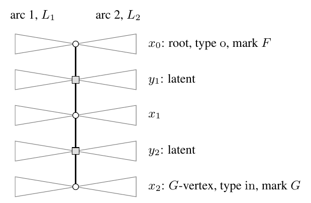

SD Volatility: same-time and temporal
- SD.1 The volatility in brief
- SD.2 Standing setup and finite estimates
- SD.3 Same-time energies of rows and columns
- SD.4 The independent model
- SD.5 Temporal structure: the lag reduction
- SD.6 The tree-moment response
- SD.7 The closed-form lag kernel
- SD.8 Mode-resolved coefficients
- SD.9 Specializations
This section identifies the volatility coefficient of the dynamics. In the exact recursion (SA.20), the quadratic term of step \(t\) is the conditional second moment \(\cV_{ij}(t)\) of the projected update. With momentum, the updates of nearby steps are correlated, because consecutive buffers share most of their batches. Over the \(B\) steps of a unit of macroscopic time the quadratic terms therefore accumulate as the integrated centered covariance of the filtered update: the sum, over all lags, of the covariances between the centered updates of two times. The volatility coefficients \(\mathfrak v_{ij}\) and \(\mathfrak v_i\) of the appendix are the deterministic equivalents of this integrated covariance on modes and on rows. The paragraph after Proposition SD.3 says why the dynamics use them in place of the raw one-step coefficient.
The section has three parts. The first part treats the same-time update. For every pair of covariances the update Gram matrix is an affine function of one Gram resolvent, and Theorem SD.1 identifies the expected energy of every row and every column of the update. The second part treats the temporal structure. Theorem SD.2 writes the accumulated covariance over \(T\) steps exactly through lag covariances, bounds them geometrically in the lag, and replaces the actual residuals by independent Gaussian weights at every fixed lag. Definition SD.4 gives an explicit moment algorithm for the independent model, Theorem SD.3 proves that its unique continuous extension to the filters is the deterministic equivalent of every fixed-lag covariance, and Theorem SD.4 sums the lags. The third part evaluates these deterministic objects. Theorem SD.5 gives the lag kernel \(\mathfrak k_\ell\) in closed form, for every lag, every pair of diagonal tests and every pair of covariances, and Corollary SD.3 turns it into an explicit formula for the volatility \(\mathfrak v_{ij}\) of every mode. Section SD.8 assembles the row coefficients \(\mathfrak v_i\) for \(\Sigmain=\Id\) and the mode coefficients \(\mathfrak v_{ij}\) in general, and Section SD.9 recovers from the closed form the same-time totals with two anisotropic covariances, the row coefficients of the half-anisotropic setup and the case without momentum.
SD.1 The volatility in brief
This subsection collects the definitions needed to read the main results of the section, states those results informally, and says where each is proved.
Objects. Freeze the error at \(\Dt\) and let \(M_{t'}\), \(t'\in\mathbb Z\), be the stationary momentum buffer of Definition SA.3. At a normalized ridge \(\ridge>0\) the update of step \(t'\) and its fluctuation are
\[
{\mathsf S}_{t'}=\Qridge\ridge(M_{t'}),\qquad {\mathsf S}^{\mathrm c}_{t'}={\mathsf S}_{t'}-\EE\,{\mathsf S}_{t'} ,
\]
with \(\Qridge\ridge\) the regularized SignSVD map of (SA.12). In the eigenbases \((u_i)\) of \(\Sigmaout\) and \((v_j)\) of \(\Sigmain\), write \(({\mathsf S})_{ij}=u_i^\T{\mathsf S}v_j\) for the entry of mode \((i,j)\).
The volatility of a mode. The actual volatility of mode \((i,j)\) is the long-run variance of its entry,
\[
\mathsf v_{ij}\defeq\EE\big[({\mathsf S}^{\mathrm c}_t)_{ij}^2\big]+2\sum_{\ell\ge1}\EE\big[({\mathsf S}^{\mathrm c}_t)_{ij}\,({\mathsf S}^{\mathrm c}_{t+\ell})_{ij}\big]
=\lim_{T\to\infty}\frac1T\,\EE\Big(\sum_{t'=1}^T({\mathsf S}^{\mathrm c}_{t'})_{ij}\Big)^2 .
\]
It is the noise that \(T\) steps inject into mode \((i,j)\), per step, and it is the coefficient of \(\lr^2\) in the mode recursion. The first term is the same-step variance. The lag terms are present only with momentum: consecutive buffers share most of their batches, so updates at nearby steps are correlated, with correlations decaying like \(\bmom^\ell\). When \(\Sigmain=\Id\), the main text uses the row sums \(\mathsf v_i\defeq\sum_j\mathsf v_{ij}\), which are the same expression with \(({\mathsf S})_{ij}\) replaced by the row vector \({\mathsf S}^\T u_i\).
The formula. The deterministic volatility is built from the branch \((\sigma,\tilde\sigma,\tilde s_1,s_1,q)(-s)\) of the fixed-point system of Section SB, evaluated at two spectral parameters \(s,u>0\); primes denote the branch at \(-u\). Put
\[
\mathsf U\defeq\frac1B\sum_{i=1}^{\Nout}\frac{\mu_i^2}{(s+\tilde s_1\mu_i)(u+\tilde s_1'\mu_i)},\qquad
\mathsf V\defeq\frac1B\sum_{j=1}^{\Nin}\frac{\lambda_j^2}{(s+s_1\lambda_j)(u+s_1'\lambda_j)},
\]
and, for a lag \(\ell\ge0\), with the EMA weights \(\emaw j=(1-\bmom)\bmom^j\) and \(g\) a standard Gaussian scalar,
\[
b_\ell\defeq\sum_{j\ge0}\EE\frac{\bmom^\ell\emaw j^2g^2}{(1+q\emaw j^2g^2)(1+\bmom^{2\ell}q'\emaw j^2g^2)},\qquad
e_\ell\defeq\sum_{j\ge0}\EE\frac{\bmom^{2\ell}\emaw j^4g^4}{(1+q\emaw j^2g^2)(1+\bmom^{2\ell}q'\emaw j^2g^2)},
\]
\[
\Delta_\ell\defeq\big(1-su\,\mathsf U\,\tilde\sigma\tilde\sigma'e_\ell\big)\big(1-su\,\mathsf V\,\sigma\sigma'e_\ell\big)-su\,\mathsf U\mathsf V\,b_\ell^2 .
\]
For eigenvalues \(\mu\) of \(\Sigmaout\) and \(\lambda\) of \(\Sigmain\), the lag-\(\ell\) kernel of the mode pair and its integral along the negative axis are
\[
\begin{gathered}
\mathfrak h_\ell(\mu,\lambda;s,u)\defeq\frac{su\,\mu\lambda\,b_\ell}{(s+\tilde s_1\mu)(u+\tilde s_1'\mu)(s+s_1\lambda)(u+s_1'\lambda)\,\Delta_\ell},\\
\mathfrak c_\ell(\mu,\lambda;\ridge)\defeq\frac4{\pi^2}\int_0^\infty\!\!\int_0^\infty\mathfrak h_\ell(\mu,\lambda;\ridge+x^2,\ridge+y^2)\,dx\,dy .
\end{gathered}
\]
The volatility of the mode \((i,j)\) is
\[
\mathfrak v_{ij}(\ridge)=\frac1B\Big(\mathfrak c_0(\mu_i,\lambda_j;\ridge)+2\sum_{\ell\ge1}\mathfrak c_\ell(\mu_i,\lambda_j;\ridge)\Big).
\]
The first term is the same-step variance and the lag terms are the correlations between nearby steps. Every term is nonnegative.
What is proved.
- (i)Deterministic mode coefficients (Proposition SD.3). There are deterministic numbers \(\mathfrak v_{ij}=\mathfrak v_{ij}(\ridge)\ge0\), depending on \((i,j)\) only through the eigenvalue pair \((\mu_i,\lambda_j)\) and vanishing when \(\mu_i\lambda_j=0\), that approximate the actual \(\mathsf v_{ij}\) after averaging over modes: for every bounded Lipschitz function \(\phi\) on the spectral rectangle,\[ \frac1B\sum_{i,j}\phi(\mu_i,\lambda_j)\,\big(\mathsf v_{ij}-\mathfrak v_{ij}\big)\longrightarrow0 \]in the proportional regime, uniformly in \(\phi\) with \(\norm\phi_\infty\le1\), \(\operatorname{Lip}\phi\le1\) and in the ridge on compacts. No statement is made about an individual entry.
- (ii)The formula (Theorem SD.5 and Corollary SD.3). The numbers of (i) are given by the formula above, for every pair of positive semidefinite covariances, every \(\bmom\in[0,1)\) and every \(\ridge>0\). The determinant \(\Delta_\ell\) is positive, each lag term \(\mathfrak c_\ell\) is nonnegative and decays like \(\bmom^\ell\), and the series converges absolutely. The lag enters only through the two scalars \(b_\ell\) and \(e_\ell\); no closed form of the lag sum is claimed. The route to the formula is the lag reduction (Theorem SD.2), the tree-moment response (Theorem SD.3 and Theorem SD.4), which identifies the lag kernels with the lag covariances of the actual updates, and the closed-form evaluation of those kernels (Theorem SD.5).
- (iii)Same-step energies (Theorem SD.1 and Corollary SD.4). For every pair of covariances the expected row and column energies of the update are within a vanishing error of\[ \volraw_i(\ridge)=\frac{\tilde s_1(-\ridge)\,\mu_i}{\ridge+\tilde s_1(-\ridge)\,\mu_i},\qquad \widetilde{\mathfrak v}^{(0)}_j(\ridge)=\frac{s_1(-\ridge)\,\lambda_j}{\ridge+s_1(-\ridge)\,\lambda_j}, \]uniformly in \(i\) and \(j\), with \(\tilde s_1\) and \(s_1\) the scalars of the fixed-point system of Section SB. In the formula these are the marginals of the same-step term: \(B^{-1}\sum_j\mathfrak c_0(\mu_i,\lambda_j;\ridge)=\volraw_i(\ridge)\) and \(B^{-1}\sum_i\mathfrak c_0(\mu_i,\lambda_j;\ridge)=\widetilde{\mathfrak v}^{(0)}_j(\ridge)\).
- (iv)Specializations (Section SD.9). Without momentum, \(b_\ell=0\) for \(\ell\ge1\), so \(\mathfrak v_{ij}=\mathfrak c_0/B\) and the row sums are \(\sum_j\mathfrak v_{ij}=\volraw_i\); for isotropic covariances the total same-step volatility tends, as \(\ridge\to0\), to the rank of the gradient, \(\min\{B,\Nin,\Nout\}\) (Proposition SF.2). When \(\Sigmain=\Id\), the row coefficients \(\mathfrak v_i=\sum_j\mathfrak v_{ij}\) used in the main text are given by the two-time row response of Proposition SG.3, and \(\frac1B\sum_i\abs{\mathsf v_i-\mathfrak v_i}\to0\) (Theorem SD.7). With two anisotropic covariances the covariance-weighted same-step total is the two-resolvent kernel of Corollary SD.5. In the isotropic case all modes carry the same coefficient, \(\mathfrak v_{ij}=\mathfrak v_{\mathrm{iso}}/(\Nout\Nin)\) (Theorem SF.2).
SD.2 Standing setup and finite estimates
The section works in the frozen-state model of Definition SA.3, with the samples indexed by time as in the paragraph following that definition, so that \(M_{t'}=\sum_{j\ge0}\emaw jG_{t'+1-j}\) for every integer \(t'\). All asymptotic statements are made under Assumption S3, with the normalized ridge in \([\ridge_-,\ridge_+]\) and with the eigenbases \((u_i)\) of \(\Sigmaout\) and \((v_j)\) of \(\Sigmain\) of Definition SA.1; for a matrix \(V\) we write \(V_{ij}\defeq u_i^\T Vv_j\). From Section SA the section uses the pairing \(\langle\cdot,\cdot\rangle_\Sigma\) of (SA.2), the filter bounds and the Lipschitz estimate of Lemma SA.2, the integral representation Lemma SA.3, the batch variance \(\mathsf V_B\) of Lemma SA.4, the stationary law of Lemma SA.5, the truncation bounds of Lemma SA.6 and the residual law Lemma SA.7. From Section SB it uses the branch \((\sigma,\tilde\sigma,\tilde s_1,s_1,q)(-s)\) and the deterministic equivalents \(\Rbar(-s)\), \(\Rtbar(-s)\) of Definition SB.1, the function \(r_{\bmom}(q)\defeq q\Fw(q)\) of Lemma SB.1(iii), the notation \(R_s(K)\), \(\widetilde R_s(K)\), \(\mathsf X_s(K)=R_s(K)K\) of (SB.10), and the results cited where they are used. From Section SC it uses the regularized mean Theorem SC.2.
Constants: for a compact \(\mathcal J\subset(0,\infty)\), \(C_{\mathcal J}\) denotes a constant depending only on \((\min\mathcal J,\allowbreak\max\mathcal J,\allowbreak C_\Sigma,\allowbreak\gamma_\star)\); \(C_I\) denotes a constant depending only on \((\ridge_-,C_\Sigma,\gamma_\star)\); \(C\) without subscript depends only on \((C_\Sigma,\gamma_\star)\). All may change from line to line. A constant never depends on the dimension, on the lag or on the matrices \(F,G\) introduced below, unless the statement says so. A statement at a fixed dimension that involves \(\gamma_\star\) or \(C_\Sigma\) assumes \(\max(\Nin,\Nout)\le\gamma_\star B\) and \(\norm{\Sigmaout},\norm{\Sigmain}\le C_\Sigma\) at that dimension.
Odd spectral functions. Let \(f:\R\to\R\) be odd. For \(K\in\R^{\Nout\times\Nin}\) with singular value decomposition \(K=\sum_ks_k\,p_k\tensor r_k\) we put
\begin{equation}\tag{SD.1}
f^\sharp(K)\defeq\sum_kf(s_k)\,p_k\tensor r_k .
\end{equation}
The sum does not depend on the decomposition, by the argument following (SA.12). The two filters of the section are
\begin{equation}\tag{SD.2}
\iota_s(x)\defeq\frac{x}{x^2+s}\quad(s>0),\qquad
\omega_\ridge(x)\defeq\frac{x}{\sqrt{x^2+\ridge}}\quad(\ridge>0),
\end{equation}
for which
\begin{equation}\tag{SD.3}
\iota_s^\sharp(K)=\mathsf X_s(K)=\big(KK^\T+s\Id\big)^{-1}K,\qquad
\omega_\ridge^\sharp(K)=\Qridge\ridge(K),
\end{equation}
Lemma SD.1 (Odd spectral functions)
Let \(f\) be odd, bounded and Lipschitz on \(\R\), with \(\norm f_\infty\defeq\sup_x\abs{f(x)}\) and Lipschitz constant \(\operatorname{Lip}(f)\). For all \(K,K'\in\R^{\Nout\times\Nin}\),
\begin{equation}\tag{SD.4}
\begin{gathered}
\norm{f^\sharp(K)}\le\norm f_\infty,\qquad
\norm{f^\sharp(K)}_\F\le\sqrt{\min(\Nout,\Nin)}\,\norm f_\infty,\\
\norm{f^\sharp(K)-f^\sharp(K')}_\F\le\operatorname{Lip}(f)\,\norm{K-K'}_\F .
\end{gathered}
\end{equation}
The filters (SD.2) satisfy
\begin{equation}\tag{SD.5}
\norm{\iota_s}_\infty=\frac1{2\sqrt s},\quad \operatorname{Lip}(\iota_s)\le\frac1s,\qquad
\norm{\omega_\ridge}_\infty=1,\quad \operatorname{Lip}(\omega_\ridge)\le\ridge^{-1/2},
\end{equation}
and, for all \(s,s'\ge s_\circ>0\) and \(\ridge,\ridge'\ge\ridge_\circ>0\),
\begin{equation}\tag{SD.6}
\norm{\iota_s-\iota_{s'}}_\infty\le\frac{\abs{s-s'}}{s_\circ^{3/2}},\qquad
\norm{\omega_\ridge-\omega_{\ridge'}}_\infty\le\frac{\abs{\ridge-\ridge'}}{2\ridge_\circ} .
\end{equation}
Proof
Proof.
The first two bounds read off the singular values: the singular values of \(f^\sharp(K)\) are the numbers \(\abs{f(s_k)}\le\norm f_\infty\), and there are at most \(\min(\Nout,\Nin)\) of them.
The Lipschitz bound is the divided-difference argument in the proof of Lemma SA.2(iii). That argument uses only that the function is odd and Lipschitz: for odd \(f\) the symmetric dilation satisfies
\[
f\big(\mathcal D(K)\big)=\begin{pmatrix}0&f^\sharp(K)\\ f^\sharp(K)^\T&0\end{pmatrix},
\]
by the eigenvector computation given there, and the divided-difference bound for \(\mathcal D(K)\) and \(\mathcal D(K')\) gives the third bound of (SD.4) after cancelling the factor \(\sqrt2\).
The constants of the two filters are elementary. The maximum of \(x/(x^2+s)\) is attained at \(x=\sqrt s\), and
\[
\iota_s'(x)=\frac{s-x^2}{(x^2+s)^2},\qquad \abs{\iota_s'(x)}\le\frac{1}{x^2+s}\le\frac1s .
\]
The bounds for \(\omega_\ridge\) are those of the proof of Lemma SA.2(iii). For the parameters,
\[
\partial_s\iota_s(x)=-\frac{x}{(x^2+s)^2},\qquad
\partial_\ridge\omega_\ridge(x)=-\frac{x}{2(x^2+\ridge)^{3/2}},
\]
whose absolute values are at most \(\iota_s(\abs x)/(x^2+s)\le s^{-3/2}\) and \(1/(2\ridge)\); the mean value theorem in the parameter gives (SD.6).
Tested contractions. For deterministic \(F\in\R^{\Nout\times\Nout}\) and \(G\in\R^{\Nin\times\Nin}\), odd bounded functions \(f_1,f_2\), and \(K,H\in\R^{\Nout\times\Nin}\), we put
\begin{equation}\tag{SD.7}
\mathcal K^{F,G}[f_1,f_2](K,H)\defeq\frac1B\Tr\big[F\,f_1^\sharp(K)\,G\,f_2^\sharp(H)^\T\big],
\qquad
\mathcal K^{F,G}_{s,u}(K,H)\defeq\mathcal K^{F,G}[\iota_s,\iota_u](K,H).
\end{equation}
The covariance-weighted case \(F=\Sigmaout\), \(G=\Sigmain\) is written without superscript, \(\mathcal K_{s,u}\defeq\mathcal K^{\Sigmaout,\Sigmain}_{s,u}\); for it, \(\mathcal K[\omega_\ridge,\omega_{\ridge'}](K,H)=B^{-1}\langle\Qridge\ridge(K),\Qridge{\ridge'}(H)\rangle_\Sigma\).
Lemma SD.2 (Finite bounds for tested contractions)
Let \(\norm F,\norm G\le1\), let \(f_1,f_2\) be odd, bounded and Lipschitz, and let \(K,K',H,H'\in\R^{\Nout\times\Nin}\). Then
\begin{align}
\abs{\mathcal K^{F,G}[f_1,f_2](K,H)}&\le\gamma_\star\norm{f_1}_\infty\norm{f_2}_\infty ,\tag{SD.8}\\
\abs{\mathcal K^{F,G}[f_1,f_2](K,H)-\mathcal K^{F,G}[f_1,f_2](K',H')}
&\le\sqrt{\frac{\gamma_\star}{B}}\Big(\operatorname{Lip}(f_1)\norm{f_2}_\infty\norm{K-K'}_\F\notag\\
&\qquad\qquad+\norm{f_1}_\infty\operatorname{Lip}(f_2)\norm{H-H'}_\F\Big),\tag{SD.9}
\end{align}
and the bilinear dependence on the filters gives
\begin{equation}\tag{SD.10}
\abs{\mathcal K^{F,G}[f_1,f_2](K,H)-\mathcal K^{F,G}[f_1',f_2'](K,H)}
\le\gamma_\star\big(\norm{f_1-f_1'}_\infty\norm{f_2}_\infty+\norm{f_1'}_\infty\norm{f_2-f_2'}_\infty\big).
\end{equation}
For the resolvent filters, with \(s,u\ge s_\circ>0\),
\begin{equation}\tag{SD.11}
\abs{\mathcal K^{F,G}_{s,u}(K,K)-\mathcal K^{F,G}_{s,u}(K',K')}\le\frac{2}{B\,s_\circ^{3/2}}\norm{K-K'}_* .
\end{equation}
Proof
Proof.
The first bound is trace duality with a rank bound. The matrix \(F f_1^\sharp(K)Gf_2^\sharp(H)^\T\) has rank at most \(\min(\Nout,\Nin)\le\gamma_\star B\) and operator norm at most \(\norm{f_1}_\infty\norm{f_2}_\infty\) by Lemma SD.1, and the absolute trace of a matrix is at most its rank times its operator norm.
The second bound follows by telescoping the two arguments. Changing \(K\) to \(K'\) changes the trace by at most
\[
\frac1B\norm{f_1^\sharp(K)-f_1^\sharp(K')}_\F\,\norm{f_2^\sharp(H)}_\F
\le\frac1B\operatorname{Lip}(f_1)\norm{K-K'}_\F\cdot\sqrt{\gamma_\star B}\,\norm{f_2}_\infty ,
\]
by the Cauchy–Schwarz inequality for the Frobenius pairing and (SD.4); changing \(H\) to \(H'\) is symmetric. The third bound is the first bound applied to the two differences.
The nuclear bound is the resolvent identity for the symmetric dilation. The proof of Lemma SB.9, read in the upper right block of \((\mathcal D(K)-i\sqrt s\,\Id)^{-1}\), whose upper right block is \(\mathsf X_s(K)\), gives
\[
\norm{\mathsf X_s(K)-\mathsf X_s(K')}_*\le\frac2s\,\norm{K-K'}_* .
\]
With \(\norm{\mathsf X_u(K)}\le(2\sqrt u)^{-1}\) from Lemma SB.3 and trace duality \(\abs{\Tr(XY)}\le\norm X_*\norm Y\), telescoping the two arguments gives
\[
\abs{\mathcal K^{F,G}_{s,u}(K,K)-\mathcal K^{F,G}_{s,u}(K',K')}
\le\frac1B\Big(\frac2s\cdot\frac{1}{2\sqrt u}+\frac{1}{2\sqrt s}\cdot\frac2u\Big)\norm{K-K'}_*
\le\frac{2}{Bs_\circ^{3/2}}\norm{K-K'}_* .\qedhere
\]
Square truncation of the filter. The regularized update is the integral (SA.14) of \(\mathsf X_{\ridge+x^2}\) over \(x\in(0,\infty)\). We truncate it at \(T>0\):
\begin{equation}\tag{SD.12}
\omega_{\ridge,T}(x)\defeq\frac2\pi\int_0^T\iota_{\ridge+y^2}(x)\,dy,\qquad
\Qridge{\ridge,T}(K)\defeq\omega_{\ridge,T}^\sharp(K)=\frac2\pi\int_0^T\mathsf X_{\ridge+y^2}(K)\,dy .
\end{equation}
Lemma SD.3 (Square truncation)
For \(\ridge>0\), \(T>0\) and \(x\in\R\),
\begin{equation}\tag{SD.13}
0\le\frac{\omega_{\ridge,T}(x)}{\omega_\ridge(x)}\le1\quad(x\ne0),\qquad
\abs{\omega_\ridge(x)-\omega_{\ridge,T}(x)}\le\frac{2\abs x}{\pi T}.
\end{equation}
Consequently, for random \(K,H\in\R^{\Nout\times\Nin}\) with \(B^{-1}\EE\norm K_\F^2\le C_M\) and \(B^{-1}\EE\norm H_\F^2\le C_M\), and for \(\norm F,\norm G\le1\),
\begin{equation}\tag{SD.14}
\Big|\EE\,\mathcal K^{F,G}[\omega_\ridge,\omega_{\ridge'}](K,H)
-\frac4{\pi^2}\int_0^T\!\!\int_0^T\EE\,\mathcal K^{F,G}_{\ridge+x^2,\ridge'+y^2}(K,H)\,dx\,dy\Big|
\le\frac{4\sqrt{\gamma_\star C_M}}{\pi T}.
\end{equation}
In the frozen-state model, \(B^{-1}\EE\norm{\Mt}_\F^2\le C_M\defeq C_\Sigma^2(\gamma_\star+2)^2\).
Proof
Proof.
\[
\omega_\ridge(x)-\omega_{\ridge,T}(x)=\frac2\pi\int_T^\infty\frac{x}{x^2+\ridge+y^2}\,dy ,
\]
which has the sign of \(x\) and absolute value at most \(\frac2\pi\abs x\int_T^\infty y^{-2}dy=2\abs x/(\pi T)\); the truncated integral has the same sign and a smaller absolute value than the full one, which is \(\omega_\ridge(x)\) by the scalar identity in the proof of Lemma SA.3.
The matrix bound follows from the scalar one. Applied to the singular values, (SD.13) gives
\[
\norm{\Qridge{\ridge,T}(K)}_\F\le\norm{\Qridge\ridge(K)}_\F\le\sqrt{\gamma_\star B},\qquad
\norm{\Qridge\ridge(K)-\Qridge{\ridge,T}(K)}_\F\le\frac{2}{\pi T}\norm K_\F .
\]
Telescoping the two arguments as in the proof of Lemma SD.2,
\[
\big|\mathcal K^{F,G}[\omega_\ridge,\omega_{\ridge'}](K,H)-\mathcal K^{F,G}[\omega_{\ridge,T},\omega_{\ridge',T}](K,H)\big|
\le\frac{2\sqrt{\gamma_\star}}{\pi T}\Big(\frac{\norm K_\F}{\sqrt B}+\frac{\norm H_\F}{\sqrt B}\Big),
\]
whose expectation is at most \(4\sqrt{\gamma_\star C_M}/(\pi T)\) by the Cauchy–Schwarz inequality. The truncated contraction is the double integral of the resolvent contractions, because \(\Qridge{\ridge,T}\) is the integral (SD.12) and the trace is bilinear; this gives (SD.14).
The second-moment bound is Lemma SA.5(iii) with the bounds of Lemma SA.6(iv):
\[
\begin{aligned}
\frac1B\EE\norm{\Mt}_\F^2&=\frac1B\Big(\norm{\EE\Gt}_\F^2+\sw2\mathsf V_B\Big)
\le\frac{C_\Sigma^2}{B}+\frac{C_\Sigma^2}{B^2}\big(\Nout\Nin+2\Nout+2\Nin+3\big)\\
&\le C_\Sigma^2(\gamma_\star+2)^2=C_M ,
\end{aligned}
\]
using \(\sw2\le1\), \(\Nout,\Nin\le\gamma_\star B\) and \(B\ge1\).
The filtered updates and their covariances. For \(\ridge>0\) and an integer \(t'\) we write
\begin{equation}\tag{SD.15}
{\mathsf S}_{t'}(\ridge)\defeq\Qridge\ridge(M_{t'}),\qquad
{\mathsf S}^{\mathrm c}_{t'}(\ridge)\defeq {\mathsf S}_{t'}(\ridge)-\EE\,{\mathsf S}_{t'}(\ridge).
\end{equation}
By Lemma SA.5(ii) the sequence \(({\mathsf S}_{t'}(\ridge))_{t'}\) is stationary, so the quantities below do not depend on \(t\).
Definition SD.1 (Tested lag covariances)
For symmetric deterministic \(F\in\R^{\Nout\times\Nout}\) and \(G\in\R^{\Nin\times\Nin}\), ridges \(\ridge,\ridge'>0\) and a lag \(\ell\ge0\), the tested lag covariance is
\begin{equation}\tag{SD.16}
C_\ell[F,G](\ridge,\ridge')\defeq\frac1B\,\EE\Tr\big[F\,{\mathsf S}^{\mathrm c}_t(\ridge)\,G\,{\mathsf S}^{\mathrm c}_{t+\ell}(\ridge')^\T\big],
\end{equation}
and, when the series converges absolutely, the integrated covariance is
\begin{equation}\tag{SD.17}
\Gamma[F,G](\ridge,\ridge')\defeq C_0[F,G](\ridge,\ridge')
+\sum_{\ell\ge1}\Big(C_\ell[F,G](\ridge,\ridge')+C_\ell[F,G](\ridge',\ridge)\Big).
\end{equation}
The covariance-weighted case is written \(C_\ell\defeq C_\ell[\Sigmaout,\Sigmain]\) and \(\Gamma\defeq\Gamma[\Sigmaout,\Sigmain]\), so that \(C_\ell(\ridge,\ridge')=B^{-1}\EE\langle {\mathsf S}^{\mathrm c}_t(\ridge),{\mathsf S}^{\mathrm c}_{t+\ell}(\ridge')\rangle_\Sigma\). When \(\Sigmain=\Id\), the row covariances are
\begin{equation}\tag{SD.18}
C_{i,\ell}(\ridge,\ridge')\defeq B\,C_\ell[u_i\tensor u_i,\Id](\ridge,\ridge')
=\EE\big\langle {\mathsf S}^{\mathrm c}_t(\ridge)^\T u_i,\;{\mathsf S}^{\mathrm c}_{t+\ell}(\ridge')^\T u_i\big\rangle ,
\end{equation}
and \(\Gamma_i\) is their integrated sum, defined as in (SD.17).
The same-time totals are
\begin{equation}\tag{SD.19}
Z(\ridge)\defeq\frac1B\norm{{\mathsf S}_t(\ridge)}_\Sigma^2,\qquad
Z^{\mathrm c}(\ridge)\defeq\frac1B\norm{{\mathsf S}^{\mathrm c}_t(\ridge)}_\Sigma^2 ,
\end{equation}
so that \(\EE Z^{\mathrm c}(\ridge)=C_0(\ridge,\ridge)\). In the frozen one-step identity (SC.15) the quadratic term is \(\frac{\lr^2}2\EE\norm{\Qridge\ridge(\Mt)}_\Sigma^2=\frac{\lr^2B}{2}\EE Z(\ridge)\).
Lemma SD.4 (Centering)
Under Assumption S3, for all \(\ridge,\ridge'\in[\ridge_-,\ridge_+]\), every lag \(\ell\ge0\) and \(\norm F,\norm G\le1\),
\begin{equation}\tag{SD.20}
\Big|\frac1B\EE\Tr\big[F\,{\mathsf S}_t(\ridge)\,G\,{\mathsf S}_{t+\ell}(\ridge')^\T\big]-C_\ell[F,G](\ridge,\ridge')\Big|
\le\frac{(C_\Sigma\ridge_-^{-1/2}+\varepsilon_B)^2}{B},
\end{equation}
with \(\varepsilon_B\to0\) the sequence of Theorem SC.2, and
\begin{equation}\tag{SD.21}
\sup_{\ridge\in[\ridge_-,\ridge_+]}\abs{Z(\ridge)-Z^{\mathrm c}(\ridge)}\le
C_\Sigma^2\Big(\frac{4\sqrt{\gamma_\star}}{\sqrt B}(C_\Sigma\ridge_-^{-1/2}+\varepsilon_B)+\frac{(C_\Sigma\ridge_-^{-1/2}+\varepsilon_B)^2}{B}\Big).
\end{equation}
Proof
Proof.
The mean of the update is bounded by Theorem SC.2:
\[
\norm{\EE\,{\mathsf S}_t(\ridge)}_\F\le\norm{\Gtildebar_\ridge}_\F+\varepsilon_B\le C_\Sigma\ridge_-^{-1/2}+\varepsilon_B .
\]
The difference in (SD.20) is \(B^{-1}\Tr[F\,\EE {\mathsf S}_t(\ridge)\,G\,(\EE {\mathsf S}_{t+\ell}(\ridge'))^\T]\), by expanding both factors around their means; its absolute value is at most \(B^{-1}\norm{\EE {\mathsf S}_t(\ridge)}_\F\norm{\EE {\mathsf S}_{t+\ell}(\ridge')}_\F\).
The sample bound expands the square. Writing \({\mathsf S}={\mathsf S}_t(\ridge)\) and \(\overline {\mathsf S}=\EE {\mathsf S}\),
\[
Z(\ridge)-Z^{\mathrm c}(\ridge)=\frac1B\Big(2\langle {\mathsf S}-\overline {\mathsf S},\overline {\mathsf S}\rangle_\Sigma+\norm{\overline {\mathsf S}}_\Sigma^2\Big),
\]
and \(\abs{\langle V,W\rangle_\Sigma}\le C_\Sigma^2\norm V_\F\norm W_\F\) with \(\norm{{\mathsf S}-\overline {\mathsf S}}_\F\le2\sqrt{\gamma_\star B}\) by Lemma SA.2(i) gives (SD.21).
SD.3 Same-time energies of rows and columns
For every pair of covariances, the regularized update Gram matrix is an affine function of one Gram resolvent, and the Gram closure of Section SB.3 identifies it directly. For \(\ridge>0\) put
\begin{equation}\tag{SD.22}
\begin{gathered}
\volraw_i(\ridge)\defeq\frac{\tilde s_1(-\ridge)\,\mu_i}{\ridge+\tilde s_1(-\ridge)\,\mu_i},\qquad
\widetilde{\mathfrak v}^{(0)}_j(\ridge)\defeq\frac{s_1(-\ridge)\,\lambda_j}{\ridge+s_1(-\ridge)\,\lambda_j},\\
\overline Z(\ridge)\defeq\frac1B\sum_{i=1}^{\Nout}\mu_i\,\volraw_i(\ridge)=\frac1B\Tr\Sigmaout-\ridge\,\sigma(-\ridge).
\end{gathered}
\end{equation}
The second expression of \(\overline Z\) follows from \(\mu_i\volraw_i=\mu_i-\ridge\mu_i/(\ridge+\tilde s_1\mu_i)\) and the first equation of (SB.2). The letter \(\volraw\) marks a deterministic equivalent of the raw one-step coefficient.
Theorem SD.1 (Same-time energies of rows and columns)
Assume Assumption S3, let \(I=[\ridge_-,\ridge_+]\), and put
\[
e_B\defeq\sup_{s\in I}\norm{\EE R(-s)-\Rbar(-s)},\qquad
\tilde e_B\defeq\sup_{s\in I}\norm{\EE\widetilde R(-s)-\Rtbar(-s)},
\]
which tend to zero by Theorem SB.2.
- (i)The expected update Gram matrices satisfy\begin{equation}\tag{SD.23} \begin{gathered} \sup_{\ridge\in I}\Big\|\EE\big[{\mathsf S}_t(\ridge){\mathsf S}_t(\ridge)^\T\big]-\tilde s_1(-\ridge)\Sigmaout\big(\tilde s_1(-\ridge)\Sigmaout+\ridge\Id\big)^{-1}\Big\|\le\ridge_+\,e_B ,\\ \sup_{\ridge\in I}\Big\|\EE\big[{\mathsf S}_t(\ridge)^\T{\mathsf S}_t(\ridge)\big]-s_1(-\ridge)\Sigmain\big(s_1(-\ridge)\Sigmain+\ridge\Id\big)^{-1}\Big\|\le\ridge_+\,\tilde e_B . \end{gathered} \end{equation}
- (ii)The expected row and column energies satisfy\begin{equation}\tag{SD.24} \begin{gathered} \sup_{\ridge\in I}\max_{1\le i\le\Nout}\Big|\EE\norm{{\mathsf S}_t(\ridge)^\T u_i}^2-\volraw_i(\ridge)\Big|\le\ridge_+\,e_B ,\\ \sup_{\ridge\in I}\max_{1\le j\le\Nin}\Big|\EE\norm{{\mathsf S}_t(\ridge)v_j}^2-\widetilde{\mathfrak v}^{(0)}_j(\ridge)\Big|\le\ridge_+\,\tilde e_B , \end{gathered} \end{equation}\({\mathsf S}_t(\ridge)^\T u_i=0\) for every \(i\) with \(\mu_i=0\), and \({\mathsf S}_t(\ridge)v_j=0\) for every \(j\) with \(\lambda_j=0\).
- (iii)If \(\Sigmain=\Id_{\Nin}\), the raw and centered totals (SD.19) satisfy\begin{equation}\tag{SD.25} \EE\sup_{\ridge\in I}\abs{Z(\ridge)-\overline Z(\ridge)}^2\longrightarrow0,\qquad \EE\sup_{\ridge\in I}\abs{Z^{\mathrm c}(\ridge)-\overline Z(\ridge)}^2\longrightarrow0, \end{equation}and \(\sup_{\ridge\in I}\abs{\EE Z(\ridge)-\overline Z(\ridge)}\le\gamma_\star C_\Sigma\ridge_+e_B\).
- (iv)If \(\Sigmaout=\Id_{\Nout}\), (iii) holds with the candidate \(\overline Z\) replaced by \(B^{-1}\Tr\Sigmain-\ridge\,\tilde\sigma(-\ridge)\) and \(e_B\) by \(\tilde e_B\).
The row and column bounds (SD.24) control the maximum over the rows and columns of the expected errors. They give no relative accuracy for rows or columns whose coefficient is small, and no statement about the maximum of the random energies. With two anisotropic covariances the covariance-weighted total is not a function of one resolvent; it is identified in Corollary SD.5. When \(\Sigmain=\Id\), by (iii), the quadratic term of the frozen one-step identity (SC.15) is
\begin{equation}\tag{SD.26}
\frac{\lr^2}{2}\,\EE\norm{\Qridge\ridge(\Mt)}_\Sigma^2=\frac{\lr^2B}{2}\Big(\overline Z(\ridge)+r_B(\ridge)\Big),\qquad
\sup_{\ridge\in I}\abs{r_B(\ridge)}\le\gamma_\star C_\Sigma\ridge_+e_B .
\end{equation}
Proof
Proof.
The proof rests on two exact identities. For \(K\in\R^{\Nout\times\Nin}\) and \(\ridge>0\),
\begin{equation}\tag{SD.27}
\begin{gathered}
\Qridge\ridge(K)\Qridge\ridge(K)^\T=KK^\T\big(KK^\T+\ridge\Id\big)^{-1}=\Id-\ridge\,R_\ridge(K),\\
\Qridge\ridge(K)^\T\Qridge\ridge(K)=\Id-\ridge\,\widetilde R_\ridge(K).
\end{gathered}
\end{equation}
Indeed, in a singular value decomposition the first left side has the eigenvalue \(s_k^2/(s_k^2+\ridge)=1-\ridge/(s_k^2+\ridge)\) on the left singular vector \(p_k\) and vanishes on the left null space of \(K\), where the right side is \(1-\ridge/\ridge=0\). The second identity is the same computation on the right singular vectors.
\[
\EE\big[{\mathsf S}_t(\ridge){\mathsf S}_t(\ridge)^\T\big]-\big(\Id-\ridge\Rbar(-\ridge)\big)=-\ridge\big(\EE R(-\ridge)-\Rbar(-\ridge)\big),
\]
whose norm is at most \(\ridge_+e_B\), and \(\Id-\ridge\Rbar(-\ridge)=\tilde s_1\Sigmaout(\tilde s_1\Sigmaout+\ridge\Id)^{-1}\) by (SB.3). The second bound is the same argument with \(\widetilde R(-\ridge)\), \(\Rtbar(-\ridge)=(\ridge+s_1\Sigmain)^{-1}\) and \(\tilde e_B\).
Part (ii) tests (i) with unit vectors. Since \(\norm{{\mathsf S}_t^\T u_i}^2=u_i^\T {\mathsf S}_t{\mathsf S}_t^\T u_i\) and \(u_i^\T(\Id-\ridge\Rbar(-\ridge))u_i=1-\ridge/(\ridge+\tilde s_1\mu_i)=\volraw_i(\ridge)\), the bound \(\abs{u^\T Xu}\le\norm X\) for unit \(u\) gives the row bound. The column bound is the same with \(\norm{{\mathsf S}_tv_j}^2=v_j^\T{\mathsf S}_t^\T{\mathsf S}_tv_j\) and \(v_j^\T(\Id-\ridge\Rtbar(-\ridge))v_j=\widetilde{\mathfrak v}^{(0)}_j(\ridge)\). If \(\mu_i=0\) then \(\Sigmaout^{1/2}u_i=0\), so \(u_i^\T G_{t'}=0\) for every batch and \(u_i^\T\Mt=0\); then Lemma SA.2(ii), with the projection \(\Id-u_i\tensor u_i\) on the output side, gives \(u_i^\T {\mathsf S}_t=0\). If \(\lambda_j=0\) then \(\Sigmain^{1/2}v_j=0\), so \(\Mt v_j=0\), and the projection \(\Id-v_j\tensor v_j\) on the input side gives \({\mathsf S}_tv_j=0\).
Part (iii) is the covariance-weighted trace of (SD.27). Since \(\Sigmain=\Id\), \(\norm {\mathsf S}_\Sigma^2=\Tr(\Sigmaout {\mathsf S}{\mathsf S}^\T)\), and therefore
\[
Z(\ridge)-\overline Z(\ridge)=-\ridge\Big(\frac1B\Tr\big(\Sigmaout R(-\ridge)\big)-\sigma(-\ridge)\Big).
\]
The last claim of Corollary SB.1 gives \(\EE\sup_{s\in I}\abs{B^{-1}\Tr(\Sigmaout R(-s))-\sigma(-s)}^2\to0\), and the first statement of (SD.25) follows with the factor \(\ridge_+^2\). Taking expectations instead,
\[
\abs{\EE Z(\ridge)-\overline Z(\ridge)}=\ridge\,\Big|\frac1B\Tr\big(\Sigmaout(\EE R(-\ridge)-\Rbar(-\ridge))\big)\Big|
\le\ridge_+\frac{\Nout}{B}C_\Sigma e_B\le\gamma_\star C_\Sigma\ridge_+e_B .
\]
The centered statement follows from the raw one and (SD.21), by \((x+y)^2\le2x^2+2y^2\).
Part (iv) is the same computation on the input side. Since \(\Sigmaout=\Id\), \(\norm{\mathsf S}_\Sigma^2=\Tr(\Sigmain{\mathsf S}^\T{\mathsf S})\), so the second identity of (SD.27) gives \(Z(\ridge)-B^{-1}\Tr\Sigmain+\ridge\tilde\sigma(-\ridge)=-\ridge\big(B^{-1}\Tr(\Sigmain\widetilde R(-\ridge))-\tilde\sigma(-\ridge)\big)\), and the second statement of Corollary SB.1 replaces the first.
Remark SD.1 (The spectral form of the row coefficient)
Let \(\rho_i\) be the spectral measure of \(u_i\) for \(\Mt\Mt^\T\): with \(\Mt=\sum_ks_k\,p_k\tensor r_k\) and \(P_0\) the projection on the left null space of \(\Mt\),
\[
\rho_i\defeq\sum_k(u_i^\T p_k)^2\,\delta_{s_k^2}+\norm{P_0u_i}^2\,\delta_0 ,
\]
a random probability measure on \([0,\infty)\) with \(u_i^\T R(-\ridge)u_i=\int(x+\ridge)^{-1}\rho_i(dx)\). Testing (SD.27) with \(u_i\) gives, exactly,
\[
\norm{{\mathsf S}_t(\ridge)^\T u_i}^2=\int_{[0,\infty)}\frac{x}{x+\ridge}\,\rho_i(dx)
=1-\ridge\,u_i^\T R(-\ridge)u_i .
\]
This is the spectral formula \(\mathfrak v_i=\int\varphi(x)^2x\,\rho_i(dx)\) used for the half-anisotropic kernels of Section 4, for the regularized filter \(\varphi_\ridge(x)=(x+\ridge)^{-1/2}\), for which \(\varphi_\ridge(x)^2x=x/(x+\ridge)\); Theorem SD.1(ii) is the statement that its expectation is \(\volraw_i(\ridge)\) up to \(\ridge_+e_B\). As \(\ridge\downarrow0\) the integrand tends to \(\mathbf 1_{(0,\infty)}(x)\), which is the SignSVD form \(\rho_i((0,\infty))\) of the main text; no statement of the appendix is made at \(\ridge=0\). The coefficient \(\volraw_i\) is the raw same-time coefficient; the integrated coefficient \(\mathfrak v_i\) of the dynamics is identified in Theorem SD.7, whose zero-lag term at equal ridges is again \(\volraw_i\).
SD.4 The independent model
The temporal analysis compares the actual buffer with a model in which the residuals are replaced by independent Gaussian weights, and compares a fixed finite dimension with its replications. This subsection introduces both and proves the replacement.
Definition SD.2 (Independent product model)
In the frozen-state model with samples indexed by time, let \((g_{t'a})_{t'\in\mathbb Z,\,a\le B}\) be independent standard Gaussian scalars, independent of the features, and put
\begin{equation}\tag{SD.28}
\begin{gathered}
G^{\mathrm g}_{t'}\defeq\frac1B\sum_{a=1}^Bg_{t'a}\,\Sigmaout^{1/2}(z_{t'a}\tensor w_{t'a})\Sigmain^{1/2},\\
M^{\mathrm g}_{t'}\defeq\sum_{j\ge0}\emaw jG^{\mathrm g}_{t'+1-j},\qquad
{\mathsf S}^{\mathrm g}_{t'}(\ridge)\defeq\Qridge\ridge(M^{\mathrm g}_{t'}).
\end{gathered}
\end{equation}
The independent model involves no state. Its statements are made under the size conditions of Assumption S3: \(\max(\Nin,\Nout)\le\gamma_\star B\), \(\norm{\Sigmaout},\norm{\Sigmain}\le C_\Sigma\), and \(\Nin/B\to\gin\), \(\Nout/B\to\gout\). Since the family \((g_{t'a})\) and its negative have the same law, and odd spectral functions are odd in the matrix, \(\EE f^\sharp(M^{\mathrm g}_{t'})=0\) for every odd bounded \(f\). The samples of distinct times are independent with centered products, so that
\begin{equation}\tag{SD.29}
\frac1B\EE\norm{M^{\mathrm g}_{t'}}_\F^2=\frac{\sw2}{B^2}\Tr\Sigmaout\Tr\Sigmain\le C_\Sigma^2\gamma_\star^2 .
\end{equation}
Definition SD.3 (Spectral replication)
Fix a finite dimension \((\Nout,\Nin,B,\Sigmaout,\Sigmain)\) and an integer \(N\ge1\). The \(N\)-fold replication is \((N\Nout,N\Nin,NB,\Sigmaout\tensor\Id_N,\Sigmain\tensor\Id_N)\), with the eigenbases \((u_i\tensor e_k)\) and \((v_j\tensor e_k)\). A matrix \(F\) that is diagonal in \((u_i)\), respectively \(G\) diagonal in \((v_j)\), is replicated as \(F\tensor\Id_N\), respectively \(G\tensor\Id_N\). When an actual model is needed along a replication, the state is \(\Ahat^{(N)}\defeq r_N^{-1/2}\sum_{k\le r_N}e_k\tensor e_k'\) with \(r_N=\min(N\Nout,N\Nin)\), in the replicated eigenbases.
The spectral measures (SA.41) of a replication are those of the base, since each eigenvalue is repeated \(N\) times and normalized by \(NB\). Hence the branch of Definition SB.1 and every deterministic quantity of this section built from it is the same at every order \(N\). The replications satisfy the size conditions with the same constants and with \(N\Nout/(NB)\) and \(N\Nin/(NB)\) constant; the state \(\Ahat^{(N)}\) has unit Frobenius norm and operator norm \(r_N^{-1/2}\to0\), so the replications with this state satisfy Assumption S3.
SD.4.1 Replacement of the residuals
The actual buffer differs from the independent one through the dependence of each residual \(d=z^\T\Ahat w\) on its own features. The replacement is made sample by sample, for two buffers at once, and with arbitrary bounded tests; this form is used again for the temporal covariances.
Lemma SD.5 (Uniform scalar comparison)
Let \(\Theta\) be a compact metric space and \(\psi:\Theta\times\R\to\mathbb C\) continuous with \(\abs{\psi(\vartheta,x)}\le C_\psi(1+\abs x)^4\). Under Assumption S3, with \(d=z^\T\Ahat w\) and \(g\sim\mathcal N(0,1)\),
\[
\sup_{\vartheta\in\Theta}\abs{\EE\psi(\vartheta,d)-\EE\psi(\vartheta,g)}\longrightarrow0 .
\]
Proof
Proof.
The tails are uniformly small. By Lemma SA.7(i), \(\EE d^8\le105^2\), so for \(T\ge1\) and both \(X=d\) and \(X=g\),
\[
\EE\big[(1+\abs X)^4\mathbf 1_{\abs X>T}\big]\le\frac{\EE(1+\abs X)^8}{(1+T)^4}\le\frac{2^7(1+105^2)}{(1+T)^4}.
\]
Let \(\chi_T\) be continuous, equal to \(1\) on \([-T,T]\), to \(0\) outside \([-T-1,T+1]\), with values in \([0,1]\). The function \(\psi\chi_T\) is uniformly continuous on \(\Theta\times[-T-1,T+1]\), so for \(\epsilon_\circ>0\) there is a finite set \(\{\vartheta_k\}\) with \(\sup_x\abs{\psi\chi_T(\vartheta,x)-\psi\chi_T(\vartheta_k,x)}\le\epsilon_\circ\) for some \(k\), for every \(\vartheta\). For each \(k\), \(x\mapsto\psi(\vartheta_k,x)\chi_T(x)\) is bounded and continuous, so its expectations converge by Lemma SA.7(iii). Hence the limit superior of the supremum is at most \(2\epsilon_\circ+2C_\psi2^7(1+105^2)(1+T)^{-4}\), for every \(\epsilon_\circ>0\) and \(T\ge1\).
Lemma SD.6 (Replacement of the residuals)
Under Assumption S3, let \(\mathcal J\subset(0,\infty)\) be compact. There is a sequence \(\varepsilon_B(\mathcal J)\to0\), depending only on \(\mathcal J\), \(C_\Sigma\), \(\gamma_\star\) and the sequence of states, such that for every lag \(\ell\ge0\)
\begin{equation}\tag{SD.30}
\sup_{s,u\in\mathcal J}\ \sup_{\norm F,\norm G\le1}
\abs{\EE\,\mathcal K^{F,G}_{s,u}(\Mt,M_{t+\ell})-\EE\,\mathcal K^{F,G}_{s,u}(M^{\mathrm g}_t,M^{\mathrm g}_{t+\ell})}\le2\varepsilon_B(\mathcal J),
\end{equation}
the supremum running over all deterministic \(F\in\R^{\Nout\times\Nout}\) and \(G\in\R^{\Nin\times\Nin}\) of norm at most one.
Proof
Proof.
Paired weights. By (SA.33), \(M_{t+\ell}=\bmom^\ell\Mt+\sum_{r=0}^{\ell-1}\emaw rG_{t+\ell+1-r}\). Writing \(\mathsf u_{t'a}\defeq\Sigmaout^{1/2}z_{t'a}/\sqrt B\) and \(\mathsf v_{t'a}\defeq\Sigmain^{1/2}w_{t'a}/\sqrt B\) as in (SB.26), the pair is
\begin{equation}\tag{SD.31}
(\Mt,M_{t+\ell})=\sum_{t'}\sum_{a=1}^B\big(\varpi_{1,t'},\varpi_{2,t'}\big)\,d_{t'a}\,\mathsf u_{t'a}\tensor\mathsf v_{t'a},
\end{equation}
with \((\varpi_{1,t'},\varpi_{2,t'})=(\emaw{t+1-t'},\bmom^\ell\emaw{t+1-t'})\) for \(t'\le t+1\), \((0,\emaw{t+\ell+1-t'})\) for \(t+1<t'\le t+\ell+1\), and \((0,0)\) otherwise. The same holds for the independent model with \(g_{t'a}\) in place of \(d_{t'a}\). The paired weights have total mass
\begin{equation}\tag{SD.32}
\sum_{t'}\big(\varpi_{1,t'}+\varpi_{2,t'}\big)=(1+\bmom^\ell)\sum_{j\ge0}\emaw j+\sum_{r<\ell}\emaw r=2 .
\end{equation}
One sample: the exact increment. Fix deterministic \(K,H\), a sample \((z,w)\) with \(\mathsf u,\mathsf v\) as above and \(\mathsf N\defeq\norm{\mathsf u}^2+\norm{\mathsf v}^2\), weights \(\varpi,\varpi'\in[0,1]\), and a scalar \(e\), either \(e=d=z^\T\Ahat w\) or \(e=g\) independent of \((z,w)\). For \(s>0\) let \(P_s(K)\defeq(\mathcal D(K)-i\sqrt s\,\Id)^{-1}\), where \(\mathcal D\) is the symmetric dilation. Since \(\mathcal D(K)^2=\diag(KK^\T,K^\T K)\),
\[
P_s(K)=\begin{pmatrix}i\sqrt s\,R_s(K)&\mathsf X_s(K)\\ \mathsf X_s(K)^\T&i\sqrt s\,\widetilde R_s(K)\end{pmatrix},\qquad\norm{P_s(K)}\le s^{-1/2},
\]
and with \(D_F\defeq\diag(F,0)\), \(D_G\defeq\diag(0,G)\), \(\mathcal K^{F,G}_{s,u}(K,H)=B^{-1}\Tr[D_FP_s(K)D_GP_u(H)]\). The update is \(\mathcal D(K+\varpi e\,\mathsf u\tensor\mathsf v)=\mathcal D(K)+\varpi e\,\mathsf ZJ_2\mathsf Z^\T\) with \(\mathsf Z\defeq[(\mathsf u;0)\ (0;\mathsf v)]\), \(\norm{\mathsf Z}_\F^2=\mathsf N\), and \(J_2\defeq\begin{pmatrix}0&1\\1&0\end{pmatrix}\). With \(W_s\defeq\mathsf Z^\T P_s(K)\mathsf Z\), the matrix \(\Id_2+\varpi eJ_2W_s\) has determinant \(\Lambda>0\) of Lemma SB.4 with \(\mathsf h=\varpi e\), because \(W_s=\begin{pmatrix}i\sqrt s\,\mathsf U&\mathsf C\\ \mathsf C&i\sqrt s\,\mathsf V\end{pmatrix}\) in the notation (SB.12). The Woodbury formula [87, Section 2.1.4] gives
\[
P_s(K+\varpi e\,\mathsf u\tensor\mathsf v)=P_s-P_s\mathsf Z\,\mathcal C_s\,\mathsf Z^\T P_s,\qquad
\mathcal C_s\defeq(\Id_2+\varpi eJ_2W_s)^{-1}\varpi eJ_2 ,
\]
and the push-through identity gives \(\mathcal C_s=\varpi eJ_2-\varpi^2e^2J_2\,\mathsf Z^\T P_s(K+\varpi e\,\mathsf u\tensor\mathsf v)\mathsf Z\,J_2\), hence
\begin{equation}\tag{SD.33}
\norm{\mathcal C_s}\le\varpi\big(\abs e+e^2\mathsf Ns^{-1/2}\big).
\end{equation}
Let \(\mathcal C'_u\) be the same matrix for \((H,u,\varpi')\), and write \(P_s=P_s(K)\), \(P'_u=P_u(H)\). Expanding the product of the two updated resolvents and using the cyclicity of the trace, the increment multiplied by \(B\) is
\begin{equation}\tag{SD.34}
\Phi(e)\defeq-\operatorname{tr}\big[\mathcal C_s\mathfrak A\big]-\operatorname{tr}\big[\mathcal C'_u\mathfrak B\big]+\operatorname{tr}\big[\mathcal C_s\mathfrak E\,\mathcal C'_u\mathfrak T\big],
\end{equation}
with the \(2\times2\) compressions \(\mathfrak A=\mathsf Z^\T P_sD_GP'_uD_FP_s\mathsf Z\), \(\mathfrak B=\mathsf Z^\T P'_uD_FP_sD_GP'_u\mathsf Z\), \(\mathfrak E=\mathsf Z^\T P_sD_GP'_u\mathsf Z\) and \(\mathfrak T=\mathsf Z^\T P'_uD_FP_s\mathsf Z\).
One sample: compression. For a deterministic square matrix \(\mathfrak M\) of size \(\Nout+\Nin\) with diagonal blocks \(\mathfrak M_{oo},\mathfrak M_{ii}\), put \(\mathfrak m(\mathfrak M)\defeq\diag(B^{-1}\Tr\Sigmaout\mathfrak M_{oo},B^{-1}\Tr\Sigmain\mathfrak M_{ii})\). The quadratic and bilinear Gaussian moments of Lemma SB.6, applied to real and imaginary parts, give
\begin{equation}\tag{SD.35}
\EE\norm{\mathsf Z^\T\mathfrak M\mathsf Z-\mathfrak m(\mathfrak M)}_\F^2\le\frac{6\gamma_\star C_\Sigma^2\norm{\mathfrak M}^2}{B}.
\end{equation}
The six matrices \(P_s\), \(P'_u\) and those in \(\mathfrak A,\mathfrak B,\mathfrak E,\mathfrak T\) have norms bounded by \(C_{\mathcal J}\) for \(s,u\in\mathcal J\), uniformly in \(K,H,F,G\). The barred single compression is \(\mathfrak m(P_s)=i\diag(\chi_o,\chi_i)\) with \(\chi_o=\sqrt sB^{-1}\Tr\Sigmaout R_s(K)\in[0,\gamma_\star C_\Sigma s^{-1/2}]\) and \(\chi_i\) likewise, so
\[
\overline{\mathcal C}_s\defeq\big(\Id_2+\varpi eJ_2\,\mathfrak m(P_s)\big)^{-1}\varpi eJ_2
=\frac{1}{1+\varpi^2e^2\chi_o\chi_i}\begin{pmatrix}-i\varpi^2e^2\chi_i&\varpi e\\ \varpi e&-i\varpi^2e^2\chi_o\end{pmatrix},
\]
whose denominator is at least one. Let \(\overline\Phi(e)\) be (SD.34) with every compression replaced by its bar. Telescoping the products, with \(\mathcal C_s-\overline{\mathcal C}_s=-\mathcal C_s(W_s-\mathfrak m(P_s))\overline{\mathcal C}_s\), (SD.33), \(\norm{\mathsf Z^\T\mathfrak M\mathsf Z}\le\mathsf N\norm{\mathfrak M}\), \(\norm{\mathfrak m(\mathfrak M)}\le\gamma_\star C_\Sigma\norm{\mathfrak M}\) and \(\varpi\varpi'\le\varpi\),
\[
\abs{\Phi(e)-\overline\Phi(e)}\le C_{\mathcal J}(\varpi+\varpi')(1+\abs e)^8(1+\mathsf N)^4\sum_{\mathfrak M}\norm{\mathsf Z^\T\mathfrak M\mathsf Z-\mathfrak m(\mathfrak M)}_\F .
\]
By the Cauchy–Schwarz inequality, (SD.35) and the moment bounds of Lemma SA.7(i) and Lemma SB.6, \(\EE\abs{\Phi(e)-\overline\Phi(e)}\le C_{\mathcal J}(\varpi+\varpi')B^{-1/2}\), for \(e=d\) and for \(e=g\). No independence between \(d\) and the compressions is used.
One sample: the scalar. Put \(m\defeq\max(\varpi,\varpi')\). For \(m>0\), \(\overline\Phi(e)/m\) is a continuous function \(\psi(\vartheta,e)\) of \(e\) and of the parameter
\[
\begin{aligned}
\vartheta=(&m,\varpi/m,\varpi'/m,\chi_o,\chi_i,\chi_o',\chi_i',\\
&\text{entries of }\mathfrak m(\mathfrak A),\mathfrak m(\mathfrak B),\mathfrak m(\mathfrak E),\mathfrak m(\mathfrak T)),
\end{aligned}
\]
which ranges in a compact set \(\Theta_{\mathcal J}\) independent of the dimension, of \(K,H,F,G\) and of \(s,u\in\mathcal J\). The explicit form of \(\overline{\mathcal C}_s/m\) extends \(\psi\) continuously to \(m=0\), and \(\abs\psi\le C_{\mathcal J}(1+\abs e)^4\). By Lemma SD.5, \(\abs{\EE\overline\Phi(d)-\EE\overline\Phi(g)}\le m\,r_B\) with \(r_B\to0\) uniform over \(\Theta_{\mathcal J}\). Combining with the compression step,
\begin{equation}\tag{SD.36}
\Big|\EE\,\mathcal K^{F,G}_{s,u}(K+\varpi d\,\mathsf u\tensor\mathsf v,H+\varpi'd\,\mathsf u\tensor\mathsf v)-\EE\,\mathcal K^{F,G}_{s,u}(K+\varpi g\,\mathsf u\tensor\mathsf v,H+\varpi'g\,\mathsf u\tensor\mathsf v)\Big|
\le\frac{(\varpi+\varpi')\varepsilon_B(\mathcal J)}{B},
\end{equation}
with \(\varepsilon_B(\mathcal J)\defeq2C_{\mathcal J}B^{-1/2}+r_B\), uniformly in \(K,H\), \(\norm F,\norm G\le1\) and \(s,u\in\mathcal J\).
All samples. Truncate the history at age \(J\), so that finitely many samples enter the pair, and replace the residuals by the independent Gaussians one sample at a time. At each step the other samples are independent of the replaced one and form the minors \((K,H)\), so (SD.36) applies with the paired weights of the sample. Summing over the samples, \(B\) per time, with (SD.32), the total error is at most \(2\varepsilon_B(\mathcal J)\), uniformly in \(J\). At fixed dimension the truncated pairs converge to the full pairs in \(L^2\) by Lemma SA.6(i) (and the same computation for the independent model), so (SD.9) passes the bound to the full histories.
Corollary SD.1 (Replacement for the filtered updates)
Under Assumption S3 there is a sequence \(\varepsilon'_B\to0\), independent of the lag, such that for every \(\ell\ge0\)
\begin{equation}\tag{SD.37}
\sup_{\ridge,\ridge'\in I}\ \sup_{\norm F,\norm G\le1}
\abs{\EE\,\mathcal K^{F,G}[\omega_\ridge,\omega_{\ridge'}](\Mt,M_{t+\ell})-\EE\,\mathcal K^{F,G}[\omega_\ridge,\omega_{\ridge'}](M^{\mathrm g}_t,M^{\mathrm g}_{t+\ell})}\le\varepsilon'_B .
\end{equation}
Consequently, for symmetric \(F,G\) with \(\norm F,\norm G\le1\), the tested lag covariances of Definition SD.1 and their independent counterparts \(C^{\mathrm g}_\ell[F,G](\ridge,\ridge')\defeq B^{-1}\EE\Tr[F\,{\mathsf S}^{\mathrm g}_t(\ridge)\,G\,{\mathsf S}^{\mathrm g}_{t+\ell}(\ridge')^\T]\) satisfy
\begin{equation}\tag{SD.38}
\sup_{\ridge,\ridge'\in I}\abs{C_\ell[F,G](\ridge,\ridge')-C^{\mathrm g}_\ell[F,G](\ridge,\ridge')}\le\varepsilon'_B+\frac{(C_\Sigma\ridge_-^{-1/2}+\varepsilon_B)^2}{B}.
\end{equation}
Proof
Proof.
Fix \(T\ge1\) and put \(\mathcal J_T\defeq[\ridge_-,\ridge_++T^2]\). By Lemma SD.3, applied to both models with \(C_M'\defeq\max(C_M,C_\Sigma^2\gamma_\star^2)\) by (SD.29), and Lemma SD.6 on the square \([0,T]^2\), the left side of (SD.37) is at most
\[
\frac{4T^2}{\pi^2}\,2\varepsilon_B(\mathcal J_T)+\frac{8\sqrt{\gamma_\star C_M'}}{\pi T}.
\]
Let \(\varepsilon'_B\) be the infimum of this expression over \(T\ge1\); its limit superior is at most \(8\sqrt{\gamma_\star C'_M}/(\pi T)\) for every \(T\), hence zero. The second statement adds the centering of Lemma SD.4; the independent updates have mean zero.
SD.5 Temporal structure: the lag reduction
Over a block of \(T\) consecutive steps, the centered updates accumulate as the sum \(\sum_{t'=1}^T{\mathsf S}^{\mathrm c}_{t'}(\ridge)\). Its tested second moment is an exact triangular sum of the lag covariances of Definition SD.1. Put
\begin{equation}\tag{SD.39}
\mathsf K_\star\defeq C_\Sigma\sqrt{\frac{2\gamma_\star(\gamma_\star^2+4\gamma_\star+3)}{\ridge_-}} .
\end{equation}
Theorem SD.2 (Lag reduction)
Let \(F,G\) be symmetric with \(\norm F,\norm G\le1\), let \(I=[\ridge_-,\ridge_+]\) with \(\ridge_->0\), and let \(\ridge,\ridge'\in I\). Parts (i)–(iii) hold at every finite dimension with \(\max(\Nin,\Nout)\le\gamma_\star B\) and \(\norm{\Sigmaout},\norm{\Sigmain}\le C_\Sigma\), and at every normalized state; part (iv) holds under Assumption S3.
- (i)For every integer \(T\ge1\), with \(S_T(\ridge)\defeq\sum_{t'=1}^T{\mathsf S}^{\mathrm c}_{t'}(\ridge)\),\begin{equation}\tag{SD.40} \begin{aligned} &\frac1{BT}\EE\Tr\big[F\,S_T(\ridge)\,G\,S_T(\ridge')^\T\big]\\ &\qquad=C_0[F,G](\ridge,\ridge')+\sum_{\ell=1}^{T-1}\Big(1-\frac\ell T\Big)\Big(C_\ell[F,G](\ridge,\ridge')+C_\ell[F,G](\ridge',\ridge)\Big). \end{aligned} \end{equation}
- (ii)\(\abs{C_0[F,G](\ridge,\ridge')}\le\gamma_\star\) and \(\abs{C_\ell[F,G](\ridge,\ridge')}\le\mathsf K_\star\bmom^\ell\) for \(\ell\ge1\); at \(\bmom=0\), \(C_\ell[F,G]=0\) for every \(\ell\ge1\). The same bounds hold for the independent covariances \(C^{\mathrm g}_\ell[F,G]\) of Corollary SD.1, under the size conditions.
- (iii)
- (iv)For every fixed \(\ell\ge0\),\[ \begin{gathered} \sup_{\ridge,\ridge'\in I}\sup_{F,G}\abs{C_\ell[F,G]-C^{\mathrm g}_\ell[F,G]}\to0,\\ \sup_{\ridge,\ridge'\in I}\sup_{F,G}\abs{\Gamma[F,G]-\Gamma^{\mathrm g}[F,G]}\to0, \end{gathered} \]where \(\Gamma^{\mathrm g}\) is the integrated sum of the \(C^{\mathrm g}_\ell\) and the suprema run over symmetric \(F,G\) of norm at most one.
For the covariance-weighted coefficients \(C_\ell=C_\ell[\Sigmaout,\Sigmain]\) the bounds of (ii) and (iii) carry the factor \(C_\Sigma^2\). At \(\bmom=0\) the integrated covariance is the same-time centered covariance, \(\Gamma[F,G]=C_0[F,G]\).
The lag sums in (iv), and again in Section SD.6 and Section SD.8, are controlled by one elementary lemma.
Lemma SD.7 (Lag summation)
For each dimension let \((a_\ell(p))_{\ell\ge0}\) and \((b_\ell(p))_{\ell\ge0}\) be real sequences indexed by a parameter \(p\) in a set \(\mathcal P\), with \(\abs{a_\ell(p)}+\abs{b_\ell(p)}\le K\bmom^\ell\) for \(\ell\ge1\), uniformly in \(p\) and in the dimension, and with \(\sup_{p\in\mathcal P}\abs{a_\ell(p)-b_\ell(p)}\to0\) for every fixed \(\ell\ge0\). Then \(\sup_{p\in\mathcal P}\abs{\sum_{\ell\ge0}(a_\ell(p)-b_\ell(p))}\to0\).
Proof
Proof.
For every \(L\ge0\),
\[
\sup_p\Big|\sum_{\ell\ge0}(a_\ell-b_\ell)\Big|\le\sum_{\ell\le L}\sup_p\abs{a_\ell-b_\ell}+\frac{K\bmom^{L+1}}{1-\bmom},
\]
and the limit superior of the right side in the dimension is the last term, which tends to zero as \(L\to\infty\) (and vanishes for \(L\ge0\) when \(\bmom=0\)).
Proof
Proof of Theorem SD.2.
Part (i) expands the double sum. For symmetric \(F,G\) the trace pairing is symmetric, \(\Tr[FXGY^\T]=\Tr[(FXGY^\T)^\T]=\Tr[FYGX^\T]\). By the stationarity of Lemma SA.5(ii), the term with times \(t'<t''\) equals \(B\,C_{t''-t'}[F,G](\ridge,\ridge')\), and by the symmetry the term with \(t'>t''\) equals \(B\,C_{t'-t''}[F,G](\ridge',\ridge)\). There are \(T-\ell\) pairs at lag \(\ell\), which gives (SD.40).
Part (ii) for \(\ell=0\) is the Cauchy–Schwarz inequality for the Frobenius pairing together with \(\EE\norm{{\mathsf S}^{\mathrm c}_t}_\F^2\le\EE\norm{{\mathsf S}_t}_\F^2\le\gamma_\star B\), by Lemma SA.2(i). For \(\ell\ge1\) we couple with an independent past. Let \(M_t'\) be built as \(\Mt\) from independent batches of the times \(t'\le t+1\), independent of everything else, and put
\[
M^*\defeq\bmom^\ell M_t'+\sum_{r=0}^{\ell-1}\emaw rG_{t+\ell+1-r}.
\]
By (SA.33), \(M^*\) has the law of \(M_{t+\ell}\), it is independent of \(\Mt\), and \(M_{t+\ell}-M^*=\bmom^\ell(\Mt-M_t')\). Since \({\mathsf S}^{\mathrm c}_t\) is centered and independent of \(\Qridge{\ridge'}(M^*)\),
\[
C_\ell[F,G](\ridge,\ridge')=\frac1B\EE\Tr\Big[F\,{\mathsf S}^{\mathrm c}_t(\ridge)\,G\,\big(\Qridge{\ridge'}(M_{t+\ell})-\Qridge{\ridge'}(M^*)\big)^\T\Big].
\]
The Cauchy–Schwarz inequality, (SA.13) and \(\EE\norm{\Mt-M_t'}_\F^2=2\sw2\mathsf V_B\) (Lemma SA.5(iii)) give
\[
\abs{C_\ell[F,G](\ridge,\ridge')}\le\frac1B\sqrt{\gamma_\star B}\;\ridge_-^{-1/2}\bmom^\ell\sqrt{2\sw2\mathsf V_B}
\le\sqrt{\gamma_\star}\,\ridge_-^{-1/2}\bmom^\ell\Big(\frac{2\mathsf V_B}{B}\Big)^{1/2}\le\mathsf K_\star\bmom^\ell ,
\]
using \(\mathsf V_B/B\le C_\Sigma^2(\gamma_\star^2+4\gamma_\star+3)\) from Lemma SA.6(iv) and \(B\ge1\). At \(\bmom=0\) the buffers \(\Mt\) and \(M_{t+\ell}\) are built from disjoint batches, hence independent, and the covariance vanishes. For the independent model, the bound at \(\ell=0\) is the same Cauchy–Schwarz inequality, since \(\norm{{\mathsf S}^{\mathrm g}_t(\ridge)}_\F^2\le\min(\Nout,\Nin)\le\gamma_\star B\) pointwise by Lemma SA.2(i). For \(\ell\ge1\) the same coupling applies, with \(\EE\norm{M^{\mathrm g}_t-M^{\mathrm g\prime}_t}_\F^2=2\sw2B^{-1}\Tr\Sigmaout\Tr\Sigmain\le2C_\Sigma^2\gamma_\star^2B\) in place of \(2\sw2\mathsf V_B\).
Part (iii) follows from (ii). The series converges absolutely, and the difference between (SD.40) and (SD.17) consists of the lags \(\ell\ge T\) and of the weights \(\ell/T\) for \(\ell<T\), so it is at most
\[
\sum_{\ell\ge T}2\mathsf K_\star\bmom^\ell+\frac1T\sum_{\ell\ge1}2\mathsf K_\star\,\ell\bmom^\ell
=2\mathsf K_\star\Big(\frac{\bmom^T}{1-\bmom}+\frac{\bmom}{T(1-\bmom)^2}\Big).
\]
Part (iv) for a fixed lag is (SD.38), whose bound does not depend on \(\ell\). The integrated statement is Lemma SD.7 with \(p=(\ridge,\ridge',F,G)\), applied to the two orders of the ridges, with the envelopes of (ii).
SD.6 The tree-moment response
The lag covariances of the independent model are now identified by deterministic quantities. The construction works with finitely many batches and bounded weights, where every moment of the pair of buffers is computed by Gaussian pairings, and then removes both restrictions.
The cutoff model. Fix a lag \(\ell\ge0\), a history cutoff \(J\ge0\) and a scalar cutoff \(R>0\). The batch labels are \(\mathcal A\defeq\{-j:0\le j\le J\}\cup\{m:1\le m\le\ell\}\): the label \(-j\) is the batch of age \(j\) at time \(t\), and the label \(m\) is the batch of time \(t+1+m\). By (SD.31), the paired coefficients are
\begin{equation}\tag{SD.42}
(\varpi_{1,-j},\varpi_{2,-j})\defeq(\emaw j,\bmom^\ell\emaw j),\qquad
(\varpi_{1,m},\varpi_{2,m})\defeq(0,\emaw{\ell-m}),
\end{equation}
and \(\sum_{\alpha\in\mathcal A}\varpi_{l,\alpha}\le1\) for \(l=1,2\). The truncated Gaussian moments are
\begin{equation}\tag{SD.43}
m_d(R)\defeq\EE\big[g^d\mathbf 1_{\abs g\le R}\big]\quad(d\ge1),\qquad m_0(R)\defeq1,
\end{equation}
which vanish for odd \(d\). The cutoffs are measured by
\begin{equation}\tag{SD.44}
\tau_R\defeq\EE\big[g^2\mathbf 1_{\abs g>R}\big],\qquad
\delta_{J,R}\defeq\bmom^{J+1}+\tau_R^{1/2},
\end{equation}
with \(\bmom^{J+1}=0\) when \(\bmom=0\). For explanation only, the cutoff matrices are
\begin{equation}\tag{SD.45}
\mathsf K_l\defeq\frac1B\sum_{\alpha\in\mathcal A}\sum_{a=1}^B\varpi_{l,\alpha}\,g_{\alpha a}\mathbf 1_{\abs{g_{\alpha a}}\le R}\,\Sigmaout^{1/2}(z_{\alpha a}\tensor w_{\alpha a})\Sigmain^{1/2},\qquad l=1,2,
\end{equation}
with independent standard Gaussian \(g_{\alpha a}\), \(z_{\alpha a}\), \(w_{\alpha a}\); they are the independent pair \((M^{\mathrm g}_t,M^{\mathrm g}_{t+\ell})\) with the ages larger than \(J\) removed and the weights truncated at \(R\). The definition below contains no expectation.
The tests are diagonal in the eigenbases: \(F=\sum_iF_i\,u_i\tensor u_i\) and \(G=\sum_jG_j\,v_j\tensor v_j\). For integers \(a,b\ge0\) the word
\begin{equation}\tag{SD.46}
\mathsf W_{a,b}\defeq F\,(\mathsf K_1\mathsf K_1^\T)^a\mathsf K_1\,G\,\mathsf K_2^\T(\mathsf K_2\mathsf K_2^\T)^b
\end{equation}
is a cyclic product of \(k\defeq2a+2b+2\) factors \(X_1,\dots,X_k\): \(X_r=\mathsf K_1\) for odd \(r\le2a+1\), \(X_r=\mathsf K_1^\T\) for even \(r\le2a\), \(X_r=\mathsf K_2^\T\) for even \(r\ge2a+2\), and \(X_r=\mathsf K_2\) for odd \(r\ge2a+3\). The factor \(X_r\) has the label \(l_r=1\) if \(r\le2a+1\) and \(l_r=2\) otherwise. For odd polynomials \(f_1(x)=\sum_ac_ax^{2a+1}\) and \(f_2(x)=\sum_bc'_bx^{2b+1}\),
\[
\frac1B\Tr\big[F\,f_1^\sharp(\mathsf K_1)\,G\,f_2^\sharp(\mathsf K_2)^\T\big]=\sum_{a,b}c_ac'_b\,\frac1B\Tr\mathsf W_{a,b},
\]
by (SD.1) and \((x^{2b+1})^\sharp(K)^\T=K^\T(KK^\T)^b\).
Definition SD.4 (Tree moment equations)
Fix \((\ell,J,R)\), diagonal \(F,G\), and integers \(a,b\ge0\), with \(k=2a+2b+2\) and the factors \(X_r\) and labels \(l_r\) of (SD.46).
- (1)The polygon. Take \(k\) external vertices \(\mathsf e_1,\dots,\mathsf e_k\) and \(k\) latent vertices \(\mathsf l_1,\dots,\mathsf l_k\), indices modulo \(k\). The vertex \(\mathsf e_r\) sits between \(X_r\) and \(X_{r+1}\); it has the input type if \(X_r\) is untransposed and the output type otherwise. The output vertex \(\mathsf e_k\) carries the mark \(F\) and the input vertex \(\mathsf e_{2a+1}\) carries the mark \(G\). Each factor \(X_r\) contributes a \(z\)-edge joining \(\mathsf l_r\) to the output vertex among \(\mathsf e_{r-1},\mathsf e_r\), and a \(w\)-edge joining \(\mathsf l_r\) to the input vertex among them.
- (2)Pairings. A pairing is a pair \((\pi,\pi')\) of a perfect matching \(\pi\) of the \(k\) \(z\)-edges and a perfect matching \(\pi'\) of the \(k\) \(w\)-edges. For each matched pair of edges, identify their two latent endpoints and their two external endpoints. The quotient multigraph has one edge for each matched pair, hence \(k\) edges, and it is connected. The pairing is retained if the quotient is a tree, that is, if it has exactly \(k+1\) vertices.
- (3)Values. For a retained pairing, every vertex class \(V\) of the quotient contributes a factor. An output class \(V\) containing \(p_V\) original external vertices contributes \(B^{-1}\sum_i\mu_i^{p_V}F_i^{m_V}\), where \(m_V=1\) if \(\mathsf e_k\in V\) and \(m_V=0\) otherwise. An input class contributes \(B^{-1}\sum_j\lambda_j^{p_V}G_j^{n_V}\), with \(n_V=1\) if \(\mathsf e_{2a+1}\in V\) and \(n_V=0\) otherwise. A latent class \(V\) with set of factors \(S_V\subset\{1,\dots,k\}\) contributes\[ m_{\abs{S_V}}(R)\sum_{\alpha\in\mathcal A}\prod_{r\in S_V}\varpi_{l_r,\alpha}. \]
- (4)The response. \(\mathfrak R^{J,R}_\ell[F,G](x^{2a+1},x^{2b+1})\) is the sum, over the retained pairings, of the products of the factors of their classes. It is extended bilinearly to pairs of odd polynomials.
The definition is a finite computation for each pair \((a,b)\): enumerate the \(((k-1)!!)^2\) pairings, form the quotient, keep it if it has \(k+1\) vertices, and multiply the factors. Its only inputs are the normalized traces \(B^{-1}\sum_i\mu_i^pF_i^m\), \(B^{-1}\sum_j\lambda_j^pG_j^n\), the coefficients (SD.42) and the moments (SD.43). Each original external vertex has exponent one because the two factors adjacent to it contribute one covariance square root each. The response is linear in \(F\) and in \(G\), since each mark lies in exactly one class. For the shortest word, \(a=b=0\), there is one pairing; it identifies \(\mathsf l_1\) with \(\mathsf l_2\), the quotient has the three vertices \(\{\mathsf e_1\},\{\mathsf e_2\},\{\mathsf l_1,\mathsf l_2\}\), and
\[
\mathfrak R^{J,R}_\ell[F,G](x,x)=\frac{\Tr(\Sigmaout F)}{B}\,\frac{\Tr(\Sigmain G)}{B}\,m_2(R)\,\bmom^\ell\sum_{j\le J}\emaw j^2,
\]
which tends, as \(J,R\to\infty\), to
\[
\bmom^\ell\sw2B^{-2}\Tr(\Sigmaout F)\Tr(\Sigmain G),
\]
the exact value of \(B^{-1}\EE\Tr[F\,M^{\mathrm g}_tG\,M^{\mathrm g\,\T}_{t+\ell}]\).
Lemma SD.8 (Moment closure)
Fix \((\ell,J,R)\) and \(a,b\ge0\). There is \(C_{\mathsf W}\), depending only on \((a,b,\ell,J,R,C_\Sigma,\gamma_\star)\), such that for all diagonal \(F,G\) with \(\norm F,\norm G\le1\),
\begin{equation}\tag{SD.47}
\Big|\frac1B\EE\Tr\mathsf W_{a,b}-\mathfrak R^{J,R}_\ell[F,G](x^{2a+1},x^{2b+1})\Big|\le\frac{C_{\mathsf W}}{B}.
\end{equation}
The response is unchanged under the replications of Definition SD.3.
Proof
Proof.
Expansion. In the eigenbases the coordinates \(z_{\alpha a}(i)\defeq u_i^\T z_{\alpha a}\) and \(w_{\alpha a}(j)\defeq v_j^\T w_{\alpha a}\) are independent standard Gaussian variables indexed by \((\alpha,a,i)\) and \((\alpha,a,j)\), and with \(\tilde g_{\alpha a}\defeq g_{\alpha a}\mathbf 1_{\abs{g_{\alpha a}}\le R}\),
\[
(\mathsf K_l)_{ij}=\frac1B\sum_{\alpha,a}\varpi_{l,\alpha}\,\tilde g_{\alpha a}\,\sqrt{\mu_i}\,z_{\alpha a}(i)\,w_{\alpha a}(j)\sqrt{\lambda_j}.
\]
Expanding the trace, \(B^{-1}\EE\Tr\mathsf W_{a,b}\) is \(B^{-(k+1)}\) times a sum over assignments of an external index (\(i\) or \(j\)) to each \(\mathsf e_r\) and of a latent index \((\alpha_r,a_r)\) to each \(\mathsf l_r\). The assignment carries the deterministic weight \(\prod_r\varpi_{l_r,\alpha_r}\prod_{\mathsf e_r\text{ output}}\mu_{i_r}F_{i_r}^{[r=k]}\prod_{\mathsf e_r\text{ input}}\lambda_{j_r}G_{j_r}^{[r=2a+1]}\), since each external vertex receives one square root from each adjacent factor, and the product of three expectations: of the \(k\) weights \(\tilde g_{\alpha_ra_r}\), of the \(k\) coordinates of \(z\) on the \(z\)-edges, and of the \(k\) coordinates of \(w\) on the \(w\)-edges.
Pairings. By the Isserlis formula [89], the expectation of a product of standard Gaussian coordinates is the sum over perfect matchings of the product of the covariances, and the covariance of two coordinates is one if their labels coincide and zero otherwise. Hence the \(z\)-expectation is the sum over matchings \(\pi\) of the indicator that each matched pair of \(z\)-edges has equal latent and external indices, and likewise for \(w\). Therefore
\[
\frac1B\EE\Tr\mathsf W_{a,b}=\sum_{(\pi,\pi')}S(\pi,\pi'),
\]
where \(S(\pi,\pi')\) is \(B^{-(k+1)}\) times the sum of the weights over the assignments that are constant on the vertex classes of the quotient of \((\pi,\pi')\), distinct classes being allowed to receive equal indices.
Counting. Let the quotient have \(v_{\mathrm e}\) external and \(v_{\mathrm l}\) latent classes, \(v=v_{\mathrm e}+v_{\mathrm l}\). Each external class ranges over at most \(\gamma_\star B\) indices with weight at most \(C_\Sigma^k\), each latent class over \(\abs{\mathcal A}B\) indices with \(\abs{\prod\varpi}\le1\), and the \(\tilde g\)-expectation is at most \(R^k\) in absolute value. Hence
\[
\abs{S(\pi,\pi')}\le B^{-(k+1)}(\gamma_\star BC_\Sigma^k)^{v_{\mathrm e}}(\abs{\mathcal A}B)^{v_{\mathrm l}}R^k\le C_{\mathsf W}\,B^{\,v-k-1}.
\]
A connected multigraph with \(k\) edges has at most \(k+1\) vertices: adding its edges one at a time, in an order in which each new edge meets the vertices already reached, each edge adds at most one vertex; and it has exactly \(k+1\) vertices if and only if it is a tree. So the pairings that are not retained contribute at most \(C_{\mathsf W}/B\) each.
Trees. Let \((\pi,\pi')\) be retained, so \(v=k+1\). Split its assignments into those that give distinct latent classes distinct pairs \((\alpha,a)\) and the others. The others have two latent classes with the same sample index, which removes one free factor \(B\) from the count, so they contribute at most \(C_{\mathsf W}/B\). On the first kind, the weights \(\tilde g\) of distinct classes are independent, and the \(\abs{S_V}\) factors of one class carry the same variable, so
\[
\EE\prod_r\tilde g_{\alpha_ra_r}=\prod_{V\text{ latent}}m_{\abs{S_V}}(R).
\]
Adding back the assignments of the second kind with this factorized weight costs \(C_{\mathsf W}/B\) again. The resulting sum factorizes over the classes: each external class gives \(\sum_i\mu_i^{p_V}F_i^{m_V}\) or \(\sum_j\lambda_j^{p_V}G_j^{n_V}\), and each latent class gives \(B\,m_{\abs{S_V}}(R)\sum_\alpha\prod_{r\in S_V}\varpi_{l_r,\alpha}\), the factor \(B\) from its sample index. With \(k+1\) classes the powers of \(B\) cancel against \(B^{-(k+1)}\), and the result is the value of Definition SD.4. There are \(((k-1)!!)^2\) pairings, which proves (SD.47).
Replication. Every factor of the value is either a normalized trace \(B^{-1}\sum_i\mu_i^pF_i^m\), which is unchanged when the eigenvalues and the entries of \(F\) are repeated \(N\) times and \(B\) is replaced by \(NB\), or does not depend on the dimension.
Lemma SD.9 (Norm control)
Fix \((\ell,J,R)\). Let \(Z_\alpha\defeq[z_{\alpha a}]_{a\le B}\) and \(W_\alpha\defeq[w_{\alpha a}]_{a\le B}\), let \(C_0\) be the absolute constant of [100, Theorem 4.4.5], and put \(T_\star\defeq C_0(\sqrt{\gamma_\star}+2)\), \(D_R\defeq RC_\Sigma T_\star^2\) and \(\mathcal E\defeq\{\norm{Z_\alpha},\norm{W_\alpha}\le T_\star\sqrt B\ \text{for all }\alpha\in\mathcal A\}\). Under the size conditions, \(\Pr(\mathcal E^c)\le4\abs{\mathcal A}e^{-B}\), on \(\mathcal E\) both \(\norm{\mathsf K_1}\) and \(\norm{\mathsf K_2}\) are at most \(D_R\), and for every \(p\ge1\), \(\EE[\norm{\mathsf K_l}^p\mathbf 1_{\mathcal E^c}]\to0\).
Proof
Proof.
By [100, Theorem 4.4.5] with \(t=\sqrt B\), an \(\Nout\times B\) standard Gaussian matrix has norm at most \(C_0(\sqrt{\Nout}+2\sqrt B)\le T_\star\sqrt B\) with probability at least \(1-2e^{-B}\), and likewise for \(\Nin\times B\); the union bound gives the probability. On \(\mathcal E\),
\[
\norm{\mathsf K_l}\le\sum_\alpha\varpi_{l,\alpha}\,\frac1B\norm{\Sigmaout^{1/2}}\norm{Z_\alpha}\,R\,\norm{W_\alpha}\norm{\Sigmain^{1/2}}\le RC_\Sigma T_\star^2 ,
\]
since the coefficient masses are at most one. Finally \(\norm{\mathsf K_l}\le B^{-1}RC_\Sigma\sum_{\alpha,a}\norm{z_{\alpha a}}\norm{w_{\alpha a}}\), whose moments of every order are bounded by a polynomial in \(B\), and the Cauchy–Schwarz inequality with \(\Pr(\mathcal E^c)\le4\abs{\mathcal A}e^{-B}\) gives the last claim.
Lemma SD.10 (Extension to continuous filters)
Fix \((\ell,J,R)\) and diagonal \(F,G\) with \(\norm F,\norm G\le1\). Write \(\norm f_D\defeq\sup_{\abs x\le D}\abs{f(x)}\).
- (i)For odd polynomials \(f_1,f_2\), \(\abs{\mathfrak R^{J,R}_\ell[F,G](f_1,f_2)}\le\gamma_\star\norm{f_1}_{D_R}\norm{f_2}_{D_R}\).
- (ii)The response extends uniquely to a bilinear functional on pairs of odd continuous functions on \([-D_R,D_R]\) with the same bound. The extension is linear in \(F\) and in \(G\) and unchanged under replication.
- (iii)For odd bounded continuous \(f_1,f_2\) on \(\R\), under the size conditions,\[ \sup_{F,G}\abs{\EE\,\mathcal K^{F,G}[f_1,f_2](\mathsf K_1,\mathsf K_2)-\mathfrak R^{J,R}_\ell[F,G](f_1,f_2)}\longrightarrow0 , \]the supremum over diagonal \(F,G\) of norm at most one; the convergence is uniform over \((f_1,f_2)=(\iota_s,\iota_u)\) with \(s,u\) in a compact subset of \((0,\infty)\), and over \((f_1,f_2)=(\omega_\ridge,\omega_{\ridge'})\) with \(\ridge,\ridge'\in I\).
Proof
Proof.
For (i), fix the finite dimension and consider its replications. By Lemma SD.8 at order \(N\), whose constant does not depend on \(N\), and the replication invariance,
\[
\mathfrak R^{J,R}_\ell[F,G](f_1,f_2)=\lim_{N\to\infty}\EE\,\mathcal K^{F^{(N)},G^{(N)}}[f_1,f_2]\big(\mathsf K_1^{(N)},\mathsf K_2^{(N)}\big).
\]
On the event \(\mathcal E\) of Lemma SD.9 the singular values of \(\mathsf K_l^{(N)}\) are at most \(D_R\), so \(f_l^\sharp\) only sees \(f_l\) on \([-D_R,D_R]\), and (SD.8) bounds the contraction by \(\gamma_\star\norm{f_1}_{D_R}\norm{f_2}_{D_R}\); the same constant \(D_R\) serves for every \(N\). Off \(\mathcal E\) the contraction is bounded by \(\gamma_\star\) times a polynomial in \(\norm{\mathsf K_1^{(N)}},\norm{\mathsf K_2^{(N)}}\), whose expectation on \(\mathcal E^c\) tends to zero by Lemma SD.9. This proves (i).
For (ii), the Weierstrass theorem [92, Theorem 7.26] gives polynomials \(P_n\) converging to an odd continuous \(f\) uniformly on \([-D_R,D_R]\), and the odd parts \((P_n(x)-P_n(-x))/2\) converge to \(f\) as well. By (i) and bilinearity, the responses of approximating pairs form a Cauchy sequence, and two approximating sequences give the same limit. Linearity in \(F,G\) and replication invariance hold for polynomials by Definition SD.4 and Lemma SD.8, and pass to the limit.
For (iii), let \(\epsilon>0\) and choose odd polynomials \(p_1,p_2\) with \(\norm{f_l-p_l}_{D_R}\le\epsilon\). On \(\mathcal E\), (SD.10) (with the sup norms over \([-D_R,D_R]\)) bounds \(\abs{\mathcal K^{F,G}[f_1,f_2]-\mathcal K^{F,G}[p_1,p_2]}\) by \(\gamma_\star\epsilon(\norm{f_2}_\infty+\norm{p_1}_{D_R})\). Off \(\mathcal E\), \(\abs{\mathcal K[f_1,f_2]}\le\gamma_\star\norm{f_1}_\infty\norm{f_2}_\infty\) and the polynomial contraction has vanishing expectation by Lemma SD.9. The polynomial contraction is within \(C/B\) of \(\mathfrak R^{J,R}_\ell[F,G](p_1,p_2)\) by Lemma SD.8, and the latter is within \(\gamma_\star\epsilon(\norm{f_2}_{D_R}+\norm{p_1}_{D_R})\) of \(\mathfrak R^{J,R}_\ell[F,G](f_1,f_2)\) by (ii). All bounds are uniform over \(F,G\), so the limit superior of the supremum is at most \(C\epsilon\). Uniformity in the parameters follows from a finite mesh, since both sides are Lipschitz in the parameters, by (SD.10) and (SD.6) and (ii).
Lemma SD.11 (Removal of the cutoffs in the model)
Couple \((\mathsf K_1,\mathsf K_2)\) with \((M^{\mathrm g}_t,M^{\mathrm g}_{t+\ell})\) by building both from the same samples. Under the size conditions, with \(\delta_{J,R}\) of (SD.44),
\begin{equation}\tag{SD.48}
\frac1B\EE\norm{M^{\mathrm g}_t-\mathsf K_1}_\F^2+\frac1B\EE\norm{M^{\mathrm g}_{t+\ell}-\mathsf K_2}_\F^2\le3C_\Sigma^2\gamma_\star^2\delta_{J,R}^2 ,
\end{equation}
and for odd bounded Lipschitz \(f_1,f_2\) and \(\norm F,\norm G\le1\),
\[
\begin{aligned}
&\abs{\EE\,\mathcal K^{F,G}[f_1,f_2](M^{\mathrm g}_t,M^{\mathrm g}_{t+\ell})-\EE\,\mathcal K^{F,G}[f_1,f_2](\mathsf K_1,\mathsf K_2)}\\
&\qquad\le\sqrt3\,C_\Sigma\gamma_\star^{3/2}\big(\operatorname{Lip}(f_1)\norm{f_2}_\infty+\norm{f_1}_\infty\operatorname{Lip}(f_2)\big)\,\delta_{J,R}.
\end{aligned}
\]
Proof
Proof.
The differences are sums of independent centered sample terms. A sample term
\[
B^{-1}\Sigmaout^{1/2}(z\tensor w)\Sigmain^{1/2}
\]
has squared Frobenius norm with expectation \(B^{-2}\Tr\Sigmaout\Tr\Sigmain\le C_\Sigma^2\gamma_\star^2\). In \(M^{\mathrm g}_t-\mathsf K_1\) the samples of age \(j>J\) carry the weight \(\emaw jg\) and those of age \(j\le J\) carry \(\emaw jg\mathbf 1_{\abs g>R}\), so
\[
\frac1B\EE\norm{M^{\mathrm g}_t-\mathsf K_1}_\F^2\le C_\Sigma^2\gamma_\star^2\Big(\sum_{j>J}\emaw j^2+\sum_{j\le J}\emaw j^2\tau_R\Big)\le C_\Sigma^2\gamma_\star^2\delta_{J,R}^2 .
\]
In \(M^{\mathrm g}_{t+\ell}-\mathsf K_2\) the old samples carry \(\bmom^\ell\) times the same weights, and the fresh samples carry \(\emaw{\ell-m}g\mathbf 1_{\abs g>R}\), whose squared sum is at most \(\tau_R\); the two groups are disjoint, which gives at most \(2C_\Sigma^2\gamma_\star^2\delta_{J,R}^2\). The contraction bound is (SD.9) and the Cauchy–Schwarz inequality.
Theorem SD.3 (Deterministic joint moment response)
Fix a finite dimension, a lag \(\ell\ge0\) and diagonal \(F,G\). For odd bounded Lipschitz \(f_1,f_2\), the limit
\begin{equation}\tag{SD.49}
\mathfrak R_\ell[F,G](f_1,f_2)\defeq\lim_{J,R\to\infty}\mathfrak R^{J,R}_\ell[F,G](f_1,f_2),
\end{equation}
with \(J\) and \(R\) tending to infinity independently, exists, and
\begin{equation}\tag{SD.50}
\begin{aligned}
&\abs{\mathfrak R_\ell[F,G](f_1,f_2)-\mathfrak R^{J,R}_\ell[F,G](f_1,f_2)}\\
&\qquad\le2\sqrt3\,C_\Sigma\gamma_\star^{3/2}\norm F\norm G\big(\operatorname{Lip}(f_1)\norm{f_2}_\infty+\norm{f_1}_\infty\operatorname{Lip}(f_2)\big)\delta_{J,R}.
\end{aligned}
\end{equation}
The response \(\mathfrak R_\ell\) is bilinear in \((F,G)\) and in \((f_1,f_2)\), unchanged under replication, and bounded by \(\gamma_\star\norm F\norm G\norm{f_1}_\infty\norm{f_2}_\infty\). The lag kernels and the filtered lag coefficients are
\begin{equation}\tag{SD.51}
\mathfrak k_\ell[F,G](s,u)\defeq\mathfrak R_\ell[F,G](\iota_s,\iota_u),\qquad
\overline C_\ell[F,G](\ridge,\ridge')\defeq\mathfrak R_\ell[F,G](\omega_\ridge,\omega_{\ridge'}),
\end{equation}
and \(\mathfrak k_\ell\defeq\mathfrak k_\ell[\Sigmaout,\Sigmain]\), \(\overline C_\ell\defeq\overline C_\ell[\Sigmaout,\Sigmain]\). Along every sequence of dimensions satisfying the size conditions, for every compact \(\mathcal J\subset(0,\infty)\),
\begin{equation}\tag{SD.52}
\begin{gathered}
\sup_{s,u\in\mathcal J}\sup_{F,G}\abs{\EE\,\mathcal K^{F,G}_{s,u}(M^{\mathrm g}_t,M^{\mathrm g}_{t+\ell})-\mathfrak k_\ell[F,G](s,u)}\to0,\\
\sup_{\ridge,\ridge'\in I}\sup_{F,G}\abs{C^{\mathrm g}_\ell[F,G](\ridge,\ridge')-\overline C_\ell[F,G](\ridge,\ridge')}\to0,
\end{gathered}
\end{equation}
the suprema over diagonal \(F,G\) of norm at most one. Under Assumption S3 the same holds for the actual model, with \(\EE\,\mathcal K^{F,G}_{s,u}(\Mt,M_{t+\ell})\) and \(C_\ell[F,G]\) in place of the independent quantities.
Proof
Proof.
Existence. Fix two pairs of cutoffs \((J,R)\) and \((J',R')\), and consider the replications of the fixed dimension. By Lemma SD.10(iii) along the replications and the replication invariance, each of the two responses is the limit of the expected contraction of its cutoff pair at order \(N\). By Lemma SD.11, whose constant does not depend on \(N\), the two cutoff contractions are both within \(c\,\delta\) of the contraction of the full independent pair, with \(c=\sqrt3C_\Sigma\gamma_\star^{3/2}(\operatorname{Lip}(f_1)\norm{f_2}_\infty+\norm{f_1}_\infty\operatorname{Lip}(f_2))\) for \(\norm F,\norm G\le1\). Hence
\[
\abs{\mathfrak R^{J,R}_\ell[F,G](f_1,f_2)-\mathfrak R^{J',R'}_\ell[F,G](f_1,f_2)}\le c\,(\delta_{J,R}+\delta_{J',R'}),
\]
the responses form a Cauchy family as \(J,R\to\infty\), and the limit exists with (SD.50) (for general norms by bilinearity). Bilinearity, replication invariance and the bound pass to the limit from Lemma SD.10(i),(ii).
Closure. Along any sequence of dimensions, the error in (SD.52) is at most the sum of three terms: the full-to-cutoff error \(c\,\delta_{J,R}\) of Lemma SD.11, the fixed-cutoff error of Lemma SD.10(iii), and the cutoff-to-limit error (SD.50). All are uniform over the tests and the parameters, by (SD.5). Taking the limit superior in the dimension at fixed cutoffs, and then \(J,R\to\infty\), proves (SD.52); the means of the independent updates vanish, so \(C^{\mathrm g}_\ell[F,G]=\EE\,\mathcal K^{F,G}[\omega_\ridge,\omega_{\ridge'}](M^{\mathrm g}_t,M^{\mathrm g}_{t+\ell})\). The actual statements follow from Lemma SD.6 and Corollary SD.1.
Remark SD.2 (Other filters)
The proof of (SD.52) uses of the filters only that they are odd, bounded and Lipschitz. For any fixed odd, bounded, Lipschitz \(f_1,f_2\) it therefore gives, with the supremum over diagonal \(F,G\) of norm at most one,
\[
\sup_{F,G}\abs{\EE\,\mathcal K^{F,G}[f_1,f_2](M^{\mathrm g}_t,M^{\mathrm g}_{t+\ell})-\mathfrak R_\ell[F,G](f_1,f_2)}\longrightarrow0 ,
\]
and Section SG uses this for a fixed filter and for compactly supported resolvent integrals.
Theorem SD.4 (Integrated identification)
Fix a finite dimension, diagonal \(F,G\), and \(\ridge,\ridge'\in I\).
- (i)For every \(\ell\ge0\) and \(T\ge1\),\begin{equation}\tag{SD.53} \Big|\overline C_\ell[F,G](\ridge,\ridge')-\frac4{\pi^2}\int_0^T\!\!\int_0^T\mathfrak k_\ell[F,G](\ridge+x^2,\ridge'+y^2)\,dx\,dy\Big|\le\frac{4C_\Sigma\gamma_\star^{3/2}\norm F\norm G}{\pi T}, \end{equation}so \(\overline C_\ell[F,G]\) is the square-truncated double integral of the lag kernel along the negative axis, with an error uniform in the dimension, the lag and the ridges.
- (ii)\(\abs{\overline C_0[F,G]}\le\gamma_\star\norm F\norm G\) and \(\abs{\overline C_\ell[F,G]}\le\mathsf K_\star\norm F\norm G\,\bmom^\ell\) for \(\ell\ge1\); at \(\bmom=0\), \(\overline C_\ell[F,G]=0\) for every \(\ell\ge1\).
- (iii)The deterministic integrated coefficient\begin{equation}\tag{SD.54} \overline\Gamma[F,G](\ridge,\ridge')\defeq\overline C_0[F,G](\ridge,\ridge')+\sum_{\ell\ge1}\Big(\overline C_\ell[F,G](\ridge,\ridge')+\overline C_\ell[F,G](\ridge',\ridge)\Big) \end{equation}converges absolutely, and \(\overline\Gamma[F,G](\ridge,\ridge)\ge0\) whenever \(F\) and \(G\) are positive semidefinite.
- (iv)Under Assumption S3, \(\sup_{\ridge,\ridge'\in I}\sup_{F,G}\abs{\Gamma[F,G](\ridge,\ridge')-\overline\Gamma[F,G](\ridge,\ridge')}\to0\), the supremum over diagonal \(F,G\) of norm at most one, and the finite-time contraction (SD.40) differs from \(\overline\Gamma[F,G]\) by \(o(1)\) plus (SD.41), along every joint sequence of dimensions and block lengths \(T\).
- (v)For the covariance-weighted coefficient \(\overline\Gamma\defeq\overline\Gamma[\Sigmaout,\Sigmain]\), \(\sup_{I^2}\abs{\Gamma-\overline\Gamma}\to0\) under Assumption S3. When \(\Sigmain=\Id\), \(\overline C_0(\ridge,\ridge)=\overline Z(\ridge)\) of (SD.22).
Proof
Proof.
All deterministic statements are obtained along the replications of the fixed dimension, from the corresponding statements for the independent model at order \(N\), through (SD.52); the marks are replicated with the same norms, and \(F^{(N)},G^{(N)}\) are positive semidefinite when \(F,G\) are.
For (i), Lemma SD.3 with (SD.29) bounds the difference between \(C^{\mathrm g,(N)}_\ell[F,G]\) and the square integral of \(\EE\,\mathcal K^{F,G}(M^{\mathrm g,(N)}_t,M^{\mathrm g,(N)}_{t+\ell})\) by \(4\sqrt{\gamma_\star C_\Sigma^2\gamma_\star^2}\norm F\norm G/(\pi T)\), uniformly in \(N\). The first statement of (SD.52) on \(\mathcal J_T=[\ridge_-,\ridge_++T^2]\) passes the square integral to that of \(\mathfrak k_\ell[F,G]\), and the second passes \(C^{\mathrm g,(N)}_\ell\) to \(\overline C_\ell\).
For (ii), the bounds of Theorem SD.2(ii) for the independent model hold at every order \(N\) and pass to the limit. At \(\bmom=0\) and \(\ell\ge1\), the independent buffers \(M^{\mathrm g}_t\) and \(M^{\mathrm g}_{t+\ell}\) are independent with centered updates, so \(C^{\mathrm g}_\ell=0\) at every order.
For (iii), absolute convergence follows from (ii). For positive semidefinite \(F,G\) and every \(T\), the left side of (SD.40) for the independent model is nonnegative, since \(\Tr[FSGS^\T]=\norm{F^{1/2}SG^{1/2}}_\F^2\); by Theorem SD.2(iii) the independent integrated coefficient \(\Gamma^{\mathrm g,(N)}[F,G](\ridge,\ridge)\) is nonnegative at every order. Lemma SD.7, with the fixed-lag convergence \(C^{\mathrm g,(N)}_\ell\to\overline C_\ell\) as \(N\to\infty\) and the envelopes of (ii), gives \(\Gamma^{\mathrm g,(N)}\to\overline\Gamma\), which is therefore nonnegative.
For (iv), Lemma SD.7 applies to the actual covariances and the deterministic ones, with \(p=(\ridge,\ridge',F,G)\), by the actual clause of Theorem SD.3 and the envelopes of Theorem SD.2(ii) and of (ii). The finite-time statement adds Theorem SD.2(iii).
For (v), the first claim is (iv) with \(F=\Sigmaout/C_\Sigma\), \(G=\Sigmain/C_\Sigma\). When \(\Sigmain=\Id\), along the replications with the states of Definition SD.3, \(C_0(\ridge,\ridge)=\EE Z^{\mathrm c}(\ridge)\) tends both to \(\overline Z(\ridge)\), by Theorem SD.1(iii), and to \(\overline C_0(\ridge,\ridge)\), by Theorem SD.3; both are replication invariant.
The lag kernels \(\mathfrak k_\ell\) are defined by the infinite system of Definition SD.4 and the two limits of Lemma SD.10 and Theorem SD.3. The next subsection evaluates these limits in closed form.
SD.7 The closed-form lag kernel
The tree response of Definition SD.4 can be summed in closed form. This subsection proves that every lag kernel \(\mathfrak k_\ell[F,G]\) of (SD.51) is an explicit rational expression in the branch of Theorem SB.1 at two spectral parameters and in two scalar functions of the momentum. The formula holds for every lag, every pair of diagonal tests and every pair of positive semidefinite covariances, which may be singular and of any shapes. With spectral projections as tests it makes the mode coefficient \(\mathfrak v_{ij}\) of (SD.80) an explicit series of nonnegative double integrals.
SD.7.1 Statements
Throughout this subsection we fix a finite dimension and constants \(\gamma_\star,C_\Sigma\) with
\[
\max(\Nout,\Nin)\le\gamma_\star B,\qquad \norm{\Sigmaout},\norm{\Sigmain}\le C_\Sigma ,
\]
as in the size conditions. The covariances are positive semidefinite, either may be singular, and no relation between \(\Nout\) and \(\Nin\) is assumed. The tests are diagonal in the eigenbases, \(F=\sum_iF_i\,u_i\tensor u_i\) and \(G=\sum_jG_j\,v_j\tensor v_j\). The weights are the EMA weights \(\emaw j=(1-\bmom)\bmom^j\) with \(\bmom\in[0,1)\), so that \(\sw2=\sum_j\emaw j^2=(1-\bmom)/(1+\bmom)\le1\).
Two-point quantities. For \(s,u>0\) let \((\sigma,\tilde\sigma,\tilde s_1,s_1,q)\) be the branch of Theorem SB.1 at \(-s\) and \((\sigma',\tilde\sigma',\tilde s_1',s_1',q')\) the branch at \(-u\), for the EMA weights and the spectral measures of (SA.41); unprimed quantities refer to \(s\) and to the earlier buffer, primed ones to \(u\) and to the later buffer. With \(\Rbar(-s)=(s\Id+\tilde s_1\Sigmaout)^{-1}\) and \(\Rtbar(-s)=(s\Id+s_1\Sigmain)^{-1}\) of (SB.3), and \(g\) a standard Gaussian scalar, put
\begin{equation}\tag{SD.55}
\begin{gathered}
\mathcal T^{\mathrm{out}}[F](s,u)\defeq\frac1B\Tr\big(F\,\Sigmaout\Rbar(-s)\Rbar(-u)\big),\quad
\mathcal T^{\mathrm{in}}[G](s,u)\defeq\frac1B\Tr\big(G\,\Sigmain\Rtbar(-s)\Rtbar(-u)\big),\\
\mathsf U\defeq\mathcal T^{\mathrm{out}}[\Sigmaout](s,u),\qquad \mathsf V\defeq\mathcal T^{\mathrm{in}}[\Sigmain](s,u),\\
b_\ell\defeq\sum_{j\ge0}\EE\frac{\bmom^\ell\emaw j^2g^2}{(1+q\emaw j^2g^2)(1+\bmom^{2\ell}q'\emaw j^2g^2)},\\
e_\ell\defeq\sum_{j\ge0}\EE\frac{\bmom^{2\ell}\emaw j^4g^4}{(1+q\emaw j^2g^2)(1+\bmom^{2\ell}q'\emaw j^2g^2)} .
\end{gathered}
\end{equation}
In the notation of (SD.84), \(\mathcal T^{\mathrm{out}}_p=\mathcal T^{\mathrm{out}}[\Sigmaout^{p-1}]\) and \(\mathcal T^{\mathrm{in}}_p=\mathcal T^{\mathrm{in}}[\Sigmain^{p-1}]\). Partial fractions give the divided-difference forms
\begin{equation}\tag{SD.56}
b_\ell=\bmom^\ell\,\frac{r_{\bmom}(q)-r_{\bmom}(\bmom^{2\ell}q')}{q-\bmom^{2\ell}q'},\qquad
e_\ell=\bmom^{2\ell}\,\frac{\Fw(q)-\Fw(\bmom^{2\ell}q')}{\bmom^{2\ell}q'-q},
\end{equation}
with derivatives at coincident arguments (Lemma SD.12(d)). The determinant is
\begin{equation}\tag{SD.57}
\Delta_\ell(s,u)\defeq\big(1-su\,\mathsf U\,\tilde\sigma\tilde\sigma'\,e_\ell\big)\big(1-su\,\mathsf V\,\sigma\sigma'\,e_\ell\big)-su\,\mathsf U\mathsf V\,b_\ell^2 .
\end{equation}
The lag enters only through the two scalars \(b_\ell\) and \(e_\ell\); the branch, the traces and \(\mathsf U,\mathsf V\) do not depend on it.
Constants. Put
\[
\kappa_\Sigma\defeq\max\Big(\frac{\Tr\Sigmain}B\,\norm{\Sigmaout},\ \frac{\Tr\Sigmaout}B\,\norm{\Sigmain}\Big)\le\gamma_\star C_\Sigma^2,\qquad
\theta_\Sigma(t)\defeq\frac t{t+\kappa_\Sigma}\quad(t>0).
\]
For \(0<\bmom<1\) the function \(r_{\bmom}\) increases to infinity (Lemma SB.1(iii)), so \(\hat q_\bmom\defeq r_{\bmom}^{-1}(\gamma_\star)\) is finite, and we put
\[
\epsilon_\bmom\defeq\min_{q\in[0,\hat q_\bmom]}\min\left\{\frac{\emaw0^2\,\EE\big[g^2(1+q\emaw0^2g^2)^{-2}\big]}{r_{\bmom}'(q)},\ \frac{\emaw0^4\,\EE\big[g^4(1+q\emaw0^2g^2)^{-2}\big]}{-\Fw'(q)}\right\} .
\]
Lemma SD.15(c) shows \(\epsilon_\bmom\in(0,1]\).
Theorem SD.5 (Closed-form lag kernel)
Let \(\ell\ge0\), let \(F,G\) be diagonal tests and \(s,u>0\).
- (i)\(\Delta_\ell(s,u)>0\). If \(\Sigmaout\ne0\) and \(\Sigmain\ne0\), then \(\Delta_\ell(s,u)\ge\theta_\Sigma(\min(s,u))^2\); otherwise \(\Delta_\ell(s,u)=1\).
- (ii)The lag kernel of (SD.51) is\begin{equation}\tag{SD.58} \mathfrak k_\ell[F,G](s,u)=\frac{su\,b_\ell\;\mathcal T^{\mathrm{out}}[F](s,u)\;\mathcal T^{\mathrm{in}}[G](s,u)}{\Delta_\ell(s,u)} . \end{equation}
No ellipticity is assumed. If one covariance vanishes, both sides of (SD.58) vanish. The closed form makes the regularity, the sign and the size of the lag kernels explicit.
Corollary SD.2 (Regularity and bounds)
Let \(\ell\ge0\) and let \(F,G\) be diagonal tests.
- (i)\(\mathfrak k_\ell[F,G]\) is continuous on \((0,\infty)^2\). It is nonnegative if \(F\) and \(G\) are positive semidefinite. It vanishes identically if \(\bmom=0\) and \(\ell\ge1\).
- (ii)For all \(s,u>0\),\[ \abs{\mathfrak k_\ell[F,G](s,u)}\le\frac{\gamma_\star\norm F\norm G}{4\sqrt{su}},\qquad \abs{\mathfrak k_\ell[F,G](s,u)}\le\frac{\sw2\,\Tr\Sigmaout\,\Tr\Sigmain\,\norm F\norm G\,\bmom^\ell}{B^2\,su\,\theta_\Sigma(\min(s,u))^2}. \]
- (iii)If \(0<\bmom<1\) and \(\ell\ge1\), then for all \(s,u>0\),\[ \abs{\mathfrak k_\ell[F,G](s,u)}\le\frac{4\sw2\,\hat q_\bmom\,\norm F\norm G\,\bmom^\ell}{\epsilon_\bmom^2\sqrt{su}} . \]
- (iv)Consequently \(\abs{\mathfrak k_\ell[F,G](s,u)}\le C_\bmom^{\mathrm{lag}}\norm F\norm G\,\bmom^\ell/\sqrt{su}\) for all \(\ell\ge0\) and \(s,u>0\), with \(C_\bmom^{\mathrm{lag}}\defeq\max(\gamma_\star/4,\,4\sw2\hat q_\bmom\epsilon_\bmom^{-2})\) for \(0<\bmom<1\) and \(C_0^{\mathrm{lag}}\defeq\gamma_\star/4\). The constant depends only on \((\bmom,\gamma_\star)\).
The closed form contains the two kernels identified earlier: the same-time two-resolvent kernel of (SD.86), and the two-time row response of Proposition SG.3. The identities below are identities between explicit expressions.
Proposition SD.1 (Two reductions)
- (a)
- (b)If \(\Sigmain=\Id_{\Nin}\), then for every \(i\), every \(\ell\ge0\) and all \(s,u>0\),\begin{equation}\tag{SD.59} \begin{gathered} B\,\mathfrak k_\ell[u_i\tensor u_i,\Id_{\Nin}](s,u)=\frac{(\Nin/B)\,su\,\mu_i\,b_\ell}{(s+\tilde s_1\mu_i)(u+\tilde s_1'\mu_i)(s+s_1)(u+s_1')\,\Delta_\ell(s,u)},\\ \mathsf V=\frac{\Nin/B}{(s+s_1)(u+s_1')} . \end{gathered} \end{equation}For \(\Nin=\Nout=N\) this is (SG.16) with \(\gamma=N/B\); the identity holds for every pair \((\Nout,\Nin)\).
The filtered lag coefficients of (SD.51) are double integrals of the lag kernels along the negative axis, and the closed form gives a majorant that makes these integrals absolutely convergent and geometric in the lag.
Theorem SD.6 (Filtered lag coefficients)
Let \(\ell\ge0\), let \(F,G\) be diagonal tests, let \(\ridge,\ridge'>0\) and \(\ridge_m\defeq\min(\ridge,\ridge')\). The double integral below converges absolutely, and
\begin{equation}\tag{SD.60}
\overline C_\ell[F,G](\ridge,\ridge')=\frac4{\pi^2}\int_0^\infty\!\!\int_0^\infty\mathfrak k_\ell[F,G](\ridge+x^2,\ridge'+y^2)\,dx\,dy,
\end{equation}
\[
\abs{\overline C_\ell[F,G](\ridge,\ridge')}\le\frac{\sw2\,\Tr\Sigmaout\,\Tr\Sigmain\,\norm F\norm G\,(1+\kappa_\Sigma/\ridge_m)^2\,\bmom^\ell}{B^2\sqrt{\ridge\ridge'}} .
\]
Mode kernels. With spectral projections as tests the kernel factors into multiplicities and a nonnegative scalar kernel of the two eigenvalues. For an eigenvalue \(\mu\) of \(\Sigmaout\) and an eigenvalue \(\lambda\) of \(\Sigmain\), with the projections \(P_\mu,P'_\lambda\) and multiplicities \(r_\mu,t_\lambda\) of (SD.78) and (SD.80), put for \(s,u>0\)
\begin{equation}\tag{SD.61}
\mathfrak h_\ell(\mu,\lambda;s,u)\defeq\frac{su\,\mu\lambda\,b_\ell(s,u)}{(s+\tilde s_1\mu)(u+\tilde s_1'\mu)(s+s_1\lambda)(u+s_1'\lambda)\,\Delta_\ell(s,u)},
\end{equation}
and for \(\ridge>0\)
\begin{equation}\tag{SD.62}
\mathfrak c_\ell(\mu,\lambda;\ridge)\defeq\frac4{\pi^2}\int_0^\infty\!\!\int_0^\infty\mathfrak h_\ell(\mu,\lambda;\ridge+x^2,\ridge+y^2)\,dx\,dy .
\end{equation}
Corollary SD.3 (Mode volatility)
Let \(\ridge>0\), and let \(\mu,\lambda\) be eigenvalues of \(\Sigmaout,\Sigmain\).
- (i)For all \(\ell\ge0\) and \(s,u>0\), \(\mathfrak h_\ell(\mu,\lambda;s,u)\ge0\) and\[ \mathfrak k_\ell[P_\mu,P'_\lambda](s,u)=\frac{r_\mu t_\lambda}{B^2}\,\mathfrak h_\ell(\mu,\lambda;s,u),\qquad \overline C_\ell[P_\mu,P'_\lambda](\ridge,\ridge)=\frac{r_\mu t_\lambda}{B^2}\,\mathfrak c_\ell(\mu,\lambda;\ridge). \]
- (ii)For all \(\ell\ge0\),\[ 0\le\mathfrak c_\ell(\mu,\lambda;\ridge)\le\frac{\mu\lambda\,\sw2\,(1+\kappa_\Sigma/\ridge)^2}{\ridge}\,\bmom^\ell . \]
- (iii)The mode coefficient (SD.80) is, for every \(i,j\),\begin{equation}\tag{SD.63} \begin{gathered} \mathfrak v_{ij}(\ridge)=\frac1B\Big(\mathfrak c_0(\mu_i,\lambda_j;\ridge)+2\sum_{\ell\ge1}\mathfrak c_\ell(\mu_i,\lambda_j;\ridge)\Big),\\ 0\le\mathfrak v_{ij}(\ridge)\le\frac{\mu_i\lambda_j\,\sw2\,(1+\kappa_\Sigma/\ridge)^2}{B\,\ridge}\cdot\frac{1+\bmom}{1-\bmom}, \end{gathered} \end{equation}the series converging absolutely with nonnegative terms.
In particular every lag term of the mode coefficient is nonnegative, which is stronger than the nonnegativity of the integrated coefficient in Theorem SD.4(iii).
The lag sum. The lag enters the closed form only through \(b_\ell\) and \(e_\ell\). We record this reduction, and the exchange of the lag sum with the double integral. No closed form for the sum over the lags is claimed. Put \(c_0\defeq1\) and \(c_\ell\defeq2\) for \(\ell\ge1\), and
\[
\phi_q(x)\defeq\frac x{1+qx^2},\qquad \psi_q(x)\defeq\frac{x^2}{1+qx^2}.
\]
Proposition SD.2 (Lag dependence)
Let \(F,G\) be diagonal tests and \(s,u,\ridge>0\). With the lag-independent quantities
\[
A_{\mathrm o}\defeq su\,\mathsf U\tilde\sigma\tilde\sigma',\qquad A_{\mathrm{in}}\defeq su\,\mathsf V\sigma\sigma',\qquad A_\times\defeq su\,\mathsf U\mathsf V,
\]
for every \(\ell\ge0\),
\[
\mathfrak k_\ell[F,G](s,u)=su\,\mathcal T^{\mathrm{out}}[F]\,\mathcal T^{\mathrm{in}}[G]\,\frac{b_\ell}{1-(A_{\mathrm o}+A_{\mathrm{in}})e_\ell+A_{\mathrm o}A_{\mathrm{in}}e_\ell^2-A_\times b_\ell^2},
\]
\[
b_\ell=\sum_{j\ge0}\EE\big[\phi_q(\emaw jg)\,\phi_{q'}(\emaw{j+\ell}g)\big],\qquad
e_\ell=\sum_{j\ge0}\EE\big[\psi_q(\emaw jg)\,\psi_{q'}(\emaw{j+\ell}g)\big].
\]
Moreover \(\sum_\ell c_\ell\,\mathfrak k_\ell[F,G](\ridge+x^2,\ridge+y^2)\) converges absolutely for all \(x,y\ge0\), and
\[
\overline\Gamma[F,G](\ridge,\ridge)=\frac4{\pi^2}\int_0^\infty\!\!\int_0^\infty\sum_{\ell\ge0}c_\ell\,\mathfrak k_\ell[F,G](\ridge+x^2,\ridge+y^2)\,dx\,dy,
\]
with \(\overline\Gamma\) of (SD.54), the double integral converging absolutely.
The proofs occupy the rest of the subsection: scalar lemmas (Section SD.7.2), the encoding of retained pairings by ordered trees (Section SD.7.3), the summation of the trees (Section SD.7.4) and the assembly (Section SD.7.5).
SD.7.2 Scalar lemmas
The cutoff model of Section SD.6 and the full EMA model differ only in the random coefficients carried by the batches. One argument covers both if the coefficients are treated abstractly.
Definition SD.5 (Profiles)
A profile is a countable family \(\xi=(\xi_\alpha)_{\alpha\in\mathcal A}\) of real random variables with \(\sum_\alpha\EE\xi_\alpha^2<\infty\) and \(\Pr(\xi_\alpha\ne0)>0\) for some \(\alpha\). Its scalar functions are, for \(q\ge0\),
\[
F_\xi(q)\defeq\sum_\alpha\EE\frac{\xi_\alpha^2}{1+q\xi_\alpha^2},\qquad r_\xi(q)\defeq qF_\xi(q).
\]
A paired profile is a countable family \((\xi_{1,\alpha},\xi_{2,\alpha})_{\alpha\in\mathcal A}\) such that \(\xi_1=(\xi_{1,\alpha})\) and \(\xi_2=(\xi_{2,\alpha})\) are profiles, \(\xi_{1,\alpha}\xi_{2,\alpha}\ge0\), and \(\sum_\alpha\EE[\xi_{1,\alpha}^2\xi_{2,\alpha}^2]<\infty\). Its two-point functions are, for \(q_1,q_2\ge0\),
\[
b(q_1,q_2)\defeq\sum_\alpha\EE\frac{\xi_{1,\alpha}\xi_{2,\alpha}}{(1+q_1\xi_{1,\alpha}^2)(1+q_2\xi_{2,\alpha}^2)},\qquad
e(q_1,q_2)\defeq\sum_\alpha\EE\frac{\xi_{1,\alpha}^2\xi_{2,\alpha}^2}{(1+q_1\xi_{1,\alpha}^2)(1+q_2\xi_{2,\alpha}^2)}.
\]
Two paired profiles are used. The EMA paired profile at lag \(\ell\) has the labels \(j\ge0\), with \((\xi_{1,j},\xi_{2,j})=(\emaw jg_j,\bmom^\ell\emaw jg_j)\), and the labels \(m\in\{1,\dots,\ell\}\), with \((\xi_{1,m},\xi_{2,m})=(0,\emaw{\ell-m}g_m)\); all \(g_\alpha\) are independent standard Gaussians. The first labels are the batches shared by the two buffers and the second the fresh batches seen only by the later buffer. Since \(\bmom^\ell\emaw j=\emaw{j+\ell}\), both marginals have the scalar function \(\Fw\) of (SB.1), and at \((q_1,q_2)=(q,q')\) the two-point functions are \(b_\ell\) and \(e_\ell\) of (SD.55). The cutoff paired profile at \((\ell,J,R)\) has the labels \(\mathcal A\) of Section SD.6 and \(\xi_{l,\alpha}\defeq\varpi_{l,\alpha}\tilde g_\alpha\) for \(l=1,2\), with the coefficients (SD.42) and one variable \(\tilde g_\alpha=g_\alpha\mathbf 1_{\abs{g_\alpha}\le R}\) per label, shared by the two buffers. Since \(\varpi_{l,\alpha}\le1\) and \(\sum_\alpha\varpi_{l,\alpha}\le1\),
\begin{equation}\tag{SD.64}
\abs{\xi_{l,\alpha}}\le\varpi_{l,\alpha}R,\qquad \sum_\alpha\EE\xi_{l,\alpha}^2\le1,\qquad F_{\xi_l}(0)\le1 ,
\end{equation}
and the latent value of a class \(V\) in Definition SD.4 is \(\sum_\alpha\EE\prod_{r\in S_V}\xi_{l_r,\alpha}\).
Lemma SD.12 (Profile functions)
Let \(\xi\) be a profile.
- (a)\(F_\xi\) and \(r_\xi\) are continuous on \([0,\infty)\) and real-analytic on \((0,\infty)\). \(F_\xi\) is nonincreasing with \(0<F_\xi\le F_\xi(0)=\sum_\alpha\EE\xi_\alpha^2\), and \(r_\xi(0)=0\). For \(q\ge0\),\[ r_\xi'(q)=\sum_\alpha\EE\frac{\xi_\alpha^2}{(1+q\xi_\alpha^2)^2}>0,\qquad -F_\xi'(q)=\sum_\alpha\EE\frac{\xi_\alpha^4}{(1+q\xi_\alpha^2)^2}\in[0,\infty], \]the latter finite for \(q>0\), and\begin{equation}\tag{SD.65} r_\xi'(q)+q\,\big(-F_\xi'(q)\big)=F_\xi(q)\qquad(q>0). \end{equation}
- (b)\(r_\xi\) increases strictly to \(n_\xi\defeq\sum_\alpha\Pr(\xi_\alpha\ne0)\in(0,\infty]\).
- (c)For a paired profile, \(b\) and \(e\) are continuous on \([0,\infty)^2\), real-analytic in each variable on \((0,\infty)\) when the other is fixed, and\[ 0\le b(q_1,q_2)\le\min\Big(\sqrt{r_{\xi_1}'(q_1)\,r_{\xi_2}'(q_2)},\ \sum_\alpha\EE[\xi_{1,\alpha}\xi_{2,\alpha}]\Big), \]\[ 0\le e(q_1,q_2)\le\sqrt{\big(-F_{\xi_1}'(q_1)\big)\big(-F_{\xi_2}'(q_2)\big)} . \]
- (d)For the EMA paired profile at lag \(\ell\), the divided-difference forms (SD.56) hold, and \(0\le b_\ell\le\sw2\,\bmom^\ell\). At \(\ell=0\) and \(q=q'\) they read \(b_0=r_{\bmom}'(q)\) and \(e_0=-\Fw'(q)\).
Proof
Proof.
For (a), each summand \(x^2/(1+qx^2)\) lies in \([0,x^2]\) and is nonincreasing in \(q\). Continuity on \([0,\infty)\) and monotonicity follow by dominated convergence with the majorant \(\sum_\alpha\xi_\alpha^2\). For analyticity at \(q_0>0\), expand, for \(\abs{q-q_0}<q_0\),
\[
\frac{x^2}{1+qx^2}=\sum_{n\ge0}\frac{x^2\,\big(-(q-q_0)x^2\big)^n}{(1+q_0x^2)^{n+1}},\qquad
\Big|\frac{x^2\,\big(-(q-q_0)x^2\big)^n}{(1+q_0x^2)^{n+1}}\Big|\le x^2\Big(\frac{\abs{q-q_0}}{q_0}\Big)^n,
\]
using \(x^2/(1+q_0x^2)\le1/q_0\). The double family over \((\alpha,n)\) is dominated by \(\sum_\alpha\EE\xi_\alpha^2\sum_n(\abs{q-q_0}/q_0)^n<\infty\). Hence Fubini’s theorem turns \(F_\xi\) into a convergent power series in \(q-q_0\), and \(r_\xi=qF_\xi\) is analytic as well. Termwise differentiation of the series gives the displayed derivatives for \(q>0\), and dominated convergence with the majorant \(\xi_\alpha^2\) gives \(r_\xi'(0)\). The derivative \(r_\xi'\) is positive because \(\Pr(\xi_\alpha\ne0)>0\) for some \(\alpha\). The bound \(x^4/(1+qx^2)^2\le x^2/(4q)\) shows that \(-F_\xi'(q)\) is finite for \(q>0\). Identity (SD.65) is the sum over \(\alpha\) of
\[
\frac{x^2}{(1+qx^2)^2}+\frac{qx^4}{(1+qx^2)^2}=\frac{x^2}{1+qx^2}.
\]
For (b), \(qx^2/(1+qx^2)\) increases to \(\mathbf 1_{x\ne0}\) as \(q\to\infty\). Monotone convergence gives the limit \(n_\xi\), and \(r_\xi'>0\) gives strict monotonicity.
For (c), nonnegativity follows from \(\xi_{1,\alpha}\xi_{2,\alpha}\ge0\). The Cauchy–Schwarz inequality for the sum over \(\alpha\) and the expectation, with \(X_\alpha=\xi_{1,\alpha}/(1+q_1\xi_{1,\alpha}^2)\) and \(Y_\alpha=\xi_{2,\alpha}/(1+q_2\xi_{2,\alpha}^2)\), gives the first bound on \(b\). With \(X_\alpha=\xi_{1,\alpha}^2/(1+q_1\xi_{1,\alpha}^2)\) and \(Y_\alpha=\xi_{2,\alpha}^2/(1+q_2\xi_{2,\alpha}^2)\) it gives the bound on \(e\). The second bound on \(b\) holds because the denominators are at least one. Continuity follows by dominated convergence with the summable majorants \((\xi_1^2+\xi_2^2)/2\) and \(\xi_1^2\xi_2^2\). Analyticity in \(q_1\) for fixed \(q_2\) follows as in (a), the factor \(1/(1+q_2\xi_2^2)\in(0,1]\) being fixed.
For (d), for \(x\ge0\) and \(p\ne p'\) partial fractions give
\[
\frac{x}{(1+px)(1+p'x)}=\frac1{p-p'}\Big(\frac{px}{1+px}-\frac{p'x}{1+p'x}\Big),
\]
\[
\frac{x^2}{(1+px)(1+p'x)}=\frac1{p-p'}\Big(\frac{x}{1+p'x}-\frac{x}{1+px}\Big).
\]
Take \(x=\emaw j^2g^2\), \(p=q\) and \(p'=\bmom^{2\ell}q'\), multiply by \(\bmom^\ell\), respectively \(\bmom^{2\ell}\), take expectations and sum over \(j\); this gives (SD.56). The bound \(b_\ell\le\bmom^\ell\sum_j\emaw j^2\EE g^2=\sw2\bmom^\ell\) is the second bound of (c). At coincident arguments the formulas are the definitions.
The next lemma is the branch of Theorem SB.1 for an arbitrary profile. It is needed because the cutoff profiles are not of the form covered there, and because the continuation argument below needs real analyticity in the spectral parameter. The proof reduces the system to one monotone scalar equation.
Lemma SD.13 (Branch of a profile)
Let \(\xi\) be a profile and \(s>0\). A branch point of \(\xi\) at \(s\) is a quadruple \((\sigma,\tilde\sigma,\tilde s_1,s_1)\in[0,\infty)^4\) with
\begin{equation}\tag{SD.66}
\begin{gathered}
\sigma=\frac1B\Tr\Sigmaout(s\Id+\tilde s_1\Sigmaout)^{-1},\qquad
\tilde\sigma=\frac1B\Tr\Sigmain(s\Id+s_1\Sigmain)^{-1},\\
\tilde s_1=s\tilde\sigma F_\xi(q),\qquad s_1=s\sigma F_\xi(q),
\end{gathered}
\end{equation}
where \(q\defeq s\sigma\tilde\sigma\).
- (i)If \(\Sigmaout=0\), the unique branch point at \(s\) is \(\sigma=s_1=0\), \(\tilde\sigma=B^{-1}\Tr\Sigmain/s\), \(\tilde s_1=B^{-1}\Tr\Sigmain\,F_\xi(0)\), with \(q=0\). The case \(\Sigmain=0\) is symmetric.
- (ii)If \(\Sigmaout\ne0\) and \(\Sigmain\ne0\), then (SD.66) has exactly one solution in \([0,\infty)^4\). It lies in \((0,\infty)^4\) and in the box\[ \sigma\le\frac{\Tr\Sigmaout}{Bs},\qquad \tilde\sigma\le\frac{\Tr\Sigmain}{Bs},\qquad \tilde s_1\le\frac{\Tr\Sigmain}B\,F_\xi(0),\qquad s_1\le\frac{\Tr\Sigmaout}B\,F_\xi(0), \]and \(r_\xi(q)=\tilde s_1\sigma=s_1\tilde\sigma<\min(\operatorname{rank}\Sigmaout,\operatorname{rank}\Sigmain)/B\le\gamma_\star\).
- (iii)In case (ii), \(s\mapsto(\sigma,\tilde\sigma,\tilde s_1,s_1,q)(s)\) is real-analytic on \((0,\infty)\), and \(q\) is strictly decreasing in \(s\).
- (iv)(Stability.) Let \(\xi^{(n)}\) be profiles with \(\sup_{q\ge0}\abs{F_{\xi^{(n)}}(q)-F_\xi(q)}\to0\) and \(\sup_nF_{\xi^{(n)}}(0)<\infty\). Then for each \(s>0\) the branch points of \(\xi^{(n)}\) at \(s\) converge to the branch point of \(\xi\) at \(s\).
For the EMA weights, (SD.66) is the system (SB.2) at \(z=-s\) for the spectral measures of (SA.41), and its branch point is the solution of Theorem SB.1.
Proof
Proof.
For (i), \(\sigma=B^{-1}\Tr0=0\) forces \(q=0\) and \(s_1=0\). Then \(\tilde\sigma=B^{-1}\Tr\Sigmain/s\) and \(\tilde s_1=s\tilde\sigma F_\xi(0)\).
For (ii), we first introduce the inverse traces. For \(X\in\{\Sigmaout,\Sigmain\}\), nonzero, with eigenvalues \((\delta_k)\), put
\[
H_X(x)\defeq\frac1B\sum_k\frac{x\delta_k}{1+x\delta_k}\quad(x\ge0),\qquad p_X\defeq\frac{\operatorname{rank}X}B .
\]
Then \(H_X\) is real-analytic on \((-1/\norm X,\infty)\) with \(H_X'>0\), \(H_X(0)=0\) and \(H_X(\infty)=p_X\). Let \(A_X:[0,p_X)\to[0,\infty)\) be its inverse, which is real-analytic on \((0,p_X)\). The ratio \(H_X(x)/x=B^{-1}\Tr X(\Id+xX)^{-1}\) is nonincreasing in \(x\), with limit \(B^{-1}\Tr X>0\) at \(0\). Hence \(y\mapsto y/A_X(y)\) is nonincreasing on \((0,p_X)\), which is the inequality
\begin{equation}\tag{SD.67}
A_X'(y)\ge\frac{A_X(y)}y .
\end{equation}
We write \(H_{\mathrm{out}},A_{\mathrm{out}},p_{\mathrm{out}}\) for \(X=\Sigmaout\) and \(H_{\mathrm{in}},A_{\mathrm{in}},p_{\mathrm{in}}\) for \(X=\Sigmain\).
Every solution reduces to a root of one scalar equation. Let \((\sigma,\tilde\sigma,\tilde s_1,s_1)\) solve (SD.66). The traces \(\sigma,\tilde\sigma\) are positive, being traces of nonzero positive semidefinite matrices against positive definite matrices. Hence \(q>0\), \(F_\xi(q)>0\) and \(\tilde s_1,s_1>0\). Since
\[
\tilde s_1\sigma=s\sigma\tilde\sigma F_\xi(q)=r_\xi(q),\qquad \tilde s_1\sigma=H_{\mathrm{out}}(\tilde s_1/s),
\]
we get \(r_\xi(q)<p_{\mathrm{out}}\) and \(\tilde s_1=sA_{\mathrm{out}}(r_\xi(q))\); likewise \(r_\xi(q)<p_{\mathrm{in}}\) and \(s_1=sA_{\mathrm{in}}(r_\xi(q))\). Substituting into \(q=s\sigma\tilde\sigma=s\,r_\xi(q)^2/(\tilde s_1s_1)\) gives
\begin{equation}\tag{SD.68}
\mathcal Z_\xi(q)=s,\qquad \mathcal Z_\xi(q)\defeq\frac{r_\xi(q)^2}{q\,A_{\mathrm{out}}(r_\xi(q))\,A_{\mathrm{in}}(r_\xi(q))},\qquad
q\in I_\xi\defeq\{q>0:r_\xi(q)<p_{\min}\},
\end{equation}
with \(p_{\min}\defeq\min(p_{\mathrm{out}},p_{\mathrm{in}})\).
Conversely, every root gives a solution. Let \(q\in I_\xi\) solve (SD.68), and put \(\tilde s_1=sA_{\mathrm{out}}(r_\xi(q))\), \(s_1=sA_{\mathrm{in}}(r_\xi(q))\), \(\sigma=r_\xi(q)/\tilde s_1\) and \(\tilde\sigma=r_\xi(q)/s_1\). Then
\[
\sigma=\frac{H_{\mathrm{out}}(\tilde s_1/s)}{\tilde s_1}=\frac1B\Tr\Sigmaout(s\Id+\tilde s_1\Sigmaout)^{-1},
\]
and likewise for \(\tilde\sigma\). Next \(s\sigma\tilde\sigma=r_\xi^2/(sA_{\mathrm{out}}A_{\mathrm{in}})=q\) by (SD.68). Finally \(s\tilde\sigma F_\xi(q)=r_\xi F_\xi/A_{\mathrm{in}}\), which equals \(\tilde s_1=sA_{\mathrm{out}}\) exactly when \(sA_{\mathrm{out}}A_{\mathrm{in}}=r_\xi F_\xi=r_\xi^2/q\), that is, by (SD.68); the same holds for \(s_1\). So the solutions of (SD.66) correspond bijectively to the roots of (SD.68).
The function \(\mathcal Z_\xi\) is a strictly decreasing analytic bijection of \(I_\xi\) onto \((0,\infty)\). It is real-analytic on the interval \(I_\xi\), and by (SD.67) and \(r_\xi'>0\),
\[
(\log\mathcal Z_\xi)'=\frac{2r_\xi'}{r_\xi}-\frac1q-r_\xi'\Big(\frac{A_{\mathrm{out}}'}{A_{\mathrm{out}}}+\frac{A_{\mathrm{in}}'}{A_{\mathrm{in}}}\Big)\le-\frac1q<0 .
\]
As \(q\downarrow0\), \(r_\xi(q)/A_X(r_\xi(q))\to B^{-1}\Tr X>0\) for both \(X\), so \(\mathcal Z_\xi\to\infty\). At the upper end there are two cases. If \(n_\xi\le p_{\min}\), then \(I_\xi=(0,\infty)\) and \(\mathcal Z_\xi(q)\le B^{-2}\Tr\Sigmaout\Tr\Sigmain/q\to0\), since \(r_\xi/A_X(r_\xi)\le B^{-1}\Tr X\). If \(n_\xi>p_{\min}\), then \(I_\xi=(0,q_*)\) with \(r_\xi(q_*)=p_{\min}=p_X\) for some \(X\); as \(q\uparrow q_*\), \(A_X(r_\xi(q))\to\infty\) while the other factors stay bounded, so \(\mathcal Z_\xi\to0\). Hence (SD.68) has exactly one root.
The box follows from the equations. The first two bounds are \(\Sigmaout(s\Id+\tilde s_1\Sigmaout)^{-1}\preceq\Sigmaout/s\) and its input analogue. The last two are \(\tilde s_1=s\tilde\sigma F_\xi(q)\le B^{-1}\Tr\Sigmain F_\xi(0)\) and its analogue. Finally \(r_\xi(q)<p_{\min}\le\max(\Nout,\Nin)/B\le\gamma_\star\).
For (iii), \(\mathcal Z_\xi'<0\), so \(q(s)=\mathcal Z_\xi^{-1}(s)\) is real-analytic with \(q'(s)=1/\mathcal Z_\xi'(q(s))<0\), by the real-analytic inverse function theorem [90, Section 2.5]. The other coordinates are the analytic expressions of the converse construction.
For (iv), the branch points of \(\xi^{(n)}\) lie in the compact box of (ii), whose bounds involve \(F_{\xi^{(n)}}(0)\), or are given explicitly by (i). Let \(x\) be a limit point along a subsequence, with \(q_n\to q\). The trace maps in (SD.66) are continuous on \([0,\infty)^4\), and
\[
\abs{F_{\xi^{(n)}}(q_n)-F_\xi(q)}\le\sup_{p\ge0}\abs{F_{\xi^{(n)}}(p)-F_\xi(p)}+\abs{F_\xi(q_n)-F_\xi(q)}\to0 .
\]
So \(x\) solves (SD.66) for \(\xi\), and \(x\) is its unique branch point. Every subsequence has this limit point, so the whole sequence converges.
The positivity of the determinant is a Perron argument for a nonnegative \(2\times2\) matrix. It is used twice, with and without a gain, so we isolate it.
Lemma SD.14 (A \(2\times2\) Perron bound)
Let \(L,L_s,L_u\) be nonnegative \(2\times2\) matrices, let \(c\in(0,1]\), and suppose \(L_{kl}\le c\sqrt{(L_s)_{kl}(L_u)_{kl}}\) for all \(k,l\). Suppose there are positive vectors \(v_s,v_u\) and numbers \(\vartheta_s,\vartheta_u\in[0,1]\) with \(L_sv_s\le(1-\vartheta_s)v_s\) and \(L_uv_u\le(1-\vartheta_u)v_u\) componentwise. Then
\[
\det(\Id-L)\ge\Big(1-c\sqrt{(1-\vartheta_s)(1-\vartheta_u)}\Big)^2 .
\]
Proof
Proof.
Put \(v\defeq\big(\sqrt{v_{s,1}v_{u,1}},\sqrt{v_{s,2}v_{u,2}}\big)\), a positive vector. By the hypothesis and the inequality \(\sqrt{xy}+\sqrt{zw}\le\sqrt{(x+z)(y+w)}\),
\[
(Lv)_k\le c\sum_l\sqrt{(L_s)_{kl}v_{s,l}\,(L_u)_{kl}v_{u,l}}\le c\sqrt{(L_sv_s)_k\,(L_uv_u)_k}\le c\sqrt{(1-\vartheta_s)(1-\vartheta_u)}\,v_k .
\]
In the weighted norm \(\norm x_v\defeq\max_k\abs{x_k}/v_k\), the operator norm of the nonnegative matrix \(L\) is \(\max_k(Lv)_k/v_k\le\eta\defeq c\sqrt{(1-\vartheta_s)(1-\vartheta_u)}\). Hence every eigenvalue of \(L\) has modulus at most \(\eta\). The eigenvalues are real, because the discriminant \((L_{11}-L_{22})^2+4L_{12}L_{21}\) is nonnegative. Hence \(\det(\Id-L)=(1-\lambda_1)(1-\lambda_2)\ge(1-\eta)^2\).
For a paired profile and \(s,u>0\), let \((\sigma,\tilde\sigma,\tilde s_1,s_1)\) be the branch point of \(\xi_1\) at \(s\), with \(q=s\sigma\tilde\sigma\), and \((\sigma',\tilde\sigma',\tilde s_1',s_1')\) the branch point of \(\xi_2\) at \(u\), with \(q'=u\sigma'\tilde\sigma'\). Form \(\mathcal T^{\mathrm{out}}[F],\mathcal T^{\mathrm{in}}[G],\mathsf U,\mathsf V\) as in (SD.55) with these branch points, \(b\defeq b(q,q')\) and \(e\defeq e(q,q')\), and
\begin{equation}\tag{SD.69}
\begin{gathered}
\Delta_\xi\defeq\big(1-su\,\mathsf U\tilde\sigma\tilde\sigma'e\big)\big(1-su\,\mathsf V\sigma\sigma'e\big)-su\,\mathsf U\mathsf Vb^2,\\
\mathfrak K_\xi[F,G](s,u)\defeq\frac{su\,b\,\mathcal T^{\mathrm{out}}[F]\,\mathcal T^{\mathrm{in}}[G]}{\Delta_\xi}\quad(\Delta_\xi\ne0).
\end{gathered}
\end{equation}
For the EMA paired profile at lag \(\ell\) these are \(\Delta_\ell\) and the right side of (SD.58), which we write \(\mathfrak K_\ell[F,G]\); for the cutoff paired profile at \((\ell,J,R)\) we write \(\Delta^{J,R}\) and \(\mathfrak K^{J,R}[F,G]\).
Lemma SD.15 (Determinant)
Let \((\xi_1,\xi_2)\) be a paired profile with \(F_{\xi_1}(0),F_{\xi_2}(0)\le1\), and \(s,u>0\).
- (a)If \(\Sigmaout=0\) or \(\Sigmain=0\), then \(\Delta_\xi=1\) and \(\mathcal T^{\mathrm{out}}[F]\,\mathcal T^{\mathrm{in}}[G]=0\) for all diagonal \(F,G\).
- (b)If \(\Sigmaout\ne0\) and \(\Sigmain\ne0\), then \(\Delta_\xi\ge\theta_\Sigma(\min(s,u))^2>0\).
- (c)For the EMA paired profile with \(0<\bmom<1\) and \(\ell\ge1\), if \(\Sigmaout,\Sigmain\ne0\), then \(\epsilon_\bmom\in(0,1]\) and \(\Delta_\ell\ge\big(1-\sqrt{1-\epsilon_\bmom}\big)^2\ge\epsilon_\bmom^2/4\) for all \(s,u>0\).
Proof
Proof.
For (a), if \(\Sigmaout=0\), then \(\mathsf U=0\), \(\mathcal T^{\mathrm{out}}[F]=0\), and \(\sigma=\sigma'=0\) by Lemma SD.13(i), so \(\Delta_\xi=1\). The case \(\Sigmain=0\) is symmetric.
For (b), \(\Delta_\xi\) is the determinant of \(\Id-L\) for the nonnegative matrix
\[
L\defeq\begin{pmatrix}su\,\mathsf U\tilde\sigma\tilde\sigma'e&\sqrt{su}\,\mathsf Ub\\ \sqrt{su}\,\mathsf Vb&su\,\mathsf V\sigma\sigma'e\end{pmatrix}.
\]
The comparison matrices are one-parameter versions of \(L\). For one profile \(\eta\in\{\xi_1,\xi_2\}\) at one parameter \(t\in\{s,u\}\), with its branch point \((\sigma_t,\tilde\sigma_t,\tilde s_{1,t},s_{1,t})\) and \(q_t\), put \(\Rbar_t\defeq(t\Id+\tilde s_{1,t}\Sigmaout)^{-1}\), \(\Rtbar_t\defeq(t\Id+s_{1,t}\Sigmain)^{-1}\),
\[
\mathsf U_t\defeq\tfrac1B\Tr\Sigmaout^2\Rbar_t^2,\quad \mathsf V_t\defeq\tfrac1B\Tr\Sigmain^2\Rtbar_t^2,\quad
\Theta_t\defeq\tfrac1B\Tr\Sigmaout\Rbar_t^2,\quad \widetilde\Theta_t\defeq\tfrac1B\Tr\Sigmain\Rtbar_t^2,
\]
\(\mathsf b_t\defeq r_\eta'(q_t)\), \(\mathsf e_t\defeq-F_\eta'(q_t)\), and
\[
L_t\defeq\begin{pmatrix}t^2\mathsf U_t\tilde\sigma_t^2\mathsf e_t&t\,\mathsf U_t\mathsf b_t\\ t\,\mathsf V_t\mathsf b_t&t^2\mathsf V_t\sigma_t^2\mathsf e_t\end{pmatrix}.
\]
The branch vector is a strict supersolution of \(L_t\):
\begin{equation}\tag{SD.70}
L_t\binom{\sigma_t}{\tilde\sigma_t}=\binom{\sigma_t-t\Theta_t}{\tilde\sigma_t-t\widetilde\Theta_t}\le\big(1-\theta_\Sigma(t)\big)\binom{\sigma_t}{\tilde\sigma_t}.
\end{equation}
Indeed, by (SD.65), \(\mathsf b_t+q_t\mathsf e_t=F_\eta(q_t)\). So the first component is \(t\tilde\sigma_t\mathsf U_t(\mathsf b_t+q_t\mathsf e_t)=\tilde s_{1,t}\mathsf U_t\), and
\[
\tilde s_{1,t}\mathsf U_t=\frac1B\sum_i\mu_i\frac{\tilde s_{1,t}\mu_i}{(t+\tilde s_{1,t}\mu_i)^2}
=\frac1B\sum_i\Big(\frac{\mu_i}{t+\tilde s_{1,t}\mu_i}-\frac{t\mu_i}{(t+\tilde s_{1,t}\mu_i)^2}\Big)=\sigma_t-t\Theta_t .
\]
The second component is \(s_{1,t}\mathsf V_t=\tilde\sigma_t-t\widetilde\Theta_t\) in the same way. For the inequality, \(\tilde s_{1,t}\le B^{-1}\Tr\Sigmain\,F_\eta(0)\le B^{-1}\Tr\Sigmain\) by Lemma SD.13(ii), so
\[
t\Theta_t\ge\frac t{t+\tilde s_{1,t}\norm\Sigmaout}\,\sigma_t\ge\frac t{t+B^{-1}\Tr\Sigmain\norm\Sigmaout}\,\sigma_t\ge\theta_\Sigma(t)\,\sigma_t ,
\]
and likewise \(t\widetilde\Theta_t\ge\theta_\Sigma(t)\tilde\sigma_t\).
The entries of \(L\) are at most the geometric means of those of \(L_s\) and \(L_u\), where \(L_s\) is built from \(\xi_1\) at \(s\) and \(L_u\) from \(\xi_2\) at \(u\). The Cauchy–Schwarz inequality over \(i\), respectively \(j\), gives \(\mathsf U\le\sqrt{\mathsf U_s\mathsf U_u}\) and \(\mathsf V\le\sqrt{\mathsf V_s\mathsf V_u}\). Lemma SD.12(c) gives \(b\le\sqrt{\mathsf b_s\mathsf b_u}\) and \(e\le\sqrt{\mathsf e_s\mathsf e_u}\). Hence \(L_{kl}\le\sqrt{(L_s)_{kl}(L_u)_{kl}}\). Lemma SD.14 with \(c=1\), \(v_t=(\sigma_t,\tilde\sigma_t)\) and \(\vartheta_t=\theta_\Sigma(t)\) gives
\[
\Delta_\xi\ge\Big(1-\sqrt{(1-\theta_\Sigma(s))(1-\theta_\Sigma(u))}\Big)^2\ge\theta_\Sigma(\min(s,u))^2,
\]
since \(\theta_\Sigma\) is increasing.
For (c), a lag \(\ell\ge1\) removes the youngest batch from one side of every Cauchy–Schwarz inequality. By Lemma SD.13(ii) and the strict monotonicity of \(r_{\bmom}\), \(q,q'\in[0,\hat q_\bmom)\). Write \(b_\ell=\sum_j\EE[X_jY_j]\) with
\[
X_j=\frac{\emaw jg}{1+q\emaw j^2g^2},\qquad Y_j=\frac{\emaw{j+\ell}g}{1+q'\emaw{j+\ell}^2g^2}.
\]
Then \(\sum_j\EE X_j^2=r_{\bmom}'(q)\) and
\[
\sum_j\EE Y_j^2=\sum_{k\ge\ell}\EE\frac{\emaw k^2g^2}{(1+q'\emaw k^2g^2)^2}\le r_{\bmom}'(q')-\emaw0^2\,\EE\frac{g^2}{(1+q'\emaw0^2g^2)^2}\le(1-\epsilon_\bmom)\,r_{\bmom}'(q'),
\]
because the term \(k=0\) is missing. The Cauchy–Schwarz inequality gives \(b_\ell\le\sqrt{1-\epsilon_\bmom}\sqrt{\mathsf b_s\mathsf b_u}\). The same argument with \(\emaw j^2g^2/(1+q\emaw j^2g^2)\) and \(\emaw{j+\ell}^2g^2/(1+q'\emaw{j+\ell}^2g^2)\) in place of \(X_j\) and \(Y_j\) gives \(e_\ell\le\sqrt{1-\epsilon_\bmom}\sqrt{\mathsf e_s\mathsf e_u}\). Every entry of \(L\) carries exactly one factor \(b_\ell\) or \(e_\ell\), so \(L_{kl}\le\sqrt{1-\epsilon_\bmom}\sqrt{(L_s)_{kl}(L_u)_{kl}}\). The supersolution (SD.70) holds with \(\vartheta_t=0\). Lemma SD.14 with \(c=\sqrt{1-\epsilon_\bmom}\) gives \(\Delta_\ell\ge(1-\sqrt{1-\epsilon_\bmom})^2\), and \(1-\sqrt{1-\epsilon_\bmom}\ge\epsilon_\bmom/2\).
It remains to show \(\epsilon_\bmom\in(0,1]\). Since \(\bmom>0\), infinitely many \(\emaw j\) are positive, so \(r_{\bmom}\) increases to infinity and \(\hat q_\bmom<\infty\). Both ratios in the definition of \(\epsilon_\bmom\) are continuous and positive on the compact interval \([0,\hat q_\bmom]\): \(\emaw0=1-\bmom>0\), and \(r_{\bmom}'\) and \(-\Fw'\) are finite, positive and continuous on \([0,\infty)\) by dominated convergence, with the majorants \(\emaw j^2g^2\) and \(\emaw j^4g^4\). Each numerator is one summand of its denominator, so \(\epsilon_\bmom\le1\).
SD.7.3 Retained pairings as ordered trees
The retained pairings of Definition SD.4 are encoded by typed ordered trees, and the cyclic order of the polygon becomes the contour of the tree. In this subsubsection the word exponents of (SD.46) are written \(a_1,a_2\), so that \(k=2a_1+2a_2+2\), and we write \(\mathsf e_0\defeq\mathsf e_k\) for the marked output vertex. The polygon positions \(0,1,\dots,2k\) are listed along \(\mathsf e_0,\mathsf l_1,\mathsf e_1,\dots,\mathsf l_k,\mathsf e_k=\mathsf e_0\), and the polygon step \(t\in\{1,\dots,2k\}\) joins the positions \(t-1\) and \(t\). The vertex \(\mathsf e_r\) is an output vertex if \(r\) is even and an input vertex if \(r\) is odd, and the latent vertex \(\mathsf l_r\) carries the buffer label \(l_r=1\) if \(r\le2a_1+1\) and \(l_r=2\) otherwise.
Ordered trees and contours. An ordered tree is a rooted finite tree in which the children of every vertex are linearly ordered. Its contour \(c(0),\dots,c(2n)\), for \(n\) edges, is defined recursively: the contour of a vertex \(x\) with children \(x_1,\dots,x_m\) is \(x\), the contour of \(x_1\), \(x\), …, the contour of \(x_m\), \(x\). It crosses every edge once downward and once upward. A vertex with \(m\) children is visited \(m+1\) times; these visits are its corners. An ordered tree is determined by its contour.
Lemma SD.16 (Closed walks on trees)
Let \(T\) be a finite tree with \(n\) edges and \(W=(W_0,\dots,W_{2n})\) a closed walk in \(T\) that traverses every edge exactly twice. Root \(T\) at \(W_0\) and order the children of every vertex by the time of their first visit. Then \(W\) is the contour of this ordered tree.
Proof
Proof.
Each subtree is visited during exactly one time interval. Let \(e=\{x,x'\}\) be an edge with \(x'\) farther from \(W_0\), and \(T_e\) the component of \(T-e\) containing \(x'\). The walk starts and ends outside \(T_e\) and can enter or leave \(T_e\) only through \(e\), and entries and exits alternate. Since \(e\) is traversed exactly twice, there is one entry and one exit. So \(W\) lies in \(T_e\) during one time interval \(I_e\), on which it is a closed walk from \(x'\) in \(T_e\) traversing every edge of \(T_e\) exactly twice.
We argue by induction on \(n\), the case \(n=0\) being trivial. Let \(x_1,\dots,x_m\) be the children of the root \(v=W_0\), in the order of first visits, and \(e_r=\{v,x_r\}\). The intervals \(I_{e_r}\) are disjoint and appear in this order. At every time outside them the walk is at \(v\), since the vertex set is \(\{v\}\cup\bigcup_rT_{e_r}\). Consecutive vertices of a walk are adjacent, hence distinct, so the walk is at \(v\) exactly once between consecutive intervals, once before the first and once after the last. Thus \(W\) is \(v\), the walk on \(I_{e_1}\), \(v\), …, the walk on \(I_{e_m}\), \(v\). By induction each inner walk is the contour of \(T_{e_r}\) with its children ordered by first visits, and so \(W\) is the contour of \(T\).
Typed ordered trees. A typed ordered tree is an ordered tree whose vertices carry the types \(\mathrm o\), \(\mathrm{in}\) or \(\mathrm{lat}\), such that every edge joins a latent vertex to an external one (of type \(\mathrm o\) or \(\mathrm{in}\)), and such that at every latent vertex \(y\) with parent \(x\) and children \(x_1,\dots,x_m\) the cyclic sequence \((x,x_1,\dots,x_m)\) alternates between the types \(\mathrm o\) and \(\mathrm{in}\); in particular \(m\) is odd. An edge to an \(\mathrm o\) vertex is a \(z\)-edge and an edge to an \(\mathrm{in}\) vertex a \(w\)-edge. Given the type of the root, an ordered tree has at most one typing: the children of external vertices are latent, and at a latent vertex the alternation fixes the types of the children. Hence the number of typed ordered trees with \(n\) edges and a given root type is at most the Catalan number \(\frac1{n+1}\binom{2n}n\le4^n\).
Arcs and the \(G\)-vertex. Let \(\mathcal T_{a_1,a_2}\) be the set of typed ordered trees with \(k=2a_1+2a_2+2\) edges and root of type \(\mathrm o\). Mark the contour time \(p_*\defeq2(2a_1+1)\) and call \(c(p_*)\) the \(G\)-vertex. Contour times in \([0,p_*]\) form arc 1 and times in \([p_*,2k]\) form arc 2; the time \(p_*\) belongs to both. A latent corner at the odd time \(2r-1\) carries the buffer label \(1\) if \(2r-1<p_*\) and \(2\) otherwise. Consecutive external visits of the contour alternate in type, because at a latent corner the contour passes between cyclically consecutive neighbours. Hence \(c(2r)\) has type \(\mathrm o\) if and only if \(r\) is even. In particular the \(G\)-vertex has type \(\mathrm{in}\), so it is not the root.
Lemma SD.17 (Encoding of retained pairings)
For \(a_1,a_2\ge0\) there is a bijection between the retained pairings of the word \(\mathsf W_{a_1,a_2}\) in Definition SD.4 and \(\mathcal T_{a_1,a_2}\). Under it the vertex classes are the fibres of the contour \(c\) on \(\{0,\dots,2k-1\}\): the polygon vertex \(\mathsf e_r\) lies in the class of \(c(2r)\) and \(\mathsf l_r\) in the class of \(c(2r-1)\). Consequently, for the class \(V\) of a tree vertex \(x\): \(p_V=\deg x\) if \(x\) is external; \(S_V=\{r:c(2r-1)=x\}\) if \(x\) is latent, the labels \(l_r\) being the corner labels; \(\mathsf e_0\in V\) if and only if \(x\) is the root; and \(\mathsf e_{2a_1+1}\in V\) if and only if \(x\) is the \(G\)-vertex.
Proof
Proof.
From pairings to trees. Let \((\pi,\pi')\) be retained, with quotient map \(\phi\) and quotient \(T\). Since \(T\) is connected with \(k\) edges and \(k+1\) vertices, it is a tree. Then \(W=(\phi(0),\dots,\phi(2k))\) is a closed walk in \(T\): each polygon step is mapped to the quotient edge of its matched pair, and every quotient edge is the image of exactly two steps. By Lemma SD.16, \(W\) is the contour of \(T\) rooted at \(\phi(0)\) with children ordered by first visits. The classes are type-homogeneous, since matched \(z\)-edges identify output vertices with output vertices and latent vertices with latent vertices, and likewise for \(w\)-edges; this types \(T\), with root of type \(\mathrm o\). At a latent visit \(W_{2r-1}\) the walk arrives along step \(2r-1\) and leaves along step \(2r\), whose external endpoints \(\mathsf e_{r-1},\mathsf e_r\) have opposite types. So at every latent vertex consecutive corners pass between neighbours of opposite types, which in contour order is the cyclic alternation required. Thus \(T\in\mathcal T_{a_1,a_2}\).
From trees to pairings. Let \(T\in\mathcal T_{a_1,a_2}\) have contour \(c\), and pair two polygon steps if and only if they traverse the same tree edge. The external endpoint of step \(t\) is at the even one of the positions \(t-1,t\). It has type \(\mathrm o\) in \(T\) exactly when that position is divisible by \(4\), which is exactly when the polygon edge is a \(z\)-edge. So paired steps are of the same kind, and the pairing is a pair \((\pi,\pi')\). Paired steps traverse their edge in opposite directions, so the identifications made by the pairing only identify positions with equal \(c\)-values. Hence \(c\) factors through the quotient. The quotient is connected with \(k\) edges, so it has at most \(k+1\) classes, and it maps onto the \(k+1\) vertices of \(T\). Thus it has exactly \(k+1\) classes, the pairing is retained, and its classes are the fibres of \(c\).
Bijection and class data. In both directions the matched pairs are the pairs of steps over the same edge, and an ordered tree is determined by its contour, so the two maps are mutually inverse. An external vertex \(x\) is visited at exactly \(\deg x\) even times in \(\{0,\dots,2k-1\}\): a non-root vertex with \(m\) children has \(m+1=\deg x\) visits, and the root with \(m=\deg x\) children has \(m+1\) visits, one of which is the final time \(2k\). The remaining assertions are the definitions of the corner labels and of the \(G\)-vertex.
SD.7.4 Summation of the trees
Assignments and values. Fix \((\ell,J,R)\), diagonal tests \(F,G\) and the cutoff paired profile. For \(T\in\mathcal T_{a_1,a_2}\), an assignment \(\mathfrak a\) gives an index \(i\in\{1,\dots,\Nout\}\) to every \(\mathrm o\) vertex, an index \(j\in\{1,\dots,\Nin\}\) to every \(\mathrm{in}\) vertex and a label \(\alpha\in\mathcal A\) to every latent vertex. For an external vertex \(x\) write \(\mathsf k_x\) for \(\mu_{\mathfrak a(x)}\) or \(\lambda_{\mathfrak a(x)}\), according to its type, and put
\[
\operatorname{val}(T,\mathfrak a)\defeq\prod_{x\text{ external}}\frac{\mathsf k_x^{\deg x}}B\,F_{\mathfrak a(x)}^{[x=\mathrm{root}]}\,G_{\mathfrak a(x)}^{[x=G\text{-vertex}]}\ \prod_{y\text{ latent}}\EE\prod_{\text{corners }\mathsf c\text{ of }y}\xi_{l(\mathsf c),\mathfrak a(y)},
\]
where \(l(\mathsf c)\) is the buffer label of the corner and \(x^{[P]}\) is \(x\) if \(P\) holds and \(1\) otherwise. By Lemma SD.17, the value of the retained pairing corresponding to \(T\) in Definition SD.4 is \(\sum_{\mathfrak a}\operatorname{val}(T,\mathfrak a)\), the product of the class sums.
Corner weights. The resolvent filter is generated by weighting each external corner of arc \(l\) by a fixed complex number. With \(\zeta_1\defeq(i\sqrt s)^{-1}\) and \(\zeta_2\defeq(i\sqrt u)^{-1}\) put \(Z(T)\defeq\zeta_1^{n_1}\zeta_2^{n_2}\), where \(n_l\) is the number of even contour times in arc \(l\), the time \(p_*\) being counted in both arcs. Then \(n_1=2a_1+2\) and \(n_2=2a_2+2\), so
\begin{equation}\tag{SD.71}
Z(T)=(-1)^{a_1+a_2}s^{-a_1-1}u^{-a_2-1},
\end{equation}
which is the coefficient of \(x^{2a_1+1}\tensor x^{2a_2+1}\) in the expansion of \(\iota_s\tensor\iota_u\).
One-buffer trees. Fix a buffer \(l\in\{1,2\}\), a parameter \(t>0\) and the corner weight \(\zeta_l=(i\sqrt t)^{-1}\); in Lemma SD.19 we take \(t=s\) for \(l=1\) and \(t=u\) for \(l=2\). For an externally rooted typed ordered tree \(X\) with \(n\) edges and root of type \(\mathsf t\in\{\mathrm o,\mathrm{in}\}\), and an assignment \(\mathfrak a\), put
\[
\operatorname{val}_l(X,\mathfrak a)\defeq\zeta_l^{\,n+1}\,\mathsf k_{\mathrm{root}}^{\deg_X\mathrm{root}}\prod_{x\text{ external},\ x\ne\mathrm{root}}\frac{\mathsf k_x^{\deg_Xx}}B\ \prod_{y\text{ latent}}\EE\big[\xi_{l,\mathfrak a(y)}^{\deg_Xy}\big],
\]
with degrees taken in \(X\). The exponent \(n+1\) is the number of external corners of \(X\) when \(X\) hangs below a latent vertex: the root then has \(\deg_X\mathrm{root}+1\) corners, every other external vertex \(x\) has \(\deg_Xx\) corners, and \(\sum_{x\text{ external}}\deg_Xx=n\). The one-buffer sums and their traces are
\[
g_{\mathsf t,l}(i)\defeq\sum_X\sum_{\mathfrak a:\mathfrak a(\mathrm{root})=i}\operatorname{val}_l(X,\mathfrak a),\quad
m_{\mathrm o,l}\defeq\frac1B\sum_i\mu_i\,g_{\mathrm o,l}(i),\qquad m_{\mathrm{in},l}\defeq\frac1B\sum_j\lambda_j\,g_{\mathrm{in},l}(j),
\]
the first sum over the trees \(X\) with root of type \(\mathsf t\). Put \(\gamma_1\defeq\max(1,\gamma_\star)\), \(C_1\defeq\max(1,C_\Sigma)\) and \(R_1\defeq\max(1,R)\); let \(D_R\) be the radius of Lemma SD.9; and put
\[
s_R\defeq\max\big(64\gamma_1^2C_1^2R_1^2,\ 2D_R^2\big),\qquad \delta_t\defeq\frac{2\gamma_1C_1}{\sqrt t}\quad(t>0).
\]
The one-buffer sums are complex numbers, so they cannot be compared with the real branch by monotonicity. Instead both are fixed points of the same map, which is a contraction on a small polydisc for large parameters.
Lemma SD.18 (One-buffer sums are the branch)
Let \(\Sigmaout,\Sigmain\ne0\), fix \(l\in\{1,2\}\) and \(t\ge s_R\), use the corner weight \(\zeta_l=(i\sqrt t)^{-1}\), and let \((\sigma_l,\tilde\sigma_l,\tilde s_{1,l},s_{1,l})\) be the branch point of the marginal profile \(\xi_l\) at \(t\), with \(q_l=t\sigma_l\tilde\sigma_l\). Then the families defining \(g_{\mathsf t,l}\) are absolutely summable,
\[
\sum_X\sum_{\mathfrak a:\mathfrak a(\mathrm{root})=i}\abs{\operatorname{val}_l(X,\mathfrak a)}\le\frac2{\sqrt t},
\]
and
\[
g_{\mathrm o,l}(i)=\frac{-i\sqrt t}{t+\tilde s_{1,l}\mu_i},\qquad g_{\mathrm{in},l}(j)=\frac{-i\sqrt t}{t+s_{1,l}\lambda_j},\qquad
m_{\mathrm o,l}=-i\sqrt t\,\sigma_l,\qquad m_{\mathrm{in},l}=-i\sqrt t\,\tilde\sigma_l,
\]
so that \(-m_{\mathrm o,l}m_{\mathrm{in},l}=q_l\).
Proof
Proof.
Absolute summability. For \(X\) with \(n\) edges,
\[
\begin{aligned}
\sum_{\mathfrak a:\mathfrak a(\mathrm{root})=i}\abs{\operatorname{val}_l(X,\mathfrak a)}
&\le t^{-(n+1)/2}\,C_1^{\deg\mathrm{root}}\prod_{x\ne\mathrm{root}}\big(\gamma_\star C_1^{\deg x}\big)\prod_yR_1^{\deg y}\\
&\le t^{-(n+1)/2}(\gamma_1C_1R_1)^n .
\end{aligned}
\]
Here \(B^{-1}\sum_i\mu_i^p\le\gamma_\star C_1^p\), and \(\sum_\alpha\EE\abs{\xi_{l,\alpha}}^p\le R^p\sum_\alpha\varpi_{l,\alpha}\le R_1^p\) for \(p\ge1\) because \(\varpi_{l,\alpha}\le1\). There are at most \(n\) non-root external vertices, and \(\sum_{\text{external}}\deg=\sum_{\text{latent}}\deg=n\). There are at most \(4^n\) trees for each \(n\), and \(4\gamma_1C_1R_1/\sqrt t\le1/2\). So the total is at most \(t^{-1/2}\sum_n2^{-n}=2/\sqrt t\).
Recursion. An \(\mathrm o\)-rooted tree \(X\) is its root together with an ordered list \((Y_1,\dots,Y_m)\) of latent-rooted subtrees, where \(m=\deg_X\mathrm{root}\). Each \(Y_r\) is a latent vertex whose children \(X_{r,1},\dots,X_{r,2p_r+1}\) have the types \(\mathrm{in},\mathrm o,\dots,\mathrm{in}\), by the alternation with the parent type \(\mathrm o\), and each \(X_{r,c}\) is an arbitrary externally rooted tree of that type. The weights factor accordingly. The corner weights give \(\zeta_l^{n(X)+1}=\zeta_l^{m+1}\prod_{r,c}\zeta_l^{n(X_{r,c})+1}\); the root contributes \(\mu_i^m\); the latent vertex of \(Y_r\) contributes \(\sum_\alpha\EE\xi_{l,\alpha}^{2p_r+2}\); and a grandchild root \(x'\) contributes \(B^{-1}\mathsf k_{x'}\cdot\mathsf k_{x'}^{\deg_{X_{r,c}}x'}\). By absolute summability and Fubini’s theorem,
\[
g_{\mathrm o,l}(i)=\sum_{m\ge0}\zeta_l^{m+1}\big(\mu_i\,\eta_{\mathrm o,l}\big)^m,\qquad
\eta_{\mathrm o,l}\defeq\sum_{p\ge0}\sum_\alpha\EE\big[\xi_{l,\alpha}^{2p+2}\big]\,m_{\mathrm{in},l}^{p+1}m_{\mathrm o,l}^p ,
\]
and symmetrically with \(\mathrm o\leftrightarrow\mathrm{in}\) and \(\mu\leftrightarrow\lambda\). By the first step, \(\abs{m_{\mathsf t,l}}\le\gamma_\star C_1\cdot2/\sqrt t\le\delta_t\), so \(\abs{\xi_{l,\alpha}^2m_{\mathrm o,l}m_{\mathrm{in},l}}\le R^2\delta_t^2\le1/16\). Summing the geometric series,
\[
\eta_{\mathrm o,l}=m_{\mathrm{in},l}\,F_{\xi_l}\big(-m_{\mathrm o,l}m_{\mathrm{in},l}\big),
\]
where \(F_{\xi_l}\) extends holomorphically to \(\abs q<R^{-2}\) by the same series, and \(g_{\mathrm o,l}(i)=\big(i\sqrt t-\mu_im_{\mathrm{in},l}F_{\xi_l}(\cdot)\big)^{-1}\), the ratio being less than one by the bounds below. Hence \((m_{\mathrm o,l},m_{\mathrm{in},l})\) is a fixed point, in the closed polydisc \(\mathbb B\defeq\{\abs{m_{\mathrm o}},\abs{m_{\mathrm{in}}}\le\delta_t\}\), of the map
\[
\Phi_l(m_{\mathrm o},m_{\mathrm{in}})\defeq\Big(\frac1B\sum_i\frac{\mu_i}{i\sqrt t-\mu_im_{\mathrm{in}}F_{\xi_l}(-m_{\mathrm o}m_{\mathrm{in}})},\
\frac1B\sum_j\frac{\lambda_j}{i\sqrt t-\lambda_jm_{\mathrm o}F_{\xi_l}(-m_{\mathrm o}m_{\mathrm{in}})}\Big).
\]
Contraction. The map \(\Phi_l\) sends \(\mathbb B\) into itself and is a contraction there. On \(\mathbb B\), \(\abs{m_{\mathrm o}m_{\mathrm{in}}}\le\delta_t^2\le1/(16R_1^2)\), so \(\abs{q\xi^2}\le1/16\) inside \(F_{\xi_l}\), and by (SD.64)
\[
\abs{F_{\xi_l}}\le\tfrac{16}{15},\qquad \abs{F_{\xi_l}'}\le\big(\tfrac{16}{15}\big)^2R^2,\qquad
\abs{\mu_im_{\mathrm{in}}F_{\xi_l}}\le\tfrac{32}{15}\,\frac{\gamma_1C_1^2}{\sqrt t}\le\frac{\sqrt t}2 ,
\]
the last because \(t\ge64\gamma_1^2C_1^2R_1^2\ge64\gamma_1C_1^2\). Every denominator therefore has modulus at least \(\sqrt t/2\), and \(\abs{\Phi_l}\le2\gamma_\star C_1/\sqrt t\le\delta_t\). The partial derivatives of one summand \(\mu/(i\sqrt t-\mu m_{\mathrm{in}}F_{\xi_l})\) are
\[
\frac{\mu^2\big(F_{\xi_l}-m_{\mathrm o}m_{\mathrm{in}}F_{\xi_l}'\big)}{(i\sqrt t-\mu m_{\mathrm{in}}F_{\xi_l})^2}\quad\text{in }m_{\mathrm{in}},\qquad
\frac{-\mu^2m_{\mathrm{in}}^2F_{\xi_l}'}{(i\sqrt t-\mu m_{\mathrm{in}}F_{\xi_l})^2}\quad\text{in }m_{\mathrm o}.
\]
They are bounded by \(C_1^2(\frac{16}{15}+0.08)\cdot4/t\) and \(C_1^2\cdot0.08\cdot4/t\), because \(\delta_t^2(16/15)^2R^2\le(16/15)^2/16<0.08\). Summing over \(i\) with the weight \(1/B\) and using the mean value inequality on the convex set \(\mathbb B\), \(\Phi_l\) is Lipschitz in the maximum norm with constant at most \(5\gamma_1C_1^2/t\le1/12\). By the Banach fixed-point theorem, \(\Phi_l\) has exactly one fixed point in \(\mathbb B\).
The branch is that fixed point. The point \((-i\sqrt t\,\sigma_l,-i\sqrt t\,\tilde\sigma_l)\) lies in \(\mathbb B\), since \(\sqrt t\,\sigma_l\le B^{-1}\Tr\Sigmaout/\sqrt t\le\gamma_\star C_1/\sqrt t\) by Lemma SD.13(ii), and likewise for \(\tilde\sigma_l\). It is a fixed point. Here \(-m_{\mathrm o}m_{\mathrm{in}}=t\sigma_l\tilde\sigma_l=q_l\), and
\[
\frac{\mu_i}{i\sqrt t+i\sqrt t\,\mu_i\tilde\sigma_lF_{\xi_l}(q_l)}=\frac{\mu_i}{i\sqrt t\,(t+\tilde s_{1,l}\mu_i)/t}=-i\sqrt t\,\frac{\mu_i}{t+\tilde s_{1,l}\mu_i},
\]
whose normalized sum over \(i\) is \(-i\sqrt t\,\sigma_l\) by (SD.66); the second coordinate is the same computation. So the tree sums equal the branch, and the formulas for \(g\) follow from \(g_{\mathsf t,l}=(i\sqrt t-\mathsf k\,\eta_{\mathsf t,l})^{-1}\).
The path. The two buffers interact only along the path from the root, which carries \(F\), to the \(G\)-vertex. Everything hanging off this path lies in one arc and sums to the one-buffer sums of Lemma SD.18. The path itself is a product of \(2\times2\) transfer matrices, and its sum is a Neumann series. Figure S1 shows the decomposition.

Lemma SD.19 (Path decomposition)
Let \(\Sigmaout,\Sigmain\ne0\), and let \(s,u\ge s_R\). The family \(\{Z(T)\operatorname{val}(T,\mathfrak a):a_1,a_2\ge0,\ T\in\mathcal T_{a_1,a_2},\ \mathfrak a\}\) is absolutely summable, and its sum is
\[
\mathfrak k^{J,R}_\ell[F,G](s,u)\defeq\mathfrak R^{J,R}_\ell[F,G](\iota_s,\iota_u).
\]
This sum equals \(\mathfrak K^{J,R}[F,G](s,u)\) of (SD.69), formed with the branch point of \(\xi_1\) at \(s\) and of \(\xi_2\) at \(u\).
Proof
Proof.
Summability and identification with the kernel. For \(T\in\mathcal T_{a_1,a_2}\), as in Lemma SD.18,
\[
\sum_{\mathfrak a}\abs{\operatorname{val}(T,\mathfrak a)}\le\norm F\norm G\,\gamma_1(\gamma_1C_1R_1)^k .
\]
For a latent vertex, \(\abs{\sum_\alpha\EE\prod\xi}\le R^{\deg}\sum_\alpha\varpi_{l,\alpha}\le R_1^{\deg}\) for either label \(l\) that occurs, since all coefficients are at most one. With \(\abs{\mathcal T_{a_1,a_2}}\le4^k\) and (SD.71), the total is at most
\[
\gamma_1\norm F\norm G\sum_{a_1,a_2\ge0}\Big(\frac{16\gamma_1^2C_1^2R_1^2}s\Big)^{a_1+1}\Big(\frac{16\gamma_1^2C_1^2R_1^2}u\Big)^{a_2+1}\le\frac{\gamma_1\norm F\norm G}9 .
\]
By Lemma SD.17, \(\sum_{T\in\mathcal T_{a_1,a_2}}\sum_{\mathfrak a}\operatorname{val}(T,\mathfrak a)=\mathfrak R^{J,R}_\ell[F,G](x^{2a_1+1},x^{2a_2+1})\). Since \(s>D_R^2\), the series \(\iota_s(x)=\sum_a(-1)^as^{-a-1}x^{2a+1}\) converges uniformly on \([-D_R,D_R]\), and likewise for \(\iota_u\). By the bound and the bilinearity of Lemma SD.10(i),(ii) and by (SD.71),
\[
\begin{aligned}
\mathfrak k^{J,R}_\ell[F,G](s,u)&=\sum_{a_1,a_2}(-1)^{a_1+a_2}s^{-a_1-1}u^{-a_2-1}\mathfrak R^{J,R}_\ell[F,G](x^{2a_1+1},x^{2a_2+1})\\
&=\sum Z(T)\operatorname{val}(T,\mathfrak a).
\end{aligned}
\]
Decomposition along the path. For \(T\) in \(\mathcal T\defeq\bigcup_{a_1,a_2}\mathcal T_{a_1,a_2}\), let \(x_0=\mathrm{root},y_1,x_1,\dots,y_m,x_m=G\)-vertex be the ancestor path of the \(G\)-vertex, with \(m\ge1\), \(x_r\) external and \(y_r\) latent. For a path vertex \(v\ne x_m\) with path child \(v^+\), its list of children is \((L_1(v),v^+,L_2(v))\). For \(x_m\), the time \(p_*\) is the corner after its \(n_G\)-th child for some \(n_G\ge0\); let \(L_1(x_m)\) be its first \(n_G\) children and \(L_2(x_m)\) the rest. By the recursive definition of the contour, the times before \(p_*\) visit exactly the path edges, downward, and the subtrees in the lists \(L_1\); the times after \(p_*\) visit the path edges, upward, and the subtrees in the lists \(L_2\). Conversely, the following data assemble to a unique \(T\in\mathcal T\) with its marked time: the types \(\mathsf t_r\) of the \(x_r\), with \(\mathsf t_0=\mathrm o\) and \(\mathsf t_m=\mathrm{in}\), and lists \(L_1(v),L_2(v)\) of subtrees consistent with the typing. At a latent path vertex \(y_r\) the typing requires \((x_{r-1},L_1(y_r),x_r,L_2(y_r))\) to alternate cyclically. So \(\abs{L_1(y_r)}\) and \(\abs{L_2(y_r)}\) are even if \(\mathsf t_{r-1}\ne\mathsf t_r\) and odd if \(\mathsf t_{r-1}=\mathsf t_r\), and the types inside the lists are forced.
The corners of path vertices split by arc. An external path vertex has \(\abs{L_1}+1\) corners in arc 1 and \(\abs{L_2}+1\) in arc 2; for the root and the \(G\)-vertex the shared corner, at time \(0\equiv2k\) respectively \(p_*\), is counted in both arcs, matching the count in \(Z(T)\). A latent path vertex has \(\abs{L_1}+1\) corners of label \(1\) and \(\abs{L_2}+1\) of label \(2\). Subtrees in \(L_l\) lie in arc \(l\). Hence \(Z(T)\operatorname{val}(T,\mathfrak a)\) is the product of the following local factors, where \(\deg_Px\in\{1,2\}\) is the number of path edges at \(x\):
- •at an external path vertex \(x\) of type \(\mathsf t\) and index \(i\):\[ B^{-1}\mathsf k_i^{\deg_Px}F_i^{[x=x_0]}G_i^{[x=x_m]}\zeta_1^{\abs{L_1}+1}\zeta_2^{\abs{L_2}+1}, \]times, for each \(Y\in L_l(x)\), the factor \(\mathsf k_i\) and the one-buffer weight of the latent-rooted subtree \(Y\);
- •at a latent path vertex with label \(\alpha\): \(\EE\big[\xi_{1,\alpha}^{\abs{L_1}+1}\xi_{2,\alpha}^{\abs{L_2}+1}\big]\), times, for each \(X'\in L_l(y)\) with root \(x'\), the factor \(B^{-1}\mathsf k_{x'}\operatorname{val}_l(X',\mathfrak a)\).
Summation of the local factors. By absolute summability, the sums may be taken factor by factor. At an external path vertex, the recursion of Lemma SD.18 sums the subtrees in each list to \(\eta_{\mathsf t,l}\), and the sum over the list lengths gives \(\sum_n\zeta_l^{n+1}(\mathsf k_i\eta_{\mathsf t,l})^n=g_{\mathsf t,l}(i)\). So the external factor sums to
\[
\frac1B\mathsf k_i^{\deg_Px}F_i^{[x=x_0]}G_i^{[x=x_m]}\,g_{\mathsf t,1}(i)\,g_{\mathsf t,2}(i).
\]
At a latent path vertex between the types \((\mathsf t_{r-1},\mathsf t_r)\), a list of even length \(2p\) between opposite types contributes \((m_{\mathrm o,l}m_{\mathrm{in},l})^p=(-q_l)^p\), and a list of odd length \(2p+1\) between two \(\mathrm o\) vertices contributes \(m_{\mathrm{in},l}(-q_l)^p\), where \(q_l=-m_{\mathrm o,l}m_{\mathrm{in},l}\) is the branch value of Lemma SD.18. Summing the geometric series, which converge because \(\abs{q_l\xi^2}\le1/16\), the latent factor sums to the entry \(\mathsf Y_{\mathsf t_{r-1}\mathsf t_r}\) of
\[
\mathsf Y\defeq\begin{pmatrix}\mathsf a&b\\ b&\mathsf d\end{pmatrix},\qquad
\mathsf a\defeq m_{\mathrm{in},1}m_{\mathrm{in},2}\,e,\qquad \mathsf d\defeq m_{\mathrm o,1}m_{\mathrm o,2}\,e,
\]
indexed by \((\mathrm o,\mathrm{in})\), with \(b=b(q_1,q_2)\) and \(e=e(q_1,q_2)\). For example, between opposite types,
\[
\sum_\alpha\EE\sum_{p_1,p_2\ge0}\xi_{1,\alpha}^{2p_1+1}\xi_{2,\alpha}^{2p_2+1}(-q_1)^{p_1}(-q_2)^{p_2}
=\sum_\alpha\EE\frac{\xi_{1,\alpha}\xi_{2,\alpha}}{(1+q_1\xi_{1,\alpha}^2)(1+q_2\xi_{2,\alpha}^2)}=b .
\]
Put
\[
f_{\mathrm o}\defeq\frac1B\sum_iF_i\mu_i\,g_{\mathrm o,1}(i)g_{\mathrm o,2}(i),\qquad
f_{\mathrm{in}}\defeq\frac1B\sum_jG_j\lambda_j\,g_{\mathrm{in},1}(j)g_{\mathrm{in},2}(j),
\]
\[
p_{\mathrm o}\defeq\frac1B\sum_i\mu_i^2\,g_{\mathrm o,1}(i)g_{\mathrm o,2}(i),\qquad
p_{\mathrm{in}}\defeq\frac1B\sum_j\lambda_j^2\,g_{\mathrm{in},1}(j)g_{\mathrm{in},2}(j),\qquad
\mathsf P\defeq\operatorname{diag}(p_{\mathrm o},p_{\mathrm{in}}).
\]
Summing over the path length \(m\) and the intermediate types,
\[
\begin{aligned}
\sum Z(T)\operatorname{val}(T,\mathfrak a)&=f_{\mathrm o}\Big[\sum_{m\ge1}\mathsf Y(\mathsf P\mathsf Y)^{m-1}\Big]_{\mathrm o,\mathrm{in}}f_{\mathrm{in}}
=f_{\mathrm o}\big[\mathsf Y(\Id-\mathsf P\mathsf Y)^{-1}\big]_{\mathrm o,\mathrm{in}}f_{\mathrm{in}}\\
&=\frac{f_{\mathrm o}f_{\mathrm{in}}\,b}{(1-p_{\mathrm o}\mathsf a)(1-p_{\mathrm{in}}\mathsf d)-p_{\mathrm o}p_{\mathrm{in}}b^2}.
\end{aligned}
\]
The Neumann series converges. Indeed \(\abs g\le2/\sqrt t\) gives \(\abs{p_{\mathsf t}}\le4\gamma_1C_1^2/\sqrt{su}\le1/16\), while \(\abs b\le1\) and \(\abs{\mathsf a},\abs{\mathsf d}\le\delta_s\delta_uR^2\le1/16\), so \(\norm{\mathsf P\mathsf Y}_\infty<1/8\). The last equality is \(2\times2\) inversion: the \((\mathrm o,\mathrm{in})\) entry of \(\mathsf Y\operatorname{adj}(\Id-\mathsf P\mathsf Y)\) is \(\mathsf a\,p_{\mathrm o}b+b(1-p_{\mathrm o}\mathsf a)=b\).
\[
g_{\mathrm o,1}(i)g_{\mathrm o,2}(i)=\frac{-\sqrt{su}}{(s+\tilde s_1\mu_i)(u+\tilde s_1'\mu_i)},\qquad
g_{\mathrm{in},1}(j)g_{\mathrm{in},2}(j)=\frac{-\sqrt{su}}{(s+s_1\lambda_j)(u+s_1'\lambda_j)} .
\]
Hence
\[
f_{\mathrm o}=-\sqrt{su}\,\mathcal T^{\mathrm{out}}[F],\quad f_{\mathrm{in}}=-\sqrt{su}\,\mathcal T^{\mathrm{in}}[G],\quad
p_{\mathrm o}=-\sqrt{su}\,\mathsf U,\quad p_{\mathrm{in}}=-\sqrt{su}\,\mathsf V,
\]
\(\mathsf a=-\sqrt{su}\,\tilde\sigma\tilde\sigma'e\), \(\mathsf d=-\sqrt{su}\,\sigma\sigma'e\), \(q_1=q\) and \(q_2=q'\). Substituting gives
\[
su\,b\,\mathcal T^{\mathrm{out}}[F]\mathcal T^{\mathrm{in}}[G]/\Delta^{J,R}=\mathfrak K^{J,R}[F,G](s,u).
\]
SD.7.5 Proofs of the statements
Proof
Proof of Theorem SD.5.
The proof computes the cutoff kernel by summing trees for large parameters, continues the identity analytically to all parameters, and removes the cutoffs through the stability of the branch. By (SD.49) and (SD.51), \(\mathfrak k_\ell[F,G](s,u)\) is the limit of \(\mathfrak k^{J,R}_\ell[F,G](s,u)=\mathfrak R^{J,R}_\ell[F,G](\iota_s,\iota_u)\) as \(J,R\to\infty\) independently, and this limit exists by Theorem SD.3.
Step 0: degenerate covariances. If \(\Sigmaout=0\), every retained pairing has an output class with value \(B^{-1}\sum_i\mu_i^p(\cdot)=0\), with \(p\ge1\). So \(\mathfrak R^{J,R}_\ell[F,G]\) vanishes on polynomials, hence on continuous functions, and \(\mathfrak k^{J,R}_\ell=\mathfrak k_\ell=0\). By Lemma SD.15(a) the closed form is \(0\) and \(\Delta_\ell=1\). The case \(\Sigmain=0\) is the same with the input class of the marked vertex \(\mathsf e_{2a+1}\). From now on \(\Sigmaout,\Sigmain\ne0\).
Step 1: the cutoff identity for large parameters. By Lemma SD.19, \(\mathfrak k^{J,R}_\ell[F,G]=\mathfrak K^{J,R}[F,G]\) on \([s_R,\infty)^2\).
Step 2: the cutoff identity for all parameters. Both sides are real-analytic in each variable on \((0,\infty)\). For the left side, fix \(u\) and \(s_0>0\). For \(\abs{s-s_0}<s_0\),
\[
\iota_s(x)=\sum_{n\ge0}(s_0-s)^n\frac{x}{(x^2+s_0)^{n+1}},\qquad \sup_{x\in\R}\frac{\abs x}{(x^2+s_0)^{n+1}}\le\frac{s_0^{-n}}{2\sqrt{s_0}},
\]
so the series converges in the supremum norm. By the bound and the bilinearity of Lemma SD.10(i),(ii), \(s\mapsto\mathfrak k^{J,R}_\ell(s,u)\) is a convergent power series around each \(s_0\); the same holds in \(u\). For the right side, the branch of \(\xi_1\) is real-analytic in \(s\) with \(q_1(s)>0\), by Lemma SD.13(iii). The traces \(\mathcal T^{\mathrm{out}}[F]\), \(\mathcal T^{\mathrm{in}}[G]\), \(\mathsf U\) and \(\mathsf V\) are finite sums of reciprocals of positive analytic functions. The functions \(b\) and \(e\) are analytic in \(q_1>0\) by Lemma SD.12(c). And \(\Delta^{J,R}>0\) by Lemma SD.15(b), which applies because \(F_{\xi_l}(0)\le1\) by (SD.64). So \(\mathfrak K^{J,R}(\cdot,u)\) is real-analytic on \((0,\infty)\), and likewise in \(u\). A real-analytic function of one variable on an interval that vanishes on a subinterval vanishes identically: the set of points where all its derivatives vanish is open by [92, Theorem 8.5], closed, and nonempty. Fix \(u\ge s_R\): the two sides agree on \([s_R,\infty)\), hence on \((0,\infty)\). Then fix any \(s>0\) and argue in \(u\). Hence \(\mathfrak k^{J,R}_\ell[F,G]=\mathfrak K^{J,R}[F,G]\) on \((0,\infty)^2\).
Step 3: removal of the cutoffs. The marginal profiles have, since \(\bmom^\ell\emaw j=\emaw{j+\ell}\),
\[
F_{\xi_1}(q)=\sum_{j\le J}\emaw j^2\,\EE\frac{\tilde g^2}{1+q\emaw j^2\tilde g^2},\qquad
F_{\xi_2}(q)=\sum_{k\le J+\ell}\emaw k^2\,\EE\frac{\tilde g^2}{1+q\emaw k^2\tilde g^2}.
\]
Since \(0\le\frac{g^2}{1+xg^2}-\frac{\tilde g^2}{1+x\tilde g^2}\le g^2\mathbf 1_{\abs g>R}\) for \(x\ge0\),
\[
\sup_{q\ge0}\abs{F_{\xi_l}(q)-\Fw(q)}\le\sum_{k>J}\emaw k^2+\sw2\,\tau_R\longrightarrow0,
\]
with \(\tau_R\) of (SD.44), and \(F_{\xi_l}(0)\le1\). By Lemma SD.13(iv) the cutoff branch points converge to the EMA branch points at \(s\) and at \(u\), and the traces \(\mathcal T^{\mathrm{out}}[F]\), \(\mathcal T^{\mathrm{in}}[G]\), \(\mathsf U\), \(\mathsf V\) are continuous in the branch coordinates. The fresh labels have \(\xi_1=0\) and do not contribute to \(b\) or \(e\), so
\[
b^{J,R}(q_1,q_2)=\sum_{j\le J}\EE\frac{\bmom^\ell\emaw j^2\tilde g^2}{(1+q_1\emaw j^2\tilde g^2)(1+q_2\bmom^{2\ell}\emaw j^2\tilde g^2)} ,
\]
and similarly for \(e^{J,R}\). The summands converge pointwise as the cutoffs are removed and the arguments converge, with the summable majorants \(\bmom^\ell\emaw j^2g^2\) and \(\bmom^{2\ell}\emaw j^4g^4\). Dominated convergence over \((j,g)\) gives \(b^{J,R}\to b_\ell\) and \(e^{J,R}\to e_\ell\). The limit determinant \(\Delta_\ell\) is positive by Lemma SD.15(b) for the EMA paired profile, whose marginal scalar functions have \(\Fw(0)=\sw2\le1\). Hence \(\mathfrak K^{J,R}\to\mathfrak K_\ell\) along every sequence with \(J,R\to\infty\), which is the double limit. With Step 2 this proves (ii), and (i) is Lemma SD.15(a),(b).
Proof
Proof of Corollary SD.2.
For (i), continuity follows from the closed form. The branch is continuous in the parameter by Lemma SD.13(iii), \(b_\ell\) and \(e_\ell\) are jointly continuous in \((q,q')\) by Lemma SD.12(c), and \(\Delta_\ell>0\). For positive semidefinite \(F,G\) all factors are nonnegative. At \(\bmom=0\) and \(\ell\ge1\), \(b_\ell=0\).
For the first bound of (ii), \(\norm{\iota_s}_\infty=1/(2\sqrt s)\) by (SD.5), and the response is bounded by \(\gamma_\star\norm F\norm G\norm{f_1}_\infty\norm{f_2}_\infty\) by Theorem SD.3. For the second,
\[
\abs{\mathcal T^{\mathrm{out}}[F]}\le\norm F\,\frac1B\sum_i\frac{\mu_i}{(s+\tilde s_1\mu_i)(u+\tilde s_1'\mu_i)}\le\frac{\norm F\Tr\Sigmaout}{B\,su},
\]
likewise \(\abs{\mathcal T^{\mathrm{in}}[G]}\le\norm G\Tr\Sigmain/(B\,su)\), and \(b_\ell\le\sw2\bmom^\ell\) and \(\Delta_\ell\ge\theta_\Sigma(\min(s,u))^2\) by Lemma SD.12(d) and Theorem SD.5(i).
For (iii), the Cauchy–Schwarz inequality with \(\mu_i=\sqrt{\mu_i}\sqrt{\mu_i}\) gives \(\abs{\mathcal T^{\mathrm{out}}[F]}\le\norm F\sqrt{\Theta_s\Theta_u'}\), where \(\Theta_s\) is the quantity of the proof of Lemma SD.15 and \(\Theta'_u\) the same quantity for the primed branch. Termwise \(t\Theta_t\le\sigma_t\), so \(\abs{\mathcal T^{\mathrm{out}}[F]}\le\norm F\sqrt{\sigma\sigma'/(su)}\), and likewise \(\abs{\mathcal T^{\mathrm{in}}[G]}\le\norm G\sqrt{\tilde\sigma\tilde\sigma'/(su)}\). Since \(q=s\sigma\tilde\sigma\) and \(q'=u\sigma'\tilde\sigma'\),
\[
su\,\abs{\mathcal T^{\mathrm{out}}[F]\,\mathcal T^{\mathrm{in}}[G]}\le\norm F\norm G\sqrt{\sigma\tilde\sigma\sigma'\tilde\sigma'}=\norm F\norm G\,\frac{\sqrt{qq'}}{\sqrt{su}}\le\norm F\norm G\,\frac{\hat q_\bmom}{\sqrt{su}},
\]
using \(q,q'<\hat q_\bmom\) from Lemma SD.13(ii). With \(b_\ell\le\sw2\bmom^\ell\) and Lemma SD.15(c) this is (iii); if a covariance vanishes, \(\mathfrak k_\ell=0\) by Step 0 of the previous proof.
Part (iv) combines the first bound of (ii) for \(\ell=0\), part (iii) for \(\ell\ge1\), and part (i) at \(\bmom=0\).
Proof
Proof of Proposition SD.1.
For (a), take \(\ell=0\), \(F=\Sigmaout\) and \(G=\Sigmain\). Then \(\mathcal T^{\mathrm{out}}[F]=\mathsf U=\mathcal T^{\mathrm{out}}_2(s,u)\) and \(\mathcal T^{\mathrm{in}}[G]=\mathsf V=\mathcal T^{\mathrm{in}}_2(s,u)\) in the notation of (SD.84), and both buffers carry \(\Fw\).
On the diagonal \(s=u\), Lemma SD.12(d) gives \(b_0=r_{\bmom}'(q)\) and \(e_0=-\Fw'(q)\). So \(\Delta_0(s,s)=\Upsilon(s)\) of (SD.85), and the closed form is \(s^2r_{\bmom}'(q)\mathcal T^{\mathrm{out}}_2(s,s)\mathcal T^{\mathrm{in}}_2(s,s)/\Upsilon(s)=\mathfrak k(s,s)\) literally.
Off the diagonal the identity is a rational identity, which we prove without dividing by quantities that might vanish. Let \(s\ne u\), write \(F_1=\Fw(q)\), \(F_2=\Fw(q')\), \(\rho_1=r_{\bmom}(q)\) and \(\rho_2=r_{\bmom}(q')\), so that \(\rho_1=\tilde s_1\sigma=s_1\tilde\sigma\) and \(\rho_2=\tilde s_1'\sigma'=s_1'\tilde\sigma'\) by (SB.4), and put \(J_{\mathrm o}\defeq\mathcal T^{\mathrm{out}}_1(s,u)>0\). The resolvent identities
\[
\Rbar(-s)-\Rbar(-u)=\Rbar(-s)\big((u-s)\Id+(\tilde s_1'-\tilde s_1)\Sigmaout\big)\Rbar(-u),
\]
\[
u\Rbar(-u)-s\Rbar(-s)=\Rbar(-s)\,(u\tilde s_1-s\tilde s_1')\Sigmaout\,\Rbar(-u),
\]
traced against \(\Sigmaout/B\), and the analogous identity for \(\Sigmain\), give
\begin{equation}\tag{SD.72}
\begin{gathered}
\sigma-\sigma'=(u-s)J_{\mathrm o}+(\tilde s_1'-\tilde s_1)\mathsf U,\\
u\sigma'-s\sigma=(u\tilde s_1-s\tilde s_1')\mathsf U,\qquad u\tilde\sigma'-s\tilde\sigma=(us_1-ss_1')\mathsf V .
\end{gathered}
\end{equation}
Put
\[
\mathsf A\defeq\frac{u\tilde s_1-s\tilde s_1'}{su}=\tilde\sigma F_1-\tilde\sigma'F_2,\qquad
\mathsf C\defeq\frac{us_1-ss_1'}{su}=\sigma F_1-\sigma'F_2 .
\]
Lemma SD.12(d) at \(\ell=0\) gives the partial-fraction identities \(b_0(q-q')=\rho_1-\rho_2\) and \(e_0(q'-q)=F_1-F_2\). Expanding with (SD.72), \(q=s\sigma\tilde\sigma\) and \(q'=u\sigma'\tilde\sigma'\) gives
\[
\begin{aligned}
su\mathsf A\,(u-s)J_{\mathrm o}&=(u\tilde s_1-s\tilde s_1')(\sigma-\sigma')+(\tilde s_1-\tilde s_1')(u\sigma'-s\sigma)=(u-s)(\rho_1-\rho_2),\\
\mathsf A(q'-q)\big(1-su\,\mathsf U\tilde\sigma\tilde\sigma'e_0\big)&=\mathsf A(q'-q)-(u\sigma'-s\sigma)\tilde\sigma\tilde\sigma'(F_1-F_2)=(\tilde\sigma'-\tilde\sigma)(\rho_1-\rho_2),\\
\mathsf C(q'-q)\big(1-su\,\mathsf V\sigma\sigma'e_0\big)&=(\sigma'-\sigma)(\rho_1-\rho_2).
\end{aligned}
\]
In the second line the four terms in \(F_1,F_2\) cancel in pairs and leave \(s\sigma\tilde\sigma F_1(\tilde\sigma'-\tilde\sigma)+u\sigma'\tilde\sigma'F_2(\tilde\sigma-\tilde\sigma')\); the third line is symmetric. Multiplying the second and third lines and subtracting
\[
\mathsf A\mathsf C(q-q')^2su\,\mathsf U\mathsf Vb_0^2=\frac{(su\mathsf A\mathsf U)(su\mathsf C\mathsf V)(\rho_1-\rho_2)^2}{su}
\]
gives
\[
\begin{aligned}
\mathsf A\mathsf C(q-q')^2\Delta_0&=(\rho_1-\rho_2)^2\Big[(\sigma-\sigma')(\tilde\sigma-\tilde\sigma')-\frac{(u\sigma'-s\sigma)(u\tilde\sigma'-s\tilde\sigma)}{su}\Big]\\
&=\frac{(\rho_1-\rho_2)^2(u-s)(q-q')}{su},
\end{aligned}
\]
the bracket being \((u-s)(s\sigma\tilde\sigma-u\sigma'\tilde\sigma')/(su)\). By Lemma SD.13(iii), \(q\ne q'\). Hence \(\rho_1\ne\rho_2\), because \(r_{\bmom}\) is strictly increasing, and
\begin{equation}\tag{SD.73}
\mathsf A\mathsf C(q-q')\Delta_0=\frac{(\rho_1-\rho_2)^2(u-s)}{su}\ne0 .
\end{equation}
In particular \(su\,\mathsf A\mathsf C(q-q')\ne0\). Multiply the target identity \(su\,b_0(u-s)J_{\mathrm o}=(us_1-ss_1')\Delta_0\) by this number. The left side becomes \(su\,\mathsf C\,[b_0(q-q')]\,[su\mathsf A(u-s)J_{\mathrm o}]=su\,\mathsf C(\rho_1-\rho_2)^2(u-s)\), by the first line. The right side becomes \((us_1-ss_1')\,su\,[\mathsf A\mathsf C(q-q')\Delta_0]=su\,\mathsf C(\rho_1-\rho_2)^2(u-s)\), by (SD.73) and \(us_1-ss_1'=su\mathsf C\). So the target identity holds, and since \(\Delta_0>0\) and \(J_{\mathrm o}>0\),
\[
\frac{su\,b_0\,\mathsf U\mathsf V}{\Delta_0}=\mathcal T^{\mathrm{out}}_2\,\mathcal T^{\mathrm{in}}_2\,\frac{us_1-ss_1'}{(u-s)\mathcal T^{\mathrm{out}}_1}=\mathfrak k(s,u),
\]
with \(s_1=s_1(-s)\) and \(s_1'=s_1(-u)\), which is (SD.86). With Theorem SD.5(ii) this gives \(\mathfrak k_0[\Sigmaout,\Sigmain]=\mathfrak k\).
For (b), with \(\Sigmain=\Id_{\Nin}\), \(\Rtbar(-s)=(s+s_1)^{-1}\Id\) and \(\Rtbar(-u)=(u+s_1')^{-1}\Id\), so
\[
\mathcal T^{\mathrm{in}}[\Id]=\mathsf V=\frac{\Nin/B}{(s+s_1)(u+s_1')},\qquad
\mathcal T^{\mathrm{out}}[u_i\tensor u_i]=\frac1B\,\frac{\mu_i}{(s+\tilde s_1\mu_i)(u+\tilde s_1'\mu_i)} .
\]
Proof
Proof of Theorem SD.6.
The closed form gives an integrable majorant, and the square-truncated identity of Theorem SD.4(i) passes to the full quadrant. Put
\[
M_\ell\defeq\sw2\,\frac{\Tr\Sigmaout\,\Tr\Sigmain}{B^2}\,\norm F\norm G\Big(1+\frac{\kappa_\Sigma}{\ridge_m}\Big)^2\bmom^\ell .
\]
For \(s\ge\ridge\) and \(u\ge\ridge'\), \(\theta_\Sigma(\min(s,u))\ge\theta_\Sigma(\ridge_m)\) and \(\theta_\Sigma(\ridge_m)^{-1}=1+\kappa_\Sigma/\ridge_m\), so the second bound of Corollary SD.2(ii) gives
\begin{equation}\tag{SD.74}
\abs{\mathfrak k_\ell[F,G](s,u)}\le\frac{M_\ell}{su}\qquad(s\ge\ridge,\ u\ge\ridge').
\end{equation}
At \((s,u)=(\ridge+x^2,\ridge'+y^2)\) the right side is integrable on \((0,\infty)^2\), with
\[
\int_0^\infty\!\!\int_0^\infty\frac{dx\,dy}{(\ridge+x^2)(\ridge'+y^2)}=\frac{\pi^2}{4\sqrt{\ridge\ridge'}} .
\]
So the double integral in (SD.60) converges absolutely, and by dominated convergence it is the limit as \(T\to\infty\) of the integrals over \([0,T]^2\). Apply Theorem SD.4(i) with the compact interval \(I=[\ridge_m,\max(\ridge,\ridge')]\); its error bound tends to zero as \(T\to\infty\). This proves (SD.60). Integrating (SD.74) gives \(\abs{\overline C_\ell[F,G](\ridge,\ridge')}\le M_\ell/\sqrt{\ridge\ridge'}\), which is the bound.
Proof
Proof of Corollary SD.3.
For (i),
\[
\mathcal T^{\mathrm{out}}[P_\mu]=\frac{r_\mu}B\,\frac{\mu}{(s+\tilde s_1\mu)(u+\tilde s_1'\mu)},\qquad
\mathcal T^{\mathrm{in}}[P'_\lambda]=\frac{t_\lambda}B\,\frac{\lambda}{(s+s_1\lambda)(u+s_1'\lambda)} .
\]
Inserting these into (SD.58) gives the factorization of the kernel. Then \(\mathfrak h_\ell\ge0\) because \(b_\ell\ge0\) and \(\Delta_\ell>0\). The factorization of \(\overline C_\ell[P_\mu,P'_\lambda](\ridge,\ridge)\) follows from Theorem SD.6 and the definition (SD.62).
For (ii), every denominator factor in (SD.61) other than \(\Delta_\ell\) is at least \(s\) or \(u\), so
\[
\mathfrak h_\ell(\mu,\lambda;s,u)\le\frac{\mu\lambda\,b_\ell}{su\,\Delta_\ell}\le\frac{\mu\lambda\,\sw2\,\bmom^\ell}{su\,\theta_\Sigma(\min(s,u))^2},
\]
with \(\min(s,u)\ge\ridge\) at \((\ridge+x^2,\ridge+y^2)\). Integrating as in the previous proof gives the bound.
For (iii), at equal ridges (SD.54) reads \(\overline\Gamma[P_\mu,P'_\lambda](\ridge,\ridge)=\sum_\ell c_\ell\,\overline C_\ell[P_\mu,P'_\lambda](\ridge,\ridge)\), which converges absolutely by (ii). By (SD.78) and (SD.80) and part (i),
\[
\mathfrak v_{ij}(\ridge)=\frac{B\,\overline\Gamma[P_{\mu_i},P'_{\lambda_j}](\ridge,\ridge)}{r_{\mu_i}t_{\lambda_j}}
=\frac B{r_{\mu_i}t_{\lambda_j}}\cdot\frac{r_{\mu_i}t_{\lambda_j}}{B^2}\sum_{\ell\ge0}c_\ell\,\mathfrak c_\ell(\mu_i,\lambda_j;\ridge),
\]
which is (SD.63). The bound follows from (ii) and \(\sum_\ell c_\ell\bmom^\ell=\frac{1+\bmom}{1-\bmom}\).
Proof
Proof of Proposition SD.2.
The branch, \(\mathcal T^{\mathrm{out}}[F]\), \(\mathcal T^{\mathrm{in}}[G]\), \(\mathsf U\) and \(\mathsf V\) do not depend on \(\ell\). Expanding (SD.57) gives
\[
\Delta_\ell=1-(A_{\mathrm o}+A_{\mathrm{in}})e_\ell+A_{\mathrm o}A_{\mathrm{in}}e_\ell^2-A_\times b_\ell^2,
\]
and Theorem SD.5(ii) then gives the first display. The identity \(\emaw{j+\ell}=\bmom^\ell\emaw j\) turns (SD.55) into the forms with \(\phi_q\) and \(\psi_q\). For the lag sum, (SD.74) with \(\ridge=\ridge'\) gives
\[
\abs{c_\ell\,\mathfrak k_\ell[F,G](\ridge+x^2,\ridge+y^2)}\le\frac{2M_\ell}{(\ridge+x^2)(\ridge+y^2)},\qquad \sum_\ell M_\ell<\infty .
\]
So the series converges absolutely, its sum is dominated by an integrable function, and Fubini’s theorem exchanges \(\sum_\ell\) with the double integral in \(\overline\Gamma[F,G](\ridge,\ridge)=\sum_\ell c_\ell\,\overline C_\ell[F,G](\ridge,\ridge)\), each term being given by Theorem SD.6.
SD.8 Mode-resolved coefficients
The tests of Theorem SD.3 and Theorem SD.4 are arbitrary diagonal matrices of norm at most one. Testing with signs gives statements in a normalized absolute-sum topology over the rows, and testing with spectral projections gives a measure on the spectral rectangle.
Rows, for \(\Sigmain=\Id\). For \(\Sigmain=\Id\) the deterministic row coefficients are
\begin{equation}\tag{SD.75}
\begin{gathered}
\overline C_{i,\ell}(\ridge,\ridge')\defeq B\,\overline C_\ell[u_i\tensor u_i,\Id](\ridge,\ridge'),\\
\mathfrak v_i(\ridge,\ridge')\defeq\overline C_{i,0}(\ridge,\ridge')+\sum_{\ell\ge1}\Big(\overline C_{i,\ell}(\ridge,\ridge')+\overline C_{i,\ell}(\ridge',\ridge)\Big),
\end{gathered}
\end{equation}
and \(\mathfrak v_i(\ridge)\defeq\mathfrak v_i(\ridge,\ridge)\). They are the deterministic counterparts of the row covariances \(C_{i,\ell}\) and their integrated sums \(\Gamma_i\) of (SD.18).
Theorem SD.7 (Mode-resolved coefficients, \(\Sigmain=\Id\))
Let \(\Sigmain=\Id_{\Nin}\).
- (i)Under Assumption S3, for every fixed \(\ell\ge0\),\begin{equation}\tag{SD.76} \sup_{\ridge,\ridge'\in I}\frac1B\sum_{i=1}^{\Nout}\abs{C_{i,\ell}(\ridge,\ridge')-\overline C_{i,\ell}(\ridge,\ridge')}\longrightarrow0 . \end{equation}
- (ii)At every finite dimension, \(B^{-1}\sum_i\abs{\overline C_{i,0}}\le\gamma_\star\) and \(B^{-1}\sum_i\abs{\overline C_{i,\ell}}\le\mathsf K_\star\bmom^\ell\) for \(\ell\ge1\), and the same bounds hold for \(C_{i,\ell}\) under Assumption S3.
- (iii)Each series \(\mathfrak v_i\) converges absolutely, \(\mathfrak v_i(\ridge)\ge0\), and under Assumption S3\begin{equation}\tag{SD.77} \sup_{\ridge,\ridge'\in I}\frac1B\sum_{i=1}^{\Nout}\abs{\Gamma_i(\ridge,\ridge')-\mathfrak v_i(\ridge,\ridge')}\longrightarrow0 . \end{equation}
- (iv)The coefficients \(\overline C_{i,\ell}\) and \(\mathfrak v_i\) depend on \(i\) only through \(\mu_i\). They vanish when \(\mu_i=0\), and so do \(C_{i,\ell}\) and \(\Gamma_i\). At \(\bmom=0\), \(\overline C_{i,\ell}=0\) for \(\ell\ge1\). At zero lag and equal ridges, \(\overline C_{i,0}(\ridge,\ridge)=\volraw_i(\ridge)\) of (SD.22).
The theorem is a statement in the normalized absolute-sum topology \(B^{-1}\sum_i\abs{\cdot}\), and the same convergence holds with the weights \(\mu_i\le C_\Sigma\). No uniform accuracy for individual rows is claimed: the cutoff error (SD.50) for the rank-one test \(u_i\tensor u_i\) is multiplied by \(B\) in (SD.75), so the construction controls each row at fixed dimension but not uniformly in the dimension. In the recursion (SA.21) the row coefficients enter through weighted sums over \(i\), and (SD.77) controls exactly such sums with bounded weights.
Proof
Proof.
For signs \(\epsilon=(\epsilon_i)\in\{\pm1\}^{\Nout}\) let \(F_\epsilon\defeq\sum_i\epsilon_i\,u_i\tensor u_i\), a diagonal symmetric test of norm one. By (SD.18) and the linearity of \(\overline C_\ell\) in \(F\),
\[
\frac1B\sum_i\epsilon_i\big(C_{i,\ell}-\overline C_{i,\ell}\big)=C_\ell[F_\epsilon,\Id]-\overline C_\ell[F_\epsilon,\Id],
\]
and the left side of (SD.76) is the supremum of the right side over \(\epsilon\) and the ridges; the actual clause of Theorem SD.3 proves (i). The same identity with the bounds of Theorem SD.2(ii) and Theorem SD.4(ii) proves (ii). For (iii), each \(\abs{\overline C_{i,\ell}}\le B\mathsf K_\star\bmom^\ell\) at fixed dimension, which gives absolute convergence; positivity is Theorem SD.4(iii) with \(F=u_i\tensor u_i\), \(G=\Id\); and (SD.77) is Theorem SD.4(iv) for the tests \(F_\epsilon\).
For (iv), the tree values of Definition SD.4 with \(F=u_i\tensor u_i\) contain the mark through the single factor \(B^{-1}\mu_i^{p_V}\) with \(p_V\ge1\), which depends on \(i\) only through \(\mu_i\) and vanishes when \(\mu_i=0\); both properties pass to the extension and the limits. The actual row vanishes when \(\mu_i=0\) by Theorem SD.1(ii). The case \(\bmom=0\) is Theorem SD.4(ii). The zero-lag value is (SD.82) of Corollary SD.4.
The joint forcing measure. For an eigenvalue \(\mu\) of \(\Sigmaout\) and an eigenvalue \(\lambda\) of \(\Sigmain\) let \(P_\mu\defeq\sum_{i:\mu_i=\mu}u_i\tensor u_i\) and \(P'_\lambda\defeq\sum_{j:\lambda_j=\lambda}v_j\tensor v_j\). On the rectangle \([0,C_\Sigma]^2\) we define the finite signed measures
\begin{equation}\tag{SD.78}
\begin{gathered}
\mathfrak C_\ell(\ridge,\ridge')\defeq\sum_{\mu,\lambda}C_\ell[P_\mu,P'_\lambda](\ridge,\ridge')\,\delta_{(\mu,\lambda)},\qquad
\overline{\mathfrak C}_\ell(\ridge,\ridge')\defeq\sum_{\mu,\lambda}\overline C_\ell[P_\mu,P'_\lambda](\ridge,\ridge')\,\delta_{(\mu,\lambda)},\\
\mathfrak C_{\mathrm{int}}(\ridge)\defeq\sum_{\mu,\lambda}\Gamma[P_\mu,P'_\lambda](\ridge,\ridge)\,\delta_{(\mu,\lambda)},\qquad
\zeta_\ridge\defeq\sum_{\mu,\lambda}\overline\Gamma[P_\mu,P'_\lambda](\ridge,\ridge)\,\delta_{(\mu,\lambda)} .
\end{gathered}
\end{equation}
For bounded \(f,g\) on \([0,C_\Sigma]\), linearity in the tests gives \(\int f\tensor g\,d\mathfrak C_\ell=C_\ell[f(\Sigmaout),g(\Sigmain)]\) and the same for the other measures; in entries, \(\mathfrak C_\ell=B^{-1}\sum_{i,j}\EE[({\mathsf S}^{\mathrm c}_t)_{ij}({\mathsf S}^{\mathrm c}_{t+\ell})_{ij}]\,\delta_{(\mu_i,\lambda_j)}\). The bounded-Lipschitz norm of a finite signed measure \(m\) on the rectangle is \(\norm m_\BL\defeq\sup\{\abs{\int\phi\,dm}:\norm\phi_\infty\le1,\ \abs{\phi(x)-\phi(y)}\le\abs{x-y}_1\}\).
Theorem SD.8 (Joint forcing measure)
- (i)At every finite dimension, \(\norm{\overline{\mathfrak C}_0}_{\mathrm{TV}}\le\gamma_\star\) and \(\norm{\overline{\mathfrak C}_\ell}_{\mathrm{TV}}\le\mathsf K_\star\bmom^\ell\) for \(\ell\ge1\), and the same holds for \(\mathfrak C_\ell\) at every normalized state. The atoms of \(\overline{\mathfrak C}_\ell\) and of \(\zeta_\ridge\) with \(\mu=0\) or \(\lambda=0\) vanish.
- (ii)Under Assumption S3, for every fixed \(\ell\ge0\),\[ \sup_{\ridge,\ridge'\in I}\ \sup_{\norm f_\infty,\norm g_\infty\le1}\Big|\int f\tensor g\,d\big(\mathfrak C_\ell-\overline{\mathfrak C}_\ell\big)\Big|\to0,\qquad \sup_{\ridge,\ridge'\in I}\norm{\mathfrak C_\ell-\overline{\mathfrak C}_\ell}_\BL\to0 . \]
- (iii)The forcing measure \(\zeta_\ridge\) is a nonnegative measure, unchanged under replication, of total mass at most \(\gamma_\star+2\mathsf K_\star\bmom/(1-\bmom)\), and under Assumption S3\begin{equation}\tag{SD.79} \sup_{\ridge\in I}\norm{\mathfrak C_{\mathrm{int}}(\ridge)-\zeta_\ridge}_\BL\to0, \end{equation}together with the product-test form of (ii).
- (iv)The finite-time measure\[ \mathfrak F_T(\ridge)\defeq\frac1{BT}\sum_{i,j}\EE\Big(\sum_{t'=1}^T({\mathsf S}^{\mathrm c}_{t'}(\ridge))_{ij}\Big)^2\,\delta_{(\mu_i,\lambda_j)} \]is nonnegative, and \(\norm{\mathfrak F_T(\ridge)-\mathfrak C_{\mathrm{int}}(\ridge)}_{\mathrm{TV}}\) is at most (SD.41).
Proof
Proof.
For (i), the coupling in the proof of Theorem SD.2(ii) works entry by entry: with \(\Delta Q\defeq\Qridge{\ridge'}(M_{t+\ell})-\Qridge{\ridge'}(M^*)\),
\[
\norm{\mathfrak C_\ell}_{\mathrm{TV}}\le\frac1B\sum_{i,j}\EE\abs{({\mathsf S}^{\mathrm c}_t)_{ij}(\Delta Q)_{ij}}
\le\frac1B\big(\EE\norm{{\mathsf S}^{\mathrm c}_t}_\F^2\big)^{1/2}\big(\EE\norm{\Delta Q}_\F^2\big)^{1/2}\le\mathsf K_\star\bmom^\ell ,
\]
by the Cauchy–Schwarz inequality for the double sum and the bounds of that proof, and likewise \(\norm{\mathfrak C_0}_{\mathrm{TV}}\le\gamma_\star\). The independent model satisfies the same bounds. At a fixed dimension the measures have finitely many atoms, each the limit along the replications of the corresponding atom of the independent model, by (SD.52); the total variation on a fixed finite set of atoms is continuous, so the bounds pass to \(\overline{\mathfrak C}_\ell\). If \(\mu=0\), the mark \(P_0\) enters the tree values through \(B^{-1}\sum_{i:\mu_i=0}\mu_i^{p_V}=0\), so the atom vanishes, and likewise for \(\lambda=0\).
For (ii), the product-test statement is the actual clause of Theorem SD.3 for the diagonal tests \(f(\Sigmaout)\) and \(g(\Sigmain)\). For the bounded-Lipschitz statement, let \(\epsilon>0\), take a grid \(0=x_0<\dots<x_n=C_\Sigma\) of mesh at most \(\epsilon\), and the piecewise linear hat functions \(a_r\ge0\) with \(a_r(x_s)=\mathbf 1_{r=s}\), which form a partition of unity. For \(\phi\) in the unit ball of the norm, the interpolant \(\phi_\epsilon\defeq\sum_{r,s}\phi(x_r,x_s)\,a_r\tensor a_s\) is at each point a convex combination of values of \(\phi\) at points within \(\ell^1\) distance \(2\epsilon\), so \(\norm{\phi-\phi_\epsilon}_\infty\le2\epsilon\), and it is a sum of \((n+1)^2\) product tests with coefficients bounded by one. Hence
\[
\Big|\int\phi\,d(\mathfrak C_\ell-\overline{\mathfrak C}_\ell)\Big|\le(n+1)^2\sup_{f,g}\Big|\int f\tensor g\,d(\mathfrak C_\ell-\overline{\mathfrak C}_\ell)\Big|
+2\epsilon\big(\norm{\mathfrak C_\ell}_{\mathrm{TV}}+\norm{\overline{\mathfrak C}_\ell}_{\mathrm{TV}}\big),
\]
and the limit superior is at most \(4\max(\gamma_\star,\mathsf K_\star)\epsilon\), for every \(\epsilon>0\).
For (iii), positivity is Theorem SD.4(iii) with the positive semidefinite tests \(P_\mu,P'_\lambda\); the mass bound sums the bounds of (i) over the lags at equal ridges; replication invariance is that of the response. For the product-test form of (SD.79), \(\int f\tensor g\,d\mathfrak C_{\mathrm{int}}=\Gamma[f(\Sigmaout),g(\Sigmain)](\ridge,\ridge)\) and the same holds for \(\zeta_\ridge\) with \(\overline\Gamma\), so Lemma SD.7 with \(p=(\ridge,f,g)\), the product-test statement of (ii) and the envelopes of (i) give it. The bounded-Lipschitz form follows by the interpolation of (ii), with the total variations of \(\mathfrak C_{\mathrm{int}}\) and \(\zeta_\ridge\) bounded by the mass bound.
For (iv), the atom of \(\mathfrak F_T(\ridge)\) at \((\mu,\lambda)\) is the left side of (SD.40) with \(F=P_\mu\), \(G=P'_\lambda\), \(\ridge'=\ridge\), and the estimate in the proof of Theorem SD.2(iii), summed over the atoms with the total variation bounds of (i) in place of the envelope, gives the bound.
Proposition SD.3 (Mode coefficients)
For an eigenvalue \(\mu\) of \(\Sigmaout\) and \(\lambda\) of \(\Sigmain\) let \(r_\mu\defeq\#\{i:\mu_i=\mu\}\) and \(t_\lambda\defeq\#\{j:\lambda_j=\lambda\}\), and put
\begin{equation}\tag{SD.80}
\mathfrak v_{ij}(\ridge)\defeq\frac{B\,\zeta_\ridge(\{(\mu_i,\lambda_j)\})}{r_{\mu_i}\,t_{\lambda_j}} .
\end{equation}
Then \(\mathfrak v_{ij}(\ridge)\ge0\), it depends on \((i,j)\) only through \((\mu_i,\lambda_j)\), it vanishes when \(\mu_i\lambda_j=0\), and \(\zeta_\ridge=B^{-1}\sum_{i,j}\mathfrak v_{ij}(\ridge)\,\delta_{(\mu_i,\lambda_j)}\). The actual entry coefficients
\begin{equation}\tag{SD.81}
\mathsf v_{ij}(\ridge)\defeq\EE\big(({\mathsf S}^{\mathrm c}_t(\ridge))_{ij}\big)^2+2\sum_{\ell\ge1}\EE\big[({\mathsf S}^{\mathrm c}_t(\ridge))_{ij}({\mathsf S}^{\mathrm c}_{t+\ell}(\ridge))_{ij}\big]
\end{equation}
converge absolutely, are nonnegative, and satisfy \(\mathfrak C_{\mathrm{int}}(\ridge)=B^{-1}\sum_{i,j}\mathsf v_{ij}(\ridge)\,\delta_{(\mu_i,\lambda_j)}\); consequently, under Assumption S3,
\[
\sup_{\ridge\in I}\Big\|\frac1B\sum_{i,j}\big(\mathsf v_{ij}(\ridge)-\mathfrak v_{ij}(\ridge)\big)\delta_{(\mu_i,\lambda_j)}\Big\|_\BL\longrightarrow0 .
\]
Proof
Proof.
The disintegration is a sum over the \(r_\mu t_\lambda\) pairs \((i,j)\) of a block, and positivity and the null axes are Theorem SD.8(i),(iii). Each entry series converges absolutely: the coupling of the proof of Theorem SD.2(ii) gives \(\abs{\EE[({\mathsf S}^{\mathrm c}_t)_{ij}({\mathsf S}^{\mathrm c}_{t+\ell})_{ij}]}\le(\EE\norm{{\mathsf S}^{\mathrm c}_t}_\F^2)^{1/2}(\EE\norm{\Delta Q}_\F^2)^{1/2}\le B\mathsf K_\star\bmom^\ell\). Nonnegativity of \(\mathsf v_{ij}\) follows from (SD.40) with \(F=u_i\tensor u_i\), \(G=v_j\tensor v_j\) and \(\ridge'=\ridge\), whose left side is \((BT)^{-1}\EE(\sum_{t'\le T}({\mathsf S}^{\mathrm c}_{t'})_{ij})^2\ge0\) and tends to \(B^{-1}\mathsf v_{ij}\) by Theorem SD.2(iii). The identity for \(\mathfrak C_{\mathrm{int}}\) is the entry form of (SD.78), and the last statement is (SD.79).
The coefficient \(\mathfrak v_{ij}\) is the volatility of the mode \((i,j)\) that replaces \(\cV_{ij}(t)\) in (SA.20) in the dynamics: over a stationary frozen block of \(T\) steps of size \(\lr\), the centered accumulated displacement of the mode has energy \(\lr^2\EE(\sum_{t'\le T}({\mathsf S}^{\mathrm c}_{t'})_{ij})^2\), which differs from \(\lr^2T\,\mathsf v_{ij}\) by at most \(\lr^2TB\) times (SD.41), by Theorem SD.2(iii) with \(F=u_i\tensor u_i\) and \(G=v_j\tensor v_j\); and Proposition SD.3 identifies \(\mathsf v_{ij}\) with \(\mathfrak v_{ij}\) in the bounded-Lipschitz distance of the normalized spectral measures. This is the form in which the dynamics section consumes the coefficient; no statement about an individual entry is made.
The dynamics consume the integrated centered coefficient \(\mathfrak v_{ij}\), and not the raw conditional second moment \(\cV_{ij}(t)\) of (SA.20), because over many steps the quadratic terms accumulate the lag covariances (Theorem SD.2(i)). At \(\bmom=0\) the lag terms vanish (Theorem SD.2(ii)), and the squared mean contributes \(O(\macrostep^2/B)\) per unit of macroscopic time (Lemma SD.4); the raw coefficient is written \(\volraw\).
Proposition SD.4 (Recovery of the rows)
If \(\Sigmain=\Id_{\Nin}\), then \(\zeta_\ridge=B^{-1}\sum_i\mathfrak v_i(\ridge)\,\delta_{(\mu_i,1)}\), and \(\mathfrak v_{ij}(\ridge)=\mathfrak v_i(\ridge)/\Nin\), so that \(\sum_j\mathfrak v_{ij}(\ridge)=\mathfrak v_i(\ridge)\) for every \(i\).
Proof
Proof.
The only eigenvalue of \(\Sigmain\) is \(1\), with \(P'_1=\Id\) and \(t_1=\Nin\). By the linearity of \(\overline\Gamma\) in the first test, \(\zeta_\ridge(\{(\mu,1)\})=\overline\Gamma[P_\mu,\Id](\ridge,\ridge)=\sum_{i:\mu_i=\mu}\overline\Gamma[u_i\tensor u_i,\Id](\ridge,\ridge)=r_\mu\,\mathfrak v_i(\ridge)/B\) for any \(i\) with \(\mu_i=\mu\), by Theorem SD.7(iv). Inserting this in (SD.80) gives the claims.
At \(\Sigmain=\Id\) the main text writes \(\mathfrak v_i=\sum_j\mathfrak v_{ij}\) in (14); Proposition SD.4 is that relation for the integrated coefficients.
SD.9 Specializations
The closed form of Section SD.7 contains every volatility coefficient used in the paper. This subsection records the specializations. Each is either a substitution in Theorem SD.5 or Corollary SD.3, or an identification of the same-step term with the energies of Theorem SD.1.
Same-step marginals. Summed over the input modes, the same-step term of the mode formula is the row energy of Theorem SD.1; summed over the output modes, it is the column energy.
Corollary SD.4 (Same-step marginals)
Fix a finite dimension and \(\ridge>0\). For every row \(i\) and every column \(j\),
\begin{equation}\tag{SD.82}
B\,\overline C_0[u_i\tensor u_i,\Id](\ridge,\ridge)=\volraw_i(\ridge),\qquad
B\,\overline C_0[\Id,v_j\tensor v_j](\ridge,\ridge)=\widetilde{\mathfrak v}^{(0)}_j(\ridge),
\end{equation}
and, for every eigenvalue \(\mu\) of \(\Sigmaout\) and every eigenvalue \(\lambda\) of \(\Sigmain\),
\begin{equation}\tag{SD.83}
\frac1B\sum_{j=1}^{\Nin}\mathfrak c_0(\mu,\lambda_j;\ridge)=\frac{\tilde s_1(-\ridge)\,\mu}{\ridge+\tilde s_1(-\ridge)\,\mu},\qquad
\frac1B\sum_{i=1}^{\Nout}\mathfrak c_0(\mu_i,\lambda;\ridge)=\frac{s_1(-\ridge)\,\lambda}{\ridge+s_1(-\ridge)\,\lambda} .
\end{equation}
Proof
Proof.
We prove the row statements; the column statements are the same argument with the roles of the two sides exchanged, using the column bound of Theorem SD.1(ii).
Dependence on the eigenvalue. The tree values of Definition SD.4 with \(F=u_i\tensor u_i\) and \(G=\Id\) contain the mark through the single factor \(B^{-1}\mu_i^{p_V}\) with \(p_V\ge1\). This factor depends on \(i\) only through \(\mu_i\), and the property passes to the extension and the limits of Lemma SD.10 and Theorem SD.3. Hence \(\overline C_{i,0}\defeq B\,\overline C_0[u_i\tensor u_i,\Id](\ridge,\ridge)\) depends on \(i\) only through \(\mu_i\).
Replications. Fix the dimension and pass to its replications with the states of Definition SD.3. The branch is the same at every order, so \(\volraw_i(\ridge)\) is the same at every order, and \(\overline C_{i,0}\) is the same at every order by the replication invariance of Theorem SD.3.
The row means are small. By Theorem SC.2, \(\norm{(\EE{\mathsf S}_t)^\T u_i}\le\norm{\Gtildebar_\ridge^\T u_i}+\varepsilon_B\). In (SC.2), \(u_i^\T\Rbar(-s)=u_i^\T/(s+\tilde s_1\mu_i)\), \(\EE\Gt=\Sigmaout^{1/2}\Ahat\Sigmain^{1/2}\), \(\Lw\le1\) and \(\norm{\Rtbar(-s)}\le1/s\), so that
\[
\norm{T(s)^\T u_i}\le s\cdot\frac1s\cdot\sqrt{C_\Sigma}\,\norm{\Ahat}\cdot\frac{\sqrt{\mu_i}}{s+\tilde s_1\mu_i}\le\frac{C_\Sigma\norm{\Ahat}}{s}.
\]
Integrating along (SC.3),
\[
\norm{\Gtildebar_\ridge^\T u_i}\le\frac2\pi\int_0^\infty\frac{C_\Sigma\norm{\Ahat}}{\ridge+x^2}\,dx=\frac{C_\Sigma\norm{\Ahat}}{\sqrt\ridge},
\]
which tends to zero along the replications, uniformly in \(i\), because the replicated states have operator norm \(r_N^{-1/2}\).
The actual row covariances. The centered row covariance is \(C_{i,0}\defeq B\,C_0[u_i\tensor u_i,\Id](\ridge,\ridge)=\EE\norm{{\mathsf S}_t^\T u_i}^2-\norm{(\EE{\mathsf S}_t)^\T u_i}^2\). By the previous step and the row bound of Theorem SD.1(ii), \(\max_i\abs{C_{i,0}-\volraw_i(\ridge)}\to0\) along the replications.
Closure. For signs \(\epsilon=(\epsilon_k)\) indexed by the rows of the \(N\)-fold replication, let \(F_\epsilon\defeq\sum_k\epsilon_k\,u_k\tensor u_k\), a diagonal test of norm one. By linearity in the first test,
\[
\frac1{NB}\sum_k\epsilon_k\big(C_{k,0}-\overline C_{k,0}\big)=C_0[F_\epsilon,\Id]-\overline C_0[F_\epsilon,\Id],
\]
where \(k\) runs over the rows of the replication. The actual clause of Theorem SD.3 makes the supremum over \(\epsilon\) of the right side tend to zero. The \(N\) copies of the row \(i\) all carry the deterministic coefficient \(\overline C_{i,0}\) of the base dimension, so the average over these copies of \(\abs{C_{k,0}-\overline C_{i,0}}\) is at most \(B\) times the normalized sum, which tends to zero.
Conclusion. The last two steps give \(\abs{\overline C_{i,0}-\volraw_i(\ridge)}\le\max_k\abs{C_{k,0}-\volraw_i(\ridge)}+N^{-1}\sum_{\text{copies}}\abs{C_{k,0}-\overline C_{i,0}}\to0\), and both sides are independent of \(N\), which proves (SD.82).
The spectral form. Let \(\mu\) be an eigenvalue of \(\Sigmaout\) with multiplicity \(r_\mu\). By linearity in the second test and Corollary SD.3(i) with Theorem SD.6,
\[
\overline C_0[P_\mu,\Id](\ridge,\ridge)=\sum_\lambda\overline C_0[P_\mu,P'_\lambda](\ridge,\ridge)=\frac{r_\mu}{B^2}\sum_{j=1}^{\Nin}\mathfrak c_0(\mu,\lambda_j;\ridge),
\]
the sum over \(\lambda\) running over the distinct eigenvalues of \(\Sigmain\), each counted with its multiplicity in the sum over \(j\). By linearity in the first test and the first step, the left side is \(r_\mu\overline C_0[u_i\tensor u_i,\Id](\ridge,\ridge)=r_\mu\volraw_i(\ridge)/B\) for any \(i\) with \(\mu_i=\mu\). Dividing by \(r_\mu/B\) gives (SD.83).
The identity (SD.83) is not visible in the closed form: it says that the double integral of the summed kernel collapses to a single resolvent value. Its proof passes through the actual model, where both sides are the expected row energy.
The covariance-weighted same-step total. For \(s,u>0\) and \(p\in\{1,2\}\) put
\begin{equation}\tag{SD.84}
\mathcal T^{\mathrm{out}}_p(s,u)\defeq\frac1B\Tr\big(\Sigmaout^p\,\Rbar(-s)\Rbar(-u)\big),\qquad
\mathcal T^{\mathrm{in}}_p(s,u)\defeq\frac1B\Tr\big(\Sigmain^p\,\Rtbar(-s)\Rtbar(-u)\big),
\end{equation}
and, with \(r_{\bmom}'(q)=\sum_j\emaw j^2\,\EE\,g^2(1+\emaw j^2qg^2)^{-2}\) the derivative of Lemma SB.1(iii) and \(q=q(-s)\),
\begin{equation}\tag{SD.85}
\begin{aligned}
\Upsilon(s)\defeq{}&\Big(1+s^2\tilde\sigma(-s)^2\Fw'(q)\,\mathcal T^{\mathrm{out}}_2(s,s)\Big)
\Big(1+s^2\sigma(-s)^2\Fw'(q)\,\mathcal T^{\mathrm{in}}_2(s,s)\Big)\\
&-s^2r_{\bmom}'(q)^2\,\mathcal T^{\mathrm{out}}_2(s,s)\,\mathcal T^{\mathrm{in}}_2(s,s).
\end{aligned}
\end{equation}
The two-resolvent kernel is
\begin{equation}\tag{SD.86}
\mathfrak k(s,u)\defeq
\begin{cases}
\mathcal T^{\mathrm{out}}_2(s,u)\,\mathcal T^{\mathrm{in}}_2(s,u)\,
\dfrac{u\,s_1(-s)-s\,s_1(-u)}{(u-s)\,\mathcal T^{\mathrm{out}}_1(s,u)},&s\ne u,\\[3mm]
\dfrac{s^2\,r_{\bmom}'(q(-s))\,\mathcal T^{\mathrm{out}}_2(s,s)\,\mathcal T^{\mathrm{in}}_2(s,s)}{\Upsilon(s)},&s=u,
\end{cases}
\end{equation}
and its total along the negative axis is
\begin{equation}\tag{SD.87}
\overline Z_{\mathfrak k}(\ridge)\defeq\frac4{\pi^2}\int_0^\infty\!\!\int_0^\infty\mathfrak k(\ridge+x^2,\ridge+y^2)\,dx\,dy .
\end{equation}
These are finite-dimensional deterministic quantities built from the branch of the full spectral measures; they depend on the dimension, on \(\bmom\) and on the parameters. The kernel is the same-step closed form for the covariance-weighted tests, written in the variables of a single resolvent pair.
Corollary SD.5 (Same-time volatility, two anisotropic covariances)
Assume the size conditions, and that \(\Sigmaout\ne0\) and \(\Sigmain\ne0\).
- (i)At every finite dimension, \(\Upsilon(s)>0\) for \(s>0\), and \(\mathfrak k=\mathfrak k_0[\Sigmaout,\Sigmain]\). In particular \(\mathfrak k\) is positive, symmetric and continuous on \((0,\infty)^2\), with\begin{equation}\tag{SD.88} \mathfrak k(s,u)\le\frac{\gamma_\star C_\Sigma^2}{4\sqrt{su}} . \end{equation}
- (ii)Under Assumption S3, for every compact \(\mathcal J\subset(0,\infty)\),\begin{equation}\tag{SD.89} \sup_{s,u\in\mathcal J}\abs{\EE\,\mathcal K_{s,u}(\Mt,\Mt)-\mathfrak k(s,u)}\longrightarrow0 , \end{equation}and the same holds with \(\Mt\) replaced by \(M^{\mathrm g}_t\) under the size conditions.
- (iii)The integral (SD.87) converges, \(\overline Z_{\mathfrak k}(\ridge)=\overline C_0(\ridge,\ridge)\), \(0<\overline Z_{\mathfrak k}(\ridge)\le\gamma_\star C_\Sigma^2\), and under Assumption S3\begin{equation}\tag{SD.90} \sup_{\ridge\in I}\abs{\EE Z(\ridge)-\overline Z_{\mathfrak k}(\ridge)}\longrightarrow0,\qquad \sup_{\ridge\in I}\abs{\EE Z^{\mathrm c}(\ridge)-\overline Z_{\mathfrak k}(\ridge)}\longrightarrow0 . \end{equation}
Proof
Proof.
For (i), Proposition SD.1(a) identifies \(\mathfrak k(s,u)\) with the closed form of Theorem SD.5 at \(\ell=0\), \(F=\Sigmaout\), \(G=\Sigmain\). At \(s=u\) the determinant of that closed form is \(\Upsilon(s)\): at coincident arguments the divided differences are \(b_0=r_{\bmom}'(q)\) and \(e_0=-\Fw'(q)\), and \(\mathsf U=\mathcal T^{\mathrm{out}}_2(s,s)\), \(\mathsf V=\mathcal T^{\mathrm{in}}_2(s,s)\). Hence \(\Upsilon(s)=\Delta_0(s,s)>0\) by Theorem SD.5(i). Positivity follows from \(b_0>0\), \(\mathcal T^{\mathrm{out}}[\Sigmaout]>0\), \(\mathcal T^{\mathrm{in}}[\Sigmain]>0\) and \(\Delta_0>0\). Symmetry holds because at lag zero both buffers are the same matrix, so \(\mathfrak k_0[F,G](s,u)=\mathfrak k_0[F,G](u,s)\) for symmetric tests. Continuity and the bound are Corollary SD.2 with \(\norm{\Sigmaout},\norm{\Sigmain}\le C_\Sigma\).
Part (ii) is the first statement of (SD.52) at \(\ell=0\) with the tests \(\Sigmaout/C_\Sigma\) and \(\Sigmain/C_\Sigma\), multiplied by \(C_\Sigma^2\), for the actual and for the independent model.
For (iii), Theorem SD.6 at \(\ell=0\) gives the convergence of the integral and \(\overline Z_{\mathfrak k}(\ridge)=\overline C_0(\ridge,\ridge)\). The integrand is positive by (i), and \(\overline C_0(\ridge,\ridge)\le\gamma_\star C_\Sigma^2\) by Theorem SD.4(ii). Since \(\EE Z^{\mathrm c}(\ridge)=C_0(\ridge,\ridge)\), the second statement of (SD.90) is Theorem SD.3 at \(\ell=0\) with the same tests. The first follows from the second and (SD.21).
By (iii) and (SD.19), the quadratic term of the frozen one-step identity (SC.15) is \(\frac{\lr^2B}{2}(\overline Z_{\mathfrak k}(\ridge)+o(1))\), uniformly in \(\ridge\in I\). When \(\Sigmain=\Id\), \(\overline Z_{\mathfrak k}=\overline Z\) of (SD.22), by Theorem SD.4(v).
One isotropic covariance. When \(\Sigmain=\Id_{\Nin}\), the input side has the single eigenvalue \(1\) with multiplicity \(\Nin\), and \(\mathsf V=(\Nin/B)\big((s+s_1)(u+s_1')\big)^{-1}\). Proposition SD.1(b) is the two-time row response (SG.16) of Proposition SG.3, and the row coefficients of (SD.75) are
\begin{equation}\tag{SD.91}
\mathfrak v_i(\ridge)=\Nin\,\mathfrak v_{ij}(\ridge)=\frac{\Nin}{B}\Big(\mathfrak c_0(\mu_i,1;\ridge)+2\sum_{\ell\ge1}\mathfrak c_\ell(\mu_i,1;\ridge)\Big),
\end{equation}
\[
(\Nin/B)\,\mathfrak c_0(\mu_i,1;\ridge)=\volraw_i(\ridge),
\]
which is Theorem SD.7(iv). Section SG evaluates these coefficients at zero ridge for power-law spectra.
Two isotropic covariances. When \(\Sigmaout=\Id_{\Nout}\) and \(\Sigmain=\Id_{\Nin}\), the only eigenvalue pair is \((1,1)\), and every mode carries the same coefficient. The isotropic coefficient of Theorem SF.2 is
\begin{equation}\tag{SD.92}
\mathfrak v_{\mathrm{iso}}(\ridge)=\Nout\Nin\,\mathfrak v_{ij}(\ridge)=\frac{\Nout\Nin}{B}\Big(\mathfrak c_0(1,1;\ridge)+2\sum_{\ell\ge1}\mathfrak c_\ell(1,1;\ridge)\Big),
\end{equation}
and by Corollary SD.4 its same-step term is \(\Nout\,\tilde s_1(-\ridge)/(\ridge+\tilde s_1(-\ridge))=B\psi(\ridge)\), in the notation of Section SF.5.
No momentum.
Remark SD.3 (No momentum)
At \(\bmom=0\) the only weight is \(\emaw0=1\), the buffer is the current gradient, \(F_0=L_0=\Jfun\), \(r_0'(q)=\EE\,g^2(1+qg^2)^{-2}\) and \(F_0'(q)=-\EE\,g^4(1+qg^2)^{-2}\), and the branch is the no-momentum system of Remark SB.1. In the closed form, \(b_\ell\) carries the factor \(\bmom^\ell\), so \(b_\ell=0\) and \(\mathfrak k_\ell=0\) for every \(\ell\ge1\); the same-step scalars are the divided differences \(b_0=\big(r_0(q)-r_0(q')\big)/(q-q')\) and \(e_0=-\big(F_0(q)-F_0(q')\big)/(q-q')\). All lag covariances and their deterministic equivalents vanish for \(\ell\ge1\) (Theorem SD.2(ii), Theorem SD.4(ii)), so \(\Gamma=C_0\), \(\overline\Gamma=\overline C_0\), the forcing measure is \(\zeta_\ridge=\overline{\mathfrak C}_0(\ridge,\ridge)\), and
\[
\mathfrak v_{ij}(\ridge)=\frac1B\,\mathfrak c_0(\mu_i,\lambda_j;\ridge),\qquad
\sum_{j=1}^{\Nin}\mathfrak v_{ij}(\ridge)=\volraw_i(\ridge),\qquad
\sum_{i=1}^{\Nout}\mathfrak v_{ij}(\ridge)=\widetilde{\mathfrak v}^{(0)}_j(\ridge),
\]
by Corollary SD.3 and Corollary SD.4, for every pair of covariances. For \(\Sigmain=\Id\) this is \(\mathfrak v_i(\ridge)=\volraw_i(\ridge)\) of Theorem SD.7(iv), with the spectral form of Remark SD.1. The covariance-weighted same-step total is \(\overline C_0(\ridge,\ridge)=\overline Z_{\mathfrak k}(\ridge)\) of Corollary SD.5, with the kernel (SD.86) formed from \(F_0'\) and \(r_0'\).